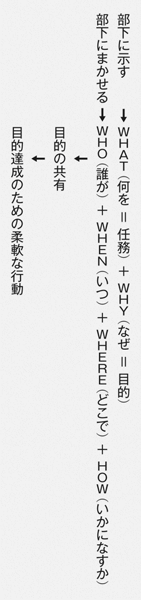

| ランチェスター思考II: 2 | |
| 福田 秀人 | |
| 東洋経済新報社 (2010) | |
本作品は、２０１０年７月発行の福田秀人著『ランチェスター思考 直感的「問題解決」のフレームワーク』（東洋経済新報社）に基づいて制作しています。
本作品を電子書籍として刊行するにあたり、一部の漢字を簡易慣用字やかなで表記している場合があります。
また、本書のコピー、スキャン、デジタル化等の無断複製は、著作権法上での例外である私的利用を除き禁じられています。本書を代行業者等の第三者に依頼してコピー、スキャンやデジタル化することは、たとえ個人や家庭内での利用であっても一切認められておりません。
ランチェスター戦略という理論がある。
それは、消費者マーケットで、「劣勢にある企業が、小さな勝利を積み重ね、優勢に転じて生き残る」ことを追求する「弱者のための戦略」のフレームワークを提供する。
１９７３年、オイルショックという前回の経済危機のときに、パナソニック、キヤノン、ブリヂストン、イトーヨーカ堂などの大企業から中小企業まで多数の企業が導入して危機の打開と、以後の発展に活用した。
より近くでは、ドトールコーヒー、エイチ・アイ・エス、イー・モバイルなどが用いて大きく発展した。最近注目されている、洗剤などの日用品の世界的なトップ企業Ｐ＆Ｇの国際戦略も、そのフレームワークで説明できる。
そこで、今回の経済危機を生き抜く参考になればと、『ランチェスター思考：競争戦略の基礎』（２００８年）と、『リーダーになる人の「ランチェスター戦略」入門』（２００９年）を、東洋経済新報社より出版していただいた。
しかし、どんなに理にかなった戦略も、新たなライバルの出現や顧客ニーズの急変から、取引先や社内でのミスやトラブルの発生まで、戦略の実行を危うくする、様々な問題に、次々と襲われる。
現場で発生した小さな問題が、対応の誤りや遅れにより、大問題に発展することもある。
しかも、多くの問題は、その内容を想定できない「不測の事態」として突発する。
おかげで、経営トップや部門・現場のリーダーの仕事の多くは、大小様々な不測の事態の対応となるが、その仕事をいかになすべきか？
〈完全な解決にこだわるな〉
スウェーデンに本社をおき、世界37ヶ国に２０００店舗を展開し、年商１兆６６００億円（２００９年度）とファッション・アパレル業界で世界一の売上を誇るＨ＆Ｍの日本法人の社長エドマンは、次のように論じている（『ＴＨＥ21』２０１０年５月号）。
・「すべての仕事を完璧にこなそうとしないこと」です。「どの仕事も完璧にやる」というのは、素晴らしい考え方。しかし、現実的ではありません。
・（筆者注 ときには事を急ぎすぎて失敗することも）たしかにあると思います。でも、仮に失敗しても、そこから学んで同じ失敗を繰り返さなければいい。むしろ、数日間手を打たずに放っておいて、手遅れになる方が怖いですね。
完全な解決にこだわらず、素早く対応せよということである。
同様のことを、危機的状況にあった帝人で、ランチェスター戦略を幹部に学ばせて奮闘し、社長、会長を歴任した安居祥策（現、日本政策金融公庫総裁）が、つぎのように論じている。
・経営者は、情報量が３割しかない段階で決断しなければならない。５割になるのを待っていては遅い（日本経済新聞「私の履歴書」２００９年10月26日）。
ここでの遅いとは、「タイミングを失する」ことである。
それにより、やることなすこと後手に回り、チャンスを逃がし、脅威をふやす。そこで......
意思決定では、「タイミングを失さないこと」が至上課題となる。
〈安全確実な意思決定は存在しない〉
これまで論じたことは、変化激しく、不測の事態が相次ぐビジネスの世界で、幾度も失敗してひどい目にあいながらも、生き抜き、結果を出してきた経営トップ、それに、部門や現場のリーダーの多くが心がけてきたことである。
リーダーは、全体の仕事の流れを混乱させないためにも、トップよりもさらに早く対策を決定すべき事態にひんぱんに直面する。
ランチェスター戦略も、地域統計と足を使って顧客の特性とニーズを直接さぐるローラー調査による情報の収集と分析を要求する一方で、戦略を実行に移した後に突発する様々な問題には、リーダーが即決率先して対応する必要を説く。
しかし、このような問題解決のための原則や方法を、体系的に解き明かした経営論やリーダー論を知らない。
一方、アメリカ陸軍は、ベトナム、イラク、アフガニスタンなどでの苦しく困難な戦いから得た教訓をつうじて、孫子やクラウゼヴィッツの『戦争論』（１８３２年）などにみる作戦や意思決定に関する原則が今日も通用するとの認識をもち、それらの理論や教訓をふまえて、次の問題意識で指揮官マニュアルを開発し、改訂してきた。
・いつ何がおこるか分からない「不確実性の霧（フォッグ・オブ・アンサーテンティ）」におおわれ、不測の事態が相次ぐ戦場で、指揮官は、いかに決定し、指揮すべきか。
そして、真っ先に、次のように説く。
★不完全な情報しかなくても、素早く決定せよ。
★完全な解決にこだわって、決定を遅らせるな。
既掲のファッション・アパレル業界の若い女性社長も、凄惨な戦闘を指揮する陸軍指揮官も意思決定の原則は同じである。
また、経済学のシカゴ学派の創設者の一人で、アメリカ経済学会の会長もつとめたナイトは、１９２１年に次のように断じたが、それは、今も変わらない現実である。
・競争が存在するマーケットでは、不確実性を排除することは不可能である。
競争以外にも、既述のとおり、社内でのミスをはじめ、数々の不確実性が存在する。
ＩＴは飛躍的な発展を遂げたが、不確実性を排除するにはほど遠く、ビジネスの世界は、将来どころか、「今、何がおきているか」すら断片的にしか分からないままである。
おかげで、正しい意思決定、ひいては安全確実な意思決定は存在せず、それができるとか、やれというのは、現実離れした理想論にすぎない。
そこで、アメリカ陸軍の指揮官マニュアルのフレームワークを使って、「リーダーが不測の事態にいかに対応するのがよいか」を、つぎの構成で論じた。
部：現場リーダーの意思決定〈直観的意思決定と任務指揮〉
部：上級リーダーの意思決定〈分析的意思決定と直観的意思決定の併用〉
ただし、指揮官マニュアルは、「武力による威圧や殺傷破壊で敵を屈服させ、自らの意思を強制することを追求する軍隊」のマニュアルである。
そのため、「顧客に受容される魅力ある商品やサービスの開発、販売を追求し、ライバルを武力でつぶすことができない企業」にそぐわない内容を含むが、それらは除いた。
なお、意思決定というと、何かを「やる」ことを決めることのように説く論もあるが、「やらない」といった決定も含まれる。
「やる」と決定し、やってみて「まずい」と思えば、「やめる」と決定するのもありだ。
ビジネスでも、大きな損失や破滅の多くは、決定を間違うより、間違いの発見に遅れるか、間違いを認めず、間違いに対処する新たな決定のタイミングを失するからである。
〈企業のリーダーはコマンダーである〉
指揮官は、英語では、リーダー（統率者）ではなくコマンダーである。
コマンドとは、「与えられた権限を使って命令する」という意味である。
パソコンに、計算などをさせることをコマンドというが、それは問答無用の命令であり、実行キーを押すあなたは、パソコンにとってコマンダーとなる。
ようするに、コマンダーは、独裁的リーダーだが、そのかわり......
・コマンダーは、与えられた権限を使って部下に命令し、そのとおりに行動するよう統制（コントロール）し、結果を出す責任をもち、部下の命令違反やミスによる失敗や、不正による不祥事の責任も負わねばならない。これを責任絶対性の原則というが......
・企業のリーダーも、コマンダーとして思考し、行動し、結果に責任をもたねばならないし、それができないリーダーは、無能かつ無責任なリーダーとされる。
この考えは、半世紀ほど前から盛んになった、集団参加型リーダーシップを推奨し、独裁型リーダーシップを批判するリーダーシップ論や、企業も民主主義の理念で経営すべきとする論などと真っ向から対立する。しかし、それらの合意による決定は、時間がかかり、タイミングを失する、あぶない決定法となる。
なお、皆が実行していることは、マニュアルに記す必要はない。
たとえば、「完全な解決にこだわって、決定を遅らせるな」とあるのは、完全な解決にこだわって、決定を遅らせ、悲惨な結果を招く指揮官が、あとを断たないためであろう。
私自身、マニュアル違反は数えきれないほどであり、今後も違反するであろう。
しかし、「やるべきことと、やってはいけないこと」を知り、その実行を心がけるのと、そうでないのとでは大違いである。
また、リーダーが属する企業のありようや、直面する状況は千差万別であり、そのとおりに対応できない、もしくは、対応してはいけない事態もあろう。
たとえば、完全な解決にこだわらなければならない問題もあろう。
指揮官マニュアルには、「どんな状況でも通用する絶対的なものではなく、うのみにしてはいけない」との趣旨の注意がついているが、本書も同様である。
ましてや、アメリカ陸軍の権威を楯に効用をアピールする意図は毛頭なく、読者は、納得できるところを参考にし、できないところは無視すればよい。
本書は、ビジネスだけでなく、医療、教育、ＮＰＯなどの公益・非営利事業や行政に携わるなかで、様々な不測の事態と格闘しているリーダーの参考にもなると考える。
なかでも、30歳代の方々に読んでいただきたい。というのは......
30歳代は、よく勉強する方が多い世代のためか、完全な解決や最適な選択を追求する理論にも影響され、結果、成果があがらずに悩む方をよく見かけるからである。
最後に、陸上自衛隊幹部学校の幹部自衛官有志による海外文献研究会や陸戦学会のメンバーの研究成果を参考にさせていただき、貴重なご助言をいただいたこと。大変な努力の成果である指揮官マニュアルを配布制限なし（delivery unlimited）として開示されたアメリカ合衆国陸軍の度量。それに、東洋経済新報社出版局編集第二部の河野修部長と宮崎奈津子さんの構想から出版までの懇切なご支援に心から感謝申しあげます。
［付記］
・「アメリカ陸軍の指揮官マニュアル」は、「指揮官マニュアル」と記す。
・用いた指揮官マニュアルは、つぎの３つである。
ＦＭ３－０．作戦（Operations）、２００８年改訂版。
ＦＭ５－０．作戦計画と命令の準備（Army planning and orders production）、２００６年改訂版。
ＦＭ６－０．任務指揮：指揮と統制（Mission command: command and control of army forces）、２００３年改訂版。
・本文の文頭に★を付した記述は、指揮官マニュアルからの抜粋である。
・その一部は、『リーダーになる人の「ランチェスター戦略」入門』（２００９年）、『ランチェスター思考：競争戦略の基礎』（２００８年）（いずれも東洋経済新報社）、『見切る！：強いリーダーの決断力』（祥伝社、２００６年）などの拙著で紹介・解説しており、それらと重複する内容が３割前後あることを了解されたい。
・同マニュアルの翻訳と解釈に関する責任はすべて筆者にある。
・撤退は、大変に重要な決定だが、『見切る！：強いリーダーの決断力』で詳述したので、簡単に触れるにとどめた。
■ＰＳ：クラウゼヴィッツを継承する ─指揮官経験者のスカウトに励むグローバル企業─
連戦連勝している軍隊ではなく、ベトナムで敗退し、イラク、アフガニスタンで苦戦している軍隊の指揮官マニュアルが参考になるのか疑問に思われる方もいよう。しかし......
敗北や苦戦からえた教訓をもとに作成したマニュアルだからこそ参考になるのである。
それは、軍事、それにビジネスでも、成功事例だけから、成功理由を少数の要素に求め、勝利の方程式をアピールする単純明快な理論や論説の対極に位置するものである。
多くの成功はきわどい成功であり、また、それに至る過程に、地道な努力の積み重ねや、数々の思わぬ脅威との悪戦苦闘、それにいくつもの失敗や幸運があるものである。
当然、それらをしっかりと研究しなければ、成功体験へのこだわりではなく、いい加減なサクセス・ストーリーを信じたことにより破滅する危険が生じる。
１９４５年、日本占領軍最高司令官になったマッカーサーは、その26年前、アメリカ陸軍士官学校長に就任するや、自らも従軍した第一次大戦の教訓をふまえた訓練マニュアル作成に着手した。
第二次大戦の最中も、アメリカ陸軍は、勝った戦いでも、そのプロセスで生じた問題の摘出と、今後、何をすべきかという教訓の抽出に熱心だった。１９７５年のベトナム戦争の敗戦ショックで、しばらくその作業は中断したが、やがて、軍全体で、２５００年前の中国の孫子や、プロシアの将軍クラウゼヴィッツなどの歴史の洗礼に耐えた軍事論をもとに、戦争を本質から見直していった（cf：西村繁樹編著『「戦略」の強化書』２００９年）。
アメリカ陸軍は、もともと、クラウゼヴィッツや、その弟子を自任したプロシアの参謀総長モルトケの信奉者であり、指揮官マニュアルでも、その思考や方法論が今日も通用するとの認識を示し、理論的な支柱としている。
そして、「状況が不透明で、あらゆる決定が失敗の危険をはらむなかで、指揮官は、破滅を回避し、任務を遂行するために、何をし、何をしてはいけないか」を、論じている。
不確実性の霧（フォッグ・オブ・アンサーテンティ）も、「戦場では何がおきても不思議ではない」と説いたクラウゼヴィッツの戦場の霧（フォッグ・オブ・ウォー）を借用した表現である。
本書は、孫子論でも、クラウゼヴィッツ・モルトケ論でもないので、彼らの論を引用しないが、それを知る方は、指揮官マニュアルの内容がそれらと整合するものであることに気づくであろう。
また、２００９年、Ｐ＆Ｇが、アメリカ陸軍士官学校を２番で卒業した指揮官経験者をトップに抜擢して話題になったが、グローバル企業の間でＭＢＡ（経営学修士）の人気が落ちる一方で、指揮官経験者のスカウトが盛んになっているときく。大前研一は、「想定外の事態に即応できる強み」と題して、アメリカ企業が一流大学の出身者を採用しなくなったことを指摘し、米誌『フォーチュン』（２０１０年３月22日号）の「アメリカのビジネス界は、イラクやアフガニスタンでの駐留経験を持つ若い将校を積極的に採用し始めている。その企業は軍需産業だけでなく、ＡＴ＆Ｔやバンク・オブ・アメリカ、ペプシコ、メルクなど様々な業界に広がっている」などの記事を紹介し、アメリカ企業が「人材力において有事即応体勢を整えている」ことを論じた（「ビジネス新大陸の歩き方：ジャングルで勝ち抜く戦闘力をつけろ」週刊ポスト２０１０年４月23日号）。
私も、「せめて知識だけでも」との思いもあって、本書を執筆した。
ランチェスター思考 直観的「問題解決」のフレームワーク―目次
■ＰＳ：クラウゼヴィッツを継承する─指揮官経験者のスカウトに励むグローバル企業
部 現場リーダーの意思決定〈直観的意思決定と任務指揮〉
１章 意思決定の指針─スピード第一、安全二の次─
１「早く」と「正しく」の両立は難しい─アマチュアの論理─／２スピード第一、安全二の次―意思決定の指針―／３決定をのばすのはタブー／４不確実性とリスクの両方に対応する─ナイトの「不確実性」─／５不測の事態に対応する責任─テイラーの「例外原則」─／６不確実性を受け入れる─戦いは錯誤の連続─／７問題解決力が低下する理由／８受容可能なリスクを決める─危険なリーダー─／９情報操作の脅威─手塚治虫の「マンガの３原則」─
２章 直観的意思決定の励行─司令部からの情報も疑え─
１直観的意思決定と分析的意思決定─サイモンの「意思決定過程」、井上尚美─／２複数の情報源にあたる／３司令部からの情報も疑え─情報共有システム幻想─／４仮定に疑問をもち続ける／５４種類の戦術行動─攻撃、防御、遅滞行動、後退行動─／６絶体絶命のときは希望を優先─ミリタリー・ギャンブル─／７ふだんからの心がけが大事／８迅速と的確は両立するとの主張─アイゼンハート─／９矛盾にみちあふれた「迅速と的確は両立する論」／10ＩＴがＫＫＤの限界を打破するのではなく、ＫＫＤがＩＴの限界を打破する
３章 任務指揮の励行─命令一元化、権限委譲、責任絶対性の原則─
１任務指揮と詳細指揮─ＷＨＡＴとＷＨＹを明快にする─／２分権的な行動／３マニュアルは、失敗の言い訳にならない―マニュアルの限界―／４部下の任務は指揮官が決める／５部下の失敗はリーダーの責任である─ファヨールの「管理原則」─／６無断で任務を変える―任務の分析―／７目的の合意が最優先／８２階層上の指揮官の意図を理解する─コンセプト・オブ・オペレーション─／９手段の目的化の脅威―何でも規則病―／10手段の目的化と戦う─改善活動の効用─
４章 指揮と統制の原則─忍耐力の限界をわきまえ、目を見つめる─
１部下の忍耐力の限界をわきまえる／２部下の目を見つめ、声の調子をきく─指揮の原則─／３ヘッドシップの発揮─バーナードの「権限受容説と無差別圏」─／４「権力の魔力」の脅威─よいリーダーVSだめリーダー─／５やる気を失った部下の脅威─アージリスの「成熟・未成熟モデル」─／６組織と個人の不適合を防ぐ─集団的意思決定の危険─／７小さな案件の議論に時間をかけるな─パーキンソンの「些細の法則」─／８企業はコミュニティではない／９対外折衝への参加者を１、２名に絞る─日立、ホンダ、日産の違い─／10部下の過剰な依存を避ける─手続的統制と積極的統制─／11ネステッド・コンセプトによる「見える化」─統制の指針─／12交戦中に発砲した兵士は25％─マーシャル大佐、河野仁─／13家族的な連帯感が大事─シルズ＆ジャノヴィッツの「一次集団の絆」─／14勝ち組企業と負け組企業の違い─力は速度の２乗に比例する─
５章 不在指揮による教育─やらせてみて、失敗させて、人は育つ─
１経験の効用／２経験不足の脅威─素人優越主義の高まり─／３経験が、素早い論理的な決定を生む―道田泰司―／４不在指揮で教育する─指揮の要諦─／５失敗不足の脅威／６「努力している間は失敗ではない思考」の脅威／７失敗を認めないリーダーの恐怖─見切りの重要性─
６章 警戒の原則─常識的な警戒が大事─
１戦いの９原則／２危険な状況に気づかない脅威／３せめて常識的な警戒をする─敵を喜ばせるな─／４常識的な警戒も、けっこう難しい―アクション・スリップ―／５奇襲は逆襲の危険をもたらす／６攻勢限界線越境のアラーム―凶作用は時間と共に強くなる―／７撤退や持久も考慮する／８攻勢主義の脅威─フォッシュ・ドクトリン─
部 上級リーダーの意思決定〈分析的意思決定と直観的意思決定の併用〉
７章 作戦計画の意義と条件─バック・キャスティングの実行と集団的浅慮の回避─
１３つのレベルの意思決定―戦術、作戦、戦略レベル―／２ライン・アンド・スタッフ組織の出現─モルトケ─／３ライン・アンド・スタッフ組織の威力―スローン―／４企業をつぶすスタッフたち─ミンツバーグ─／５作戦計画の意義―バック・キャスティング―／６優れた作戦計画の条件─やはり、ＷＨＡＴとＷＨＹを明快にする─／７潜在的危険要素の摘出とリスク評価／８集団的浅慮（グループ・シンク）の脅威と対策
８章 作戦計画の作成─ＭＤＭＰと批判的思考の励行─
１作戦で考慮すべき要素―ＭＥＴＴ－ＴＣ―／２ＭＤＭＰ（軍事的意思決定過程）を使う／３行動方針を評価する─適合性、実行可能性、受容可能性─／４ロジカルシンキングには批判的思考が必要─井上尚美、野矢茂樹、道田泰司─／５批判的思考を作戦決定の中核にすえる／６決定のタイムリミットを定め、短縮する─クリティカル・ファクターは時間─／７配下の部隊に時間的余裕を与える―１／３、２／３ルール―／８威力偵察で時間を短縮する／９時間が許す限り、計画を修正する／10計画を単純化しすぎてはならない─シンプルVSシンプリスティック─／11作戦計画作成から作戦終結までのフロー─バック・ブリーフィング─
９章 作戦の指揮・統制─前線に進出し、ＯＯＤＡサイクルを回す─
１上級指揮官も前線に進出する─スリム、ナポレオン、ロンメル、リッジウェイ─／２２階層下の指揮官とのフェイス・ツー・フェイスの励行／３指揮所の囚人になるな／４エクセプショナル・インフォメーションを最優先する／５緊要情報要求を、できるだけ減らす／６ＰＤＣＡサイクルは無謀な試み―計画経営の問題点―／７ＯＯＤＡサイクルを回す／８計画も準備も省略するとき─熟慮作戦VS緊急作戦─／９統合作戦計画の作成と実行―強制的戦力投入VS管理的戦力展開―／10４日ごとに作戦を変える─バトルリズム─
10章 情報システムの構築と運用─中央集権的なシステムの追求─
１中央集権的なシステムの追求─Ｉ、システム・オブ・システム、Ｃ４ＩＳＲ─／２情報共有による個別的意思決定システムの危険／３「ネット中心の戦い」への疑問／４ロジカルシンキングの成功確率は５％以下？─藪医者の論理とニセ医者の論理─／５在来事業も錯誤の連続―リーマンショック、たまごっち―／６計画作成を成果と考える愚
11章 危機を管理する論の脅威─キューバ危機対応とＩＣＳの過大評価─
１危機管理という名の危機促進論―キューバ危機―／２勝てるなら戦い、勝てなければ去る─毛沢東─／３アメリカは危機管理に優れているのか？／４ＩＣＳは使い物になるのか？／５５トップの陣頭指揮の危険／６危機管理部が指揮する危険／７非常事態への対応―トップの陣頭指揮に影響する要素―／８トップの敵前逃亡の脅威／９法化社会の脅威
12章 教訓操作の脅威─「坂の上の雲」の下の現実─
１勝っても問題点をチェックする―イカロス・シンドローム―／２教訓抽出により失敗経験を共有する／３日露戦争では、日本軍の方が武器弾薬に優れていた─明治31年歩兵操典─／４白兵主義への転換―明治42年歩兵操典―／５教訓操作命令─陸軍参謀本部大島通達─／６日露戦争の真の教訓―小沼少佐―／７教訓操作の悲劇─ドイツ軍人の歩兵操典批判─／８組織の教訓操作〈裏〉マニュアル―隠匿知の摘出が必要―／９アフター・アクション・リビューの励行
終章 特に大事な原則と方法─ロジカルシンキングの副作用─
１ロジカルシンキングの副作用／２ロジカルシンキングに磨きをかける脅威／３アメリカ人は、ロジカルシンキングに優れているのか？／４特に大事な原則と方法／５トレードオフを直視する／６問題には発生順に対応せよ／７「なさざるべき」を知る─スイス市民防衛組織マニュアル、リデル・ハート─
巻末資料：アメリカ陸軍指揮官マニュアル抜粋事項
補 論
【１】ナイトの不確実性／【２】最適が満足をもたらすとは限らない／【３】時間割引率を楯にした議論は要注意／【４】単品管理システムの限界をＫＫＤで打破したファースト・リテイリング／【５】「選択と集中」から「見切りと集中」へ／【６】問題の構成度合いによる分類／【７】ＳＷＯＴ分析は実行不能／【８】ランチェスター戦略の概要／【９】戦略と計画の違い／【10】キューバの危機管理の方が優れている？／【11】組織テロを地震や空き巣同様にみなす危険
エピソード
〈１〉消費財商社のビジネス方針／〈２〉精密誘導爆弾は、本当に狙った目標に命中したのか？／〈３〉ホテルで接した「しっかり組織」と「でたらめ組織」／〈４〉回答期日を決定することまで大幅に遅らせる企業／〈５〉日独と英米の幕僚の評価の違い／〈６〉俊才揃いのドイツ軍参謀本部の悲劇／〈７〉自治体の監査業務担当課長の危機感／〈８〉タートル主義者を抜擢する愚行／〈９〉コスト優位を吹き飛ばされた色素増感太陽電池／〈10〉那覇空港旅客機炎上事故での勇敢な行動とパニックの防止／〈11〉測距儀の数で圧倒的優位にたった日本海海戦
装幀：竹内雄二
写真撮影：尾形文繁
本文デザイン：坂重輝（グランドグルーヴ）
本文ＤＴＰ：佐藤浩明（デジタルアーカイヴ）

１章 意思決定の指針─スピード第一、安全二の次─
不測の事態の多くは、全容を早く正しくつかむことができないため、「早く」を追求すれば「正しく」がおろそかになり、「正しく」を追求すれば「早く」がおろそかになる。
「あらゆる脅威に迅速的確に対応せよ」といった趣旨の論は、「あちらをたてれば、こちらがたたず」といった、トレードオフの関係にある課題の両立を簡単に考え、「やれ」とか「やれる」とするアマチュアの論理である。
アマチュアの論理
 実現が難しい理想論を、実行すべき規範論にする。
実現が難しい理想論を、実行すべき規範論にする。
当事者の能力や努力を知らず、無能・無責任・怠惰と批判する。
専門家は、ミスをせず、また、変化や危険を予知できる存在と決めつけ、ミスやトラブルが発生すれば、「たるんでいる」と批判し、時には、犯罪者にする。
↓
 難しいこと、危険なことを簡単に考え、「やれ」と言う＝「素人の暴論」。
難しいこと、危険なことを簡単に考え、「やれ」と言う＝「素人の暴論」。
 成功や失敗の理由を、しっかりと調べずに１～２の要素に求める。
成功や失敗の理由を、しっかりと調べずに１～２の要素に求める。
特に、「意識」、「体質」、「制度」、「組織構造」に求める。
↓
 現在の制度のデメリットのみをあげつらう。
現在の制度のデメリットのみをあげつらう。
 新たな制度をメリットのみをアピールして提唱する。
新たな制度をメリットのみをアピールして提唱する。
 新たな制度のデメリット、副作用を考えない（知らない？）。
新たな制度のデメリット、副作用を考えない（知らない？）。
↓
 新たな制度が諸問題を一気に解決すると考え、改革や革命を連呼する。
新たな制度が諸問題を一気に解決すると考え、改革や革命を連呼する。
できない理由を、改革する創造力や意欲の不足に求める。
トレードオフがある課題を、同時にやれと言う（たとえば、迅速と的確）。
［拙著］『ランチェスター思考：競争戦略の基礎』（２００８年）より若干加筆修正して転載。
＊アマチュアの論理は、誰かが拙著より抜粋し、インターネットの２チャンネルに投稿し、次々と転載され、流布された。それにより......
・ランチェスター戦略のなかで論じられていると思われた方もいるが、私の持論である。
・お説教とみなした方もいるが、アマチュアの論理に惑わされないように注意をうながしたのである。
・特定の政党や政治家を批判したものと理解する方もいたが、そのような意図はない。
・アマチュアスポーツなどを誹謗したものでない。アマであれ、プロであれ、競技に勝つために真摯に努力される方は、勝つことの難しさを知っており、アマチュアの論理にはおちいらない。
２スピード第一、安全二の次─意思決定の指針─
迅速と的確のトレードオフに、いかに対応すべきか？
中国の孟子は、「拙といえども、速をもってすれば勝つ」と、拙速、すなわち、迅速を優先させよと説いた。
ようは、「スピード第一、安全二の次」である。
それから２３００年が経過した今日、アメリカ陸軍は、つぎのとおり、指揮官の意思決定の指針を定めているが、５つのうち、～の３つもが、迅速優先の拙速の奨励である。
★意思決定の指針
敵の意図、能力、反応時間を考慮せよ。
不完全な情報しかなくても、素早く決定せよ。
完全な解決にこだわって、決定を遅らせるな。
できるだけ早く、受容可能なリスク（アクセプタブル・リスク）を決め、納得のいく行動をとれ。
できるだけ低いレベルまで、意思決定の権限をゆだねよ。
ここでの意思決定は、安全確実とほど遠い、危険を承知の決断である。
なお、チャンスへの対応も決断である。
なぜなら、チャンスにも、損失や失敗をもたらす脅威がひそんでいるからである。
何の脅威もないチャンスというのは、その脅威に気づかないだけである。
企業でも同じである。新しいビジネスの多くは、チャンスを生かすために試みられ、一時的には成功しても、その多くは、不測の脅威に直面し、破綻する。
大口の新規取引に成功し、喜んだのもつかの間、厳しい要求や謀略により大きな損失をこうむるなど、その事例には事欠かない。
チャンスをものにし、大きな成功をおさめた事例は、そのプロセスで、数多くの不測の脅威と、知恵と汗をふり絞って必死に戦い、幸運を呼び寄せ、破綻を回避してきたのだ。
３決定をのばすのはタブー
アメリカ陸軍が拙速を連呼するのは、孟子が説くように、必勝の方法だからではない。
決定や実行に時間をかけたために、勝機を逸するだけでなく、深刻な損害をこうむった事例が、多数存在するからである。
これは、壮大な情報の収集・分析システムをもつアメリカ軍ですら、迅速的確な決定のために必要な情報を素早くつかめない現実を示している。ましてや......
・アメリカ軍と比較にならない貧弱な情報システムしかもたない一方で、砲弾は飛んでこないが、戦場の軍隊より、はるかに多種多様な脅威にさらされる企業では、拙速を心がけなければ、たちまち問題山積となり、収拾がつかなくなる。
安全確実な決定にこだわって決定を遅らせること、また、決定しても実行をためらうことを遅疑逡巡という。
これは、戦力を小出しに追加投入していく戦力の逐次投入と並んで、軍事で最大のタブーとされるが、ビジネスでも同じである。
４不確実性とリスクの両方に対応する─ナイトの「不確実性」─
シカゴ大学の経済学者ナイトは、脅威をつぎのように、不確実性（アンサーテンティ）とリスクに分けた（『リスク、アンサーテンティ・アンド・プロフィット』１９２１年）。
・不確実性：発生確率を予測できない脅威。
・リスク ：発生確率を予測できる脅威。
このような不確実性の定義をナイトの不確実性と呼ぶ。
アメリカ陸軍も、つぎのように、不確実性とリスクをはっきりと分けて考え、指揮官に、両方に対応する覚悟と能力を要求している。
★あらゆる作戦に不確実性が伴い、あらゆる決定にリスクが伴う。
★指揮官は、様々なリスクを比較勘案（バランシング）し、有利な機会を生かすと共に、不確実性が伴う状況下で行動する能力なしには成功できない。
リスク管理は大事だが、それだけではだめなのである。
「予想できない事態が発生したため失敗しました」という言い訳は通用せず、不確実性に対応する意思と能力に優れて、はじめて、一人前の指揮官とされる。
補論【１】ナイトの不確実性
ナイトは確実な決定ができない事象を次の３つに分類した。
・先験的確率：２つのサイコロを投げたときの目の合計が同じになる確率のように、数学的に確率が算出できる事象。
・統計的確率：年齢別死亡率や平均余命のようにデータから確率が算出できる事象。
・推 定：発生確率を算出する事象の特定ができず、また、一回しか発生しない事象。
この３番目の事象が、発生確率を予想できない不確実性であり、その代表として企業の意思決定をあげ、「競争が存在するマーケットでは、不確実性を排除することは不可能」と断じた。
余談ながら、ナイトは、「道徳哲学をふまえた自由主義と制度改革」を説いたが、フリードマンたちシカゴ学派の後継者は、道徳哲学を継承せず、フリードマンの市場原理主義的な発想にナイトは激怒し、彼との師弟関係の絶縁を宣言した。
５不測の事態に対応する責任─テイラーの「例外原則」─
企業の各レベルのリーダーにも、前記の指揮官と同様の意思と能力が求められる。
しかし、不測の事態が言い訳として通用する企業が多いように感じる。
大きな損失を出す、ないし破綻した企業のトップに、誰もが予想できない不測の事態をアピールし、自分に責任がなかったかのように釈明するトップがいる。
そこでは、リーダーの間でも、不測の事態への責任転嫁が横行していたはずである。
不測の事態と認めるのはよいことだが、それを失敗の理由とするのは無責任である。
不測の事態でこそ、リーダーの真価が問われる。
ちなみに、指揮官マニュアルに、つぎの記述がある。
★信頼を得るには時間がかかるが、極限状態でのミスにより瞬時に失われる。
★信頼は戦う技術や技能からはじまる。なぜなら目に見えるからである。
１００年あまり前、科学的管理法で有名なアメリカのミッドベール製鉄所の技師長テイラーは、現場リーダーの最大の役割を例外対応、すなわち不測の事態への対応とした。
例外対応の意思や能力に劣るリーダーは、いかに人格やコーチングに優れようと、様々な問題を放置し、悪化させる危険人物であり、リーダーになってはならない人間である。
コーチングはリーダーでなくてもやれるが、決定と指揮は、その権限を与えられたリーダーしかやれないのであり、また、やらなければならない。
なお、テイラーは、リーダーに、例外対応した後は、その詳細を管理部門に報告することと、同様の事態が再発したときは、部下が対応できるよう教育指導する必要を説いた。
これを例外対応の原則という。
６不確実性を受け入れる─戦いは錯誤の連続─
指揮官の意思決定の指針に記されているつぎの２つの記述は、得られた観察事実や情報だけをもとに決定することを要求するものである。
★不完全な情報しかなくても、素早く決定せよ。
★不確実性の軽減にこだわらず、不確実性を受け入れ、直観的意思決定をせよ。
当然、よい結果を生む決定とならず、さらなる不測の脅威に襲われる可能性が大である。
しかし、そうなればその時に、どう対応するかを、同様に決定するのである。
・「不確実性を受け入れる」とは、錯誤は当たり前という認識で決定し、戦うことである。
・決定を実行に移した後は、錯誤の発生をマークし、錯誤の早期発見・早期対応を心がけるのである。
ビジネスの世界でも......
・深刻な損失の多くは、決定を間違えるより、間違いに気づくのに遅れたためか、メンツや責任回避にこだわり、間違いを認めないために発生する。
ただし、素早く決定しなかったために、取り返しのつかない悲惨な結果をまぬがれるとか、よい結果を得ることが、珍しくないのも、ビジネスの世界の現実である。
たとえば、今回の経済危機の前、製品需要の増加に対応すべく、新たな生産設備の導入を考えたが、どの程度の能力を有する設備がよいかを、あーでもない、こーでもないと検討している間に、経済危機が発生し、導入を回避した企業はその典型である。
人材募集に、かろうじて採用基準をクリアーする人材が応募してきたが、採用決定の稟議に数日かけているときに、はるかに素晴らしい人材が応募してくることもある。
素早い決定をしなかったことが、よい結果を生んだ事例をいくつも見つけ、素早い決定をせよという論を否定することもできようが、指揮官マニュアルでも、ひいては、本節でも、素早い決定がよい結果を必ず生むとは論じていない。
可能性の問題であり、その考えを肯定するか否定するかはリーダーの自由であり、リーダーは自らの判断に殉じるしかないのである。
７問題解決力が低下する理由
「錯誤は当たり前、決定は間違って当たり前」と割り切ることで、素早い決定ができる。
裏を返せば、錯誤を許さない上級リーダーの下では、素早い決定はできない。
そういった上級リーダーが大手を振っている企業では、完全な解決が困難な問題対応についても、「万全を期す」、「迅速的確」、「きちんと対処する」......といった言葉が気楽に飛び交い、結果、万全を期すため、情報の収集と分析に大変な時間とコストを消耗するか、迅速的確に対応できる簡単な問題にしか対応せず、きちんと対処できない多くの問題が放置される。
「リーダーに失敗は許されない」といった主張を見受けるが、これを真に受ける企業や部門では、失敗の可能性のあるチャンスへの挑戦や問題の解決に取り組むリーダーはいなくなる。
昨今、ビジネスパーソンの問題解決力の低下がとりざたされるが、それが事実なら、それは、ロジカルシンキングのスキルを習得していないというより、次の理由のいずれか、ないし、それらの相乗効果であると考える。
問題解決力が低下する理由
問題に関連する知識や経験の不足（５章２節で詳述）。
完全な解決にこだわって、タイミングを失する。
「あらゆる決定に損失をこうむる危険が伴う」ことを知っており、損失を出し、責任を追及されることを嫌って決定を回避する。
解決に失敗したと気づいても、責任を追及されることをおそれて失敗を隠し、問題がどんどん大きくなって表面化する。
アイデアが良ければ成功するとか、がんばれば業績が上がるといったような、短絡的ないし一面的なロジックをふまえた理論を信じ、安易に問題に取り組む。
なお、問題解決力の低下は、私を含む昭和生まれの世代から、ひどくなったと感じる。
それは、ロジカルシンキングではなく、直観力と決断力の低下によるものであり、戦争や、戦後復興期という、大変な時代を、勘と度胸と強靱な精神力で、身体を張って戦い抜いてきた経験の有無によるものと考える。
そして、１９９０年代以降、つぎの理由により、さらにひどくなったと考える。
・バブル景気の崩壊をきっかけに、土地や株式が大幅な下落に転じ、失敗のバッファー（緩衝材）が細ったことにより、失敗が企業の存続可能性に与える打撃が飛躍的に強まった。
・意思決定にまで、安全確実にこだわるリスク管理の強化を、社内の官僚主義者だけでなく、行政が主導するようになった。
・アカウンタビリティ（説明責任）を金科玉条とするメディアなどにより、ささいな失敗も開示を要求され、あげつらわれるようになった。
・人事の停滞により、若い社員への権限の委譲が進まず、彼らから決断の機会を奪った。
・結果ではなく、動機と行動がよければよしとし、また、統制の排除や合議による意思決定を至上のものとし、独断を悪とする、教育やリーダーシップ論が浸透した。
この20年間で、企業差はあろうが、独断で決定できる裁量の余地は、課長で半減、主任、係長で７～８割ほど減少したのではなかろうか。
そして、その限られた裁量の余地を生かそうとする者は、さらに少なくなったと感じる。
８受容可能なリスクを決める─危険なリーダー─
予想できる脅威、すなわちリスクへの対応方針は、意思決定の指針に記されているとおり、「できるだけ早く、受容可能なリスクを決め、納得のいく行動をとれ」である。
指揮官は、その権限を与えられ、それを行使するのが責任である。そこで......
★指揮官だけが、受容できるリスクを決めることができる。
★コストに見合った成果が得られると判断できるなら、部隊を危険にさらすことができる。
リスクを読み、受け入れることができるリスクを決め、不確実性とは、でたとこ勝負で戦うのである。それができないリーダーは、つぎのとおりの危険なリーダーとなる。
〈危険なリーダー〉
リスクをとらないリーダー
↓
優柔不断：何も決定できず、脅威を悪化するにまかせて、大きな損失を生む。
とるべきリスクを決めないリーダー
↓
軽挙妄動：とめどなくリスクを受け入れ、大きな損失を生む。
エピソード〈１〉消費財商社のビジネス方針
１９８０年代に急成長を遂げ、バブル景気破綻後も業績をあげ、東証一部上場の優良企業となった消費財商社Ａ社の創業経営者は、左記の方針を毎日のように説き、その実行を厳しく指導していた。それは、期せずして、指揮官の意思決定の指針のリスク対応方針と一致する考えである。
損をするリスクのない商売はない。リスクがないのは、リスクに気づかないだけだ。
リスクを明確にして商売に取り組め。
商売では、リスクをとらなければイニシャチブがとれない。
イニシャチブがとれない商売ほど危険な商売はない。リスクをとって、リスクと戦え。
これらは、よいアイデアと、チャレンジ精神と、資金があればビジネスに成功するかのように説くベンチャービジネス論や独創至上論が、考慮していないことばかりである。しかし、同様のことを説く経営者は珍しくない。それらは、存続・発展のための十分条件ではないが必要条件であり、その努力をたゆまずなす企業が、存続・発展可能性を高め、怠る企業は衰亡していく。
９情報操作の脅威─手塚治虫の「マンガの３原則」─
奇襲（サプライズ・アタック）は、「敵をその準備をしていない時期、場所及び方法で打撃すること」と定義される（アメリカ陸軍、ＦＭ３─０）。
不測の脅威の出現は、逆に、奇襲を受けたのと同じであり、「予想していない時期、場所、方法で、打撃される」ようなものである。
それは、予想できる脅威に対応するリスク管理の対象外の不測の事態である。予想していないだけに、その全容を素早く正しくつかむことが困難な場合が多い。
重要な情報の欠落や、事実と反対の情報もあり、それを正しく識別することも難しい。
しかも、発信者の思惑で、漫画家手塚治虫が説いたマンガの３原則同様に、「省略、誇張、変形」する情報操作が施されている報道や報告が圧倒的多数である。
世の中、それに社内も、情報操作のたまり場のようなものである。こういった状況では、ゆっくり的確な意思決定すら不可能である。しかも、正しい情報であっても、その意味を正しく解釈することは困難である。
たとえば、ライバルメーカーの主力商品がスーパーの店頭で大幅に値引き販売された場合、それが、一時的なものか否か、さらに値下げをするかしないかの判断は難しい。
また、値下げで一気にマーケットをおさえる前向きの意図によるものか、在庫処分をして撤退するためか、新商品発売に備えての在来商品在庫の処分のためか、資金繰りに窮して後先かまわない資金調達のためか......も分からない。
ここに、次図のとおり、数々の錯誤が発生する。
錯誤が生まれる理由
ただし、何がおこっても不思議ではない不確実性の霧におおわれたビジネスの世界では、状況の変化により、錯誤による間違い決定が素晴らしい決定になることもある。
たとえば、ある中規模商社で、新たに扱いをはじめた既存商品について、その種の商品のそれまでの年間国内需要量を一桁多く推計した情報をもとに、年間需要量の数倍の商品を発注した。
その情報は、「そんな馬鹿な」と直観できるはずの大きな数字であった。
ところが、その直後、その商品がブームになって数ヶ月で完売し、圧倒的な供給力でマーケットを大きくおさえ、以後も優勢を維持した。
なお、このような幸運の産物も、変化を見抜く洞察力や、しっかりとした情報の収集、分析の成果であるかのように後講釈され、12章で論じる教訓操作の脅威をもたらすことも珍しいことではない。
エピソード〈２〉精密誘導爆弾は、本当に狙った目標に命中したのか？
１９９１年の湾岸戦争のとき、アメリカ空軍のウオールアイというＣＣＤカメラを先につけた誘導爆弾が、バグダッドのビルと砂漠の兵器庫に命中する映像が幾度も放映された。今もたまに放映されるが、百発百中の精密誘導兵器と信じられ、メディアもそう報じた。しかし、はずれて、そこに命中したのかもしれない。投下する前に目標がそれであることを予告したのでもない。また、投下されたのが何発で、そのうち何発が命中したのかも報告されなかった。
ちなみに、イギリスの軍事誌ジェーン・ディフェンス・ウィークリーは、ウオールアイについて「問題あり」と報じ、ある軍事情報関係者は、「約２００発が投下されて、命中したのは、映像が流された２発と、油田の油井からの原油流出防止のための１発、計３発」と指摘した。アメリカ空軍は、レーザー誘導爆弾90％、通常爆弾15％と、他の種類の爆弾の命中率は発表したが、ウオールアイだけは発表していない。「ほとんどが命中した」との指摘もあるため、どれが本当か知らないが、とにかく２発がビルと武器庫にあたった映像だけで、百発百中の兵器と、広く信じられた。
情報戦、インテリジェンス・ウオーなどといって、何かすごいテクニックが使われているような論があるが、子どもでも使うようなテクニックが横行し、それに大人は簡単にだまされるのである。なお、海上の艦船から遠くの目標を攻撃するトマホークという巡航ミサイルの軍艦からの発射映像も盛んに流され、命中率80％と公表されたが、マサチューセッツ工科大学の研究チームが詳細に調査し、50％程度にすぎなかったと指摘した。
近年は、カーナビなどでも利用されているＧＰＳ（グローバル・ポジショニング・システム：全地球測位システム）により、命中精度が極めて高い誘導兵器が開発されているが、当時は、そういったものはなかったのである。
２章 直観的意思決定の励行─司令部からの情報も疑え─
意思決定論の権威とされ、ノーベル経済学賞を受賞したカーネギー・メロン大学のサイモンは、意思決定は、つぎの３段階の過程を経るとした（『経営行動』１９５７年）。
サイモンの意思決定過程
情報活動（インテリジェンス）：決定を必要とする事項を見つけること。
↓
設計活動（デザイン）：いくつかの可能な実行案を考案し、展開し、分析すること。
↓
選択活動（チョイス）：得られた実行案のなかから、特定の案を選択すること。
これは、論理思考、すなわちロジカルシンキングの代表的なフレームワークである。
その反対が、国語学者井上尚美のつぎの定義が示すとおり、直観思考である（『言語論理教育入門』１９８９年）。
・ロジカルシンキングの広義の定義：広く直観やイメージによる思考に対して、分析、総合、比較、関係づけなどの概念的思考一般のこと。
アメリカ陸軍も同様の考えで、つぎのとおり、意思決定を直観思考によるものと、しっかりと情報を集め分析するロジカルシンキングによるものに分けている。
★直観的意思決定（インツイティブ・ディシジョン・メーキング）：
得られた情報や観察だけで、直観的に状況を推定し、「ひとつの案を考え、決定する」。
★分析的意思決定（アナリティック・ディシジョン・メーキング）：
時間をかけて情報を集め、状況をじっくりと分析し、「複数の案を考え、そのうち最もよいと思う案を選択する」。
そして、前章で紹介したとおり、状況が不透明で、刻々と変化する、不確実性が高い場合に分析的意思決定にこだわれば、タイミングを失して大きな損失をこうむる危険が大きくなることを強調し、意思決定の指針で、直観的意思決定を奨励している。
サイモンも、決定には、「ルーティンワークをするさいの定型的なプログラム化された決定」から、新製品の開発販売のような、「はじめて、ないし、目的を達成する方法が確立していないプログラム化されていない決定」に至る連続的な軸があるとした。
そして、後者にいくにしたがって、判断力、直観力、創造力が必要になり、それに優れた幹部の選抜と教育訓練が重要になると論じた。
補論【２】最適が満足をもたらすとは限らない
サイモンは、人間は、ほとんどの決定において、「最良の案を選択するという最適化を追求する経済人間」ではなく、「これで十分」という「満足のいく案をさがし、選ぶという満足化を追求する管理人間」であるとし、組織も同じだとした。結果、最大利益ではなく適正利潤を追求し、最大利益を得るための最適価格ではなく、一定の利益を得るための公正価格を追求する。これにより、実行可能な案をすべて洗い出さずに、早く決定ができるのである（この考えの基本となる満足人仮説を打ち出したのはバーナード（『経営者の役割』１９３８年）であり、サイモンはその影響を強く受けた）。
その後、情報の経済学が発展したが、そこでは、人間は、最良を追求する場合と満足を追求する場合があるとされた。たとえば、はじめての飲食街で食事をする店を選ぶさい、ひととおり見て回って、最も良いと思う店を選ぶ場合と、「ここがいい」と思う店に出会えば、その店に入り、それ以上調べようとしない場合である。前者を固定標本探索（フィックスド・サンプル・サーチ）、後者を逐次探索（シーケンシャル・サーチ）と呼ぶ。
ちなみに、配偶者や転職先を選ぶといった、時間的に余裕があり、人生においても重要な決定をする場合、固定標本探索をすべきと思うが、逐次探索で選ぶ人が圧倒的多数派のようである。逐次探索をして、満足基準をみたす異性や企業になかなか出会わない場合、受容基準（リザベーション・レベル、ないしアスピレーション・レベル）を下げていく。
これは、「満足基準を満たす異性や企業が存在しない」と判断するのではなく、いるかもしれないが、「それに出会う確率が予想よりはるかに小さく、出会うまでの時間とコストがかかりすぎる」と判断するからである。なお、紹介された特定の異性と会い、結婚するか否かを決めていき、一度断れば、その後、「やっぱりあの人と結婚したい」と希望しても、そのような逆戻りが許されないふつうのお見合いは、逐次探索をルール化したものであり、集団見合いや合コンに片っ端から参加して結婚相手をさがすのは、固定標本探索である。
なお、最大の利益を得ることや、最適の選択をすることが、満足をもたらすという論があるが、間違いである。たとえば、月収50万円の仕事を探しているのに、40万円以上の仕事がなければ、そのなかで最も給料が高い仕事を選択しても、満足できないからである。このようなことが分かっていない人事論やマーケティング論もあるので気をつけなければならない。
また、最大とか最適をアピールする論者やコンサルタントは、よいとか悪いといった価値判断の基準、いわゆるモノサシをもっていないために、最大や最適を説く場合が多いように感じる。
相対評価も大事だが、「絶対評価を、黒字か赤字かとか、業績が上がっているか下がっているかくらいでしかできないのは、素人である」。ちなみに、アメリカ陸軍は、ささいなことを含め、行動や成果を、グッドかノーグッドで評価し、演習の評価は、企図、行動、結果をそれぞれ、Ｔ（トレインド：訓練ができている）、ＮＰ（ニーズプラクティス：訓練が不十分である）、ＮＴ（ノット・トレインド：訓練できていない）の３段階でばしっと評価する。
２複数の情報源にあたる
直観的意思決定は、断片的な情報で決定するため、情報が誤っていれば、決定を誤り、大きな打撃をこうむる危険がある。そこで、指揮官に、つぎの要求をする。
★報告が重要な事項を欠くことや誤っている場合もある。この問題には、できるだけ多くの情報源にあたって対応せよ。
複数の情報ではなく、複数の情報源にあたらねばならないのである。
情報だけなら、同じ情報源の情報が、あちらこちらを回っているかもしれないし、その間に、どんどん歪曲され、別の情報であるかのように変形されていることもある。
大事なのは、情報源であり、そこから発信された１次情報である。
インターネットなどで大量の情報が得られるが、そのほとんどは２次情報や３次情報であり、１次情報と逆の内容になっていることもある。
そこで、ふだんから、社内、社外の信頼のできる情報源となる人々と、情報交換や情報提供依頼ができる人的ネットワークを作っておく必要がある。
これは一朝一夕にはできないが、その範囲と信頼性が決定の精度を大きく左右する。
また、それが、効果的に機能していなければならない。
それは、「分からない」も含めて、ただちに返事がくる状態である。
なお、広範な人的ネットワーク作りの必要と効用が、よくアピールされるが、なんらかのテーマについて精通し、１次情報ないし精度の高い２次情報をもっている方々のネットワークでないと意味がないだけでなく、危険である。
専門家のような肩書きをもっていても、そうではない人間もいるので、要注意である。
３司令部からの情報も疑え─情報共有システム幻想─
指揮官マニュアルは、さらに厳しく、深刻な現実を直視し、つぎの要求をする。
★司令部からの情報も誤っていることがある。それにもとづく行動の結果に対する責任は、指揮官にある。
「ここまで言うか」と思うが、どんなに権威のある情報源からの情報も疑えということであり、それを信じるか否かは、指揮官の責任なのである。
そこには、「情報共有システムが、素早く正しい意思決定をもたらす」という幻想はない。
情報共有システムは、入力される情報が正しく、かつ、誤解を生むような漏れがないことを保障するチェック機能がない限り、誤った情報や、正しくても、発信者に都合のよい断片的な情報であふれ、誤った判断や決定を誘発する危険なシステムとなる。
しかし、「上からの情報が誤っていたために失敗しても、その責任はリーダーにある」とする企業はないのではなかろうか。
ちなみに、イラクのクエート侵略に端を発した１９９１年の湾岸戦争では、アメリカ軍の爆撃効果評価システムが、戦争が終わるまで誤作動しっぱなしだった。
おかげで、壊滅したはずのイラク軍部隊が健在だったとか、残存しているはずのイラク軍部隊が壊滅していたという状況が続出した。アメリカ軍を中核とする多国籍軍が圧倒的に強力だったため、イラク軍を一方的に打撃して圧勝したが、戦力差が小さければ、いないはずの部隊からの攻撃で、大敗したかもしれない。
ＩＴを駆使した戦闘では、ＩＴが誤作動し、とんでもない誤情報をもたらすことも考慮しなければならないのであるが、企業も同様であろう。
４仮定に疑問をもち続ける
情報が正しくても、情報の解釈を誤れば、決定を誤る。
実際、情報を得ても、それが何を意味するかを正しく解釈することは、大変に難しい場合が多く、多様な解釈が成り立つものである。
第二次大戦で、アメリカ軍のガダルカナルへの本格反攻を、小規模な陽動作戦と誤判断し、悲惨な敗北を喫した日本軍の事例が有名であるが、このような判断ミスは、日本軍だけでなく、世界史に数限りなく存在する。
最近では、アメリカやイギリスが、イラクは大量破壊兵器をもっていると判断して、イラク進攻戦を実施したが、大量破壊兵器は発見できなかった。
その判断は、判断ではなく、でっちあげとの見方もあるが、フセイン政権を打倒すれば問題はなくなるとの判断は大きくはずれ、反米武装勢力との悪戦苦闘を強いられている。
不測の事態が相次ぐ戦場では、さらにひどくなる。
湾岸戦争では、アメリカ陸軍は、武器や装備に圧倒的に優れていたため、戦死１４８名、負傷４６７名にとどまったが、そのうち、戦死35名、負傷73名が、同士討ちによるものだった（cf：西村繁樹編著『「戦略」の強化書』２００９年）。
イギリス軍の攻撃機がアメリカ軍のパトリオットに撃ち落とされることもあった。
これらは、直観的意思決定の最悪の負の側面であるが、その他様々な誤った決定による失敗を回避するため、情報の解釈の結果を仮定（アサンプション：自衛隊では設想と呼ぶ）とみなし、疑問をもち続け、解釈に反する事象を発見したら解釈を見直すことを、つぎのように要求する。
★仮定に疑問をもち続けよ。
★これまでの解釈に反する解釈を、確たる根拠なく切り捨てるな。
社員研修などで、つぎの寓話が、用いられることがある。
「誰も靴を履いておらず、裸足だったので、皆、靴は売れないと思っていた。しかし、あるセールスマンが、だからこそ靴が売れると判断し、売り込んだところ沢山売れた」
これは、「靴を履いていない」という情報をいかに解釈するかという情報解釈問題であり、同じ情報が正反対に解釈されることを示すものである。
ベンチャー企業の多くは、同様の発想で、これまでにない商品やサービスを思いつき、その開発・販売にチャレンジするが、これまでなかったのには、それなりの理由があり、結果、破綻する危険も大きいことに留意すべきである。
５４種類の戦術行動─攻撃、防御、遅滞行動、後退行動─
決定といっても、攻撃の目標や方法の決定だけではない。
戦場での基本的な戦術行動には、つぎの４種類がある。
攻撃、防御、遅滞行動、後退行動
＊遅滞行動：敵の進撃を遅らせるために、妨害、攪乱行動をとること。
決定というと、「どこにどれだけの人と金を投じるか」とか、「どこへ進むべきか」を決めるといった、攻撃しか想定していない論を見かけるが、それは、強大な資金力とマーケット支配力をバックにイニシャチブを発揮できる、かつてのアメリカの大企業のための強者の意思決定論をいまだにひきずっているか、その受け売りをしているためである。
もしくは、もてる資金の投資先を、投資収益率を予想して決める、財テク発想の産物である。いずれにせよ......
動かないことも、それが遅疑逡巡のためではなく、動くべきではないとの判断によるものなら、立派な決定である。
後退することはもちろん、中止し撤退することも立派な決定である。
実際、形勢不利になれば、素早く逃げ、その後、逆襲して最終的な勝利を得た事例は、軍隊でも、企業でも、数限りなくある。
ランチェスター戦略も、つぎのとおり、撤退の必要を強調しているが、後退にせよ、撤退にせよ、逃げるという発想を欠いた意思決定論ほど、ごう慢で、危ないものはない。
ランチェスター戦略の退却論
勝ち目のないところに力を入れていれば、他で勝つチャンスを逃がす。
勝てるところに力を入れ、勝てそうもないところからは手を引く。
戦況が味方にとって不利ならば退却する。
６絶体絶命のときは希望を優先─ミリタリー・ギャンブル─
戦場では、部隊が全滅するような危機におちいり、それを切り抜けるために、一か八かの賭けのような、わずかの勝算に賭ける、危険な行動をとらざるをえないことがある。
ようは「死中に活路を求める」のである。
ここまでひどい状況を想定する経営論や危機管理マニュアルを見たことはないが、企業でも、その必要に迫られることは、珍しいことではない。たとえば......
・主力顧客からの無理難題を拒絶する。
・信用失墜の危険が大きい不祥事をネタに脅迫する人間をはねつける。
・資金繰りに窮し、即刻取引中止の危険を犯して、主力取引先に援助を求める。
アメリカ陸軍は、そのような行動を、ミリタリー・ギャンブル（軍事的バクチ）と呼び、つぎのように認めている。
★軍事的バクチは、部隊を救うために、他に方法やチャンスがない場合は、正当化される。
★指揮官は、理屈（リーズン）よりも、希望（ホープ）をもとにして、軍事的バクチを決定せよ。
希望的観測はタブーだが、この場合は、例外として認められ、推奨されるのである。
企業でも、同じであろう。
７ふだんからの心がけが大事
直観的意思決定は、場当たり的な決定や衝動的な決定ではない。
断片的な情報や観察事実から合理的に推論できる状況予想をふまえた決定である。
その予想の適切さは、初期情報の正確さと範囲と、情報の正誤を見分ける識別能力、及び、断片から全体を類推するイメージ力に影響される。
それらの能力は、本人の資質以外に、関連する仕事の経験と知識に左右される。
決定の適切さは、その予想の精度と、決定を実行する部門、関連部門、取引先の状況や特性に精通しているほど、向上する。
そこで、不測の事態には、それらと日常的に接しているリーダーが指揮して対応することが必要となる。
また、部下にも、関係部門、取引先の特性と状況を、ふだんから、正しくつかみ、何ごとにもてきぱきと対応するよう指導教育する必要がある。
なお、スタンフォード大学の組織経済学者ミルグロムとロバーツは、優れた組織の条件を、つぎのとおり指摘したが、そのとおりであろう（『組織の経済学』１９９２年）。
ミルグロムとロバーツの優れた組織の条件
情報をもつ人たちの手に、意思決定の権限をゆだねる。
意思決定を行う者が、組織の目的を共有している。
ただし、それは、必要条件にすぎず、十分条件ではない。
情報をもつリーダーや部下が、日頃から、情報の収集に熱心であることと、それにより知り得た状況の変化に対応する直観的意思決定力をもつことが必要である。
さもなければ、素早い決定は、直観的意思決定ではなく、場当たり的意思決定となる。
補論【３】時間割引率を楯にした議論は要注意
素早い意思決定がいかに大事かを論じてきたが、仕事の時間の大部分は、意思決定の時間と、決定を実行する作業時間の合計である。仕事が早い人間というのは作業の要領がよく、手早いだけでなく、意思決定が早い。それにより、タイミングを失さないだけでなく、一定の時間内になす仕事量、すなわち生産性が高くなる。「仕事が早い」というのは、ほめ言葉であり、「仕事が遅い」というのはだめビジネスパーソンや、だめ企業の代名詞である。
ところが、近年、行動経済学の時間割引率というコンセプトを楯に、「仕事が早い人間は、せっかちであり、後先かまわず目先の利益にとびつく、近視眼的な人間だ」とする論が、経営誌にも見られるようになった。仕事が早い人間にはたばこを吸う人間が多いとし、それを、先のことを考えない証拠とする。今回の経済危機を引きおこしたのは、いい加減な信用創造をした金融機関であるのに、企業が加担したと決めつける。そして、目先にとらわれず、先のことまでじっくりと考えて決定するようお説教をたれる。
時間割引率とは、今の利益と、将来のもっと大きな利益を選ぶ場合、どのくらい将来の利益が大きければ、今の利益よりも将来の利益をとるかという比率である。利子率と同じように算出され、今の１００万円より１年後の１２０万円を選ぶなら、時間割引率は20％となる。１２０万円なら今の１００万円をとるが、１５０万円なら選ぶなら、時間割引率は50％となる。
そして、目先の利益にこだわるほど、時間割引率は高くなり、この比率は、せっかち度（インパティエンス）の指標とされ、それが高い人間ほど衝動的で近視眼的な行動をとるとする。ちなみに、時間割引率の研究は、時間割引率が高い人間ほど危機回避度が低いこと。そういった人間の比率は、年齢が高いほど、また、女性より男性の方が高く、所得は関係ないが、カード破産者が高いことを示している。購入する商品の金額が低いほど時間割引率は高くなることも実証されている（晝間文彦＆池田新介「経済実験とアンケート調査に基づく時間割引率の研究」２００６年。本論文は純粋の学術論文であり、このコラムで批判する主張をしたものではない）。
しかし、時間割引率が高いか低いかは、人間の特性の分類にすぎない。「時間割引率の高い人間が、後先考えない決定を素早くすること」を根拠に、「素早い決定を、後先考えない決定」とするのは論理の飛躍である。
しかも、今日の１００万円をとらずにがまんすれば、１年後にそれ以上の収入がえられるというように、将来の成果が保障される案件は、ビジネスの世界では、めったに発生しない。時間割引率の論理は、じっくりと情報を収集し、分析すれば、将来を正しく予想でき、しかもその間、状況は変化しないという条件がみたされなければ通用しない非現実的な前提をふまえたものである。
なお、直観による素早い意思決定は、決定に伴うリスクも考慮すること、ひいては、その決定が、将来にプラスかマイナスかを判断することも前提としているのである。もちろん、それが正しい保障はないが、じっくり、ゆっくり情報を集め、分析することに時間をかけるよりは、はるかにましな結果を生む確率が高いとの経験則にもとづいて奨励されているのである。
８迅速と的確は両立するとの主張─アイゼンハート─
不測の事態においては迅速と的確はトレードオフにあるとし、直観的意思決定による迅速優先の必要と、そのさいの留意点を論じてきたが、スタンフォード大学の戦略論教授、アイゼンハートは、迅速と的確は両立可能であると主張している（「戦略的意思決定」２００１年）。
彼女は、シリコンバレーのベンチャー企業12社と、欧米及びアジアの多角化企業12社（トップ企業６社と、それなりの業績の企業６社）を調査し、つぎのように論じた。
・スピードと質と支持（サポート）はトレードオフの関係にない。
・最も効果的な戦略的意思決定を行う経営幹部は、迅速で質が高く、大勢から支持される選択を行っていた。
そして、このような経営幹部になる４つのポイントを、つぎのとおり示した。
マネジメントチームが、脅威や機会をより速くより正確に見分けられるようにするために、会議をひんぱんに実施し、リアルタイムの指標を用い、チームとしての直観を養う。
多様性に富むチームをつくり、速やかに対立を促し、フレーム破壊による発見をつうじてチームを刺激し、複数の選択案を出すことで、意思決定の質を高める。
ペースの維持、モデルケースでのテスト、条件つきのコンセンサス（コンセンサス・ウィズ・クオリフィケーション）をつうじて、戦略的意思決定のタイミングを守り、その推進力を維持する。
共通の目標や明確な責任分担を強調し、仕事を愉快なものにすることで、社内政治を排除していく。こうした戦術を使えば、意思決定者たちは有害な個人間の対立や時間のむだでしかない政治にのめりこむことはない。
９矛盾にみちあふれた「迅速と的確は両立する論」
アイゼンハートがいうフレーム破壊とは、自明と思われている考えとは違う代替案を考えだすことである。
そのために、将来起こりうる経営状況を複数洗い出し、体系的に戦略的意思決定を検討するシナリオプランニングや、競合企業の立場でロールプレイを行うべきとする。
条件つきのコンセンサスとは、なにかを決定する会議を、コンセンサス（合意）に達することを頭において実施し、コンセンサスに達しなければ、投票か、最大の利害関係者に決定権を与えるなどの意思決定ルールを用いて、行きづまりを打開することである。
いずれも、もっともらしい理屈だが、この「迅速と的確は両立可能」という主張は、疑問と矛盾にみちたものである。なぜなら......
・すべての意思決定が迅速的確だったことを、どう確認したのか不明である。
・事実なら、調査対象企業は、すべて急成長をしているはずだが、企業名を一切公表していないため、確認できない。
・リアルタイムの指標を用意できる情報の収集、分析システムは、この世に存在しない。
・共通の目標、明確な責任分担、仕事を愉快なものにする程度では、社内政治を排除できない。
・仕事には、気を遣う照合作業や、クレーム対応、永年の取引先との取引中止など、面倒ないし不快なものが多数含まれるが、それらを愉快な仕事にできるとは考えられず、また、具体的な方策を提示していない。
・シナリオプランニング、ロールプレイ、条件つきのコンセンサスなどは、とてつもなく手間と時間がかかり、迅速な意思決定を妨げる方法である。
・企業の意思決定の最大の利害関係者は株主であり、株主総会を招集し、投票し、決定するには、大変な時間がかかる。
・投票か、最大の利害関係者に決定権を与えることによる意思決定が、的確な意思決定となる保障はない。
10ＩＴがＫＫＤの限界を打破するのではなく、ＫＫＤがＩＴの限界を打破する
インターネットで、つぎのような広告（２００８年12月）を見た（太字は筆者）。
「国内マーケットの成熟と共に、高品質な製品／サービスの提供だけで企業が成長できる時代は終わり、企業は好むと好まざるにかかわらず、顧客、マーケット、競合のいずれか、あるいはすべてにおいてグローバル競争に巻き込まれています。興味深いことに、バブル崩壊以降グローバルに展開している企業の成長率と展開していない企業の成長率には、大きな隔たりがあり、二極化が進んでいます」
グローバル展開をしている企業の成長率は、非常に大きいといっているようだが、その根拠をどこに求めたのであろうか。
まあ、それだけでは、注目するほどの広告ではないが、続けて......
「このような環境下、過去のＫＫＤ（経験、勘、度胸）による意思決定には限界があり、世界の多くの企業は成長と利益確保のためにＩＴ活用を重要課題として位置づけています。しかしながら、ＩＴ活用を苦手とされている企業も多いのが実情です」と断定し、「成長と利益率増大のためにＩＴを〝速く、安く、安全に〟活用するための要諦を、長年にわたって基幹系システム構築に携わってきた立場からご提案いたします」とアピールする。
見事な三段論法であるが、感心し、あきれ、驚いた。
感心したのは......
ＫＫＤが、直観的意思決定の本質をつかんだ表現だからである。
しかも、的確より迅速を優先するために、的確な意思決定のための方法としては、限界どころか、大きな危険を伴うのは、論じてきたとおりである。
あきれたのは......
「国内マーケットの成熟と共に、高品質な製品／サービスの提供だけで企業が成長できる時代」が終わったのは、日本では、40年ほど前のことだからであり、１９７２年に提唱されたランチェスター戦略の基本的な認識である。
ちょうど、その頃、「経営の意思決定に適切な情報を、必要に応じて、いつでも提供できる、最適の意思決定ができる」といった趣旨のＭＩＳ（マネジメント・インフォメーション・システム）が、同じようにアピールされていた。
驚いたのは......
「成長と利益確保に影響する情報がすべて、正しく、リアルタイムで収集でき、誤った情報が入力されればそれを即座に排除できる」という条件をみたすシステムでなければできないことが、できるとアピールされていたことである。さもなければ、「速く、安く、安全に」の実現は不可能であり、できるのであれば、ものすごいイノベーションである。
もし、それらの条件を企業側の責任でみたすことを前提とするＩＴであれば、それができる企業は、この世に存在せず、使い物にならないＩＴとなるであろう。
その前提が不要なら、20兆円をかけて、ビジネスよりはるかに少ない要素をチェックすればよいシステムの開発に悪戦苦闘中のアメリカ国防省は、数兆円で購入するであろう。
また、そんなすごいことまでできずとも、明日、何が、いくつ売れるかを正しく予想できさえすれば、大企業から小さな商店まで、先を争って購入する革新的なシステムとなる。
しかし、できることは、今日までに、どういった天候やその他の環境において、どういった商品が、どういった顧客に、いくつ売れたかの集計と、回帰分析やクラスター分析などの多変量解析までである。
ＩＴが、意思決定に必要な情報の収集や分析に、それなりの効果を発揮することは事実であるが、それは不確実性を排除するにはほど遠く、得られた情報や分析が正しい保証はない。
ＫＫＤに優れることで、はじめて、その限界を打破できるのである。すなわち......
「ＩＴが、ＫＫＤの限界を打破する」ではなく、「ＫＫＤが、ＩＴの限界を打破する」のである。
＊大企業でプラント管理を含む基幹システムの開発を担当し、その後システム開発子会社の社長をつとめた方が、つぎのようにブログに記した（『決断科学工房：Decision Science Laboratory』２０１０年４月22日）。
「夢に近かった技術（計算機技術、数理技術、通信技術、ソフトウェア・パッケージ）が、その後20年近く経って次第に現実のものになっているのである。それも極めて安価に。しかしながら問題は〝業務革新〟である。あの時も社内の空気は完全に〝総論賛成・各論抵抗〟であった。
ＢＰＲ（ビジネス・プロセス・リエンジニアリング：省力化、省エネルギー、原料の有効利用、在庫圧縮、業務処理のスピードアップなどの実現）は、ＳＡＰに代表されるＥＲＰ（エンタープライズ・リソース・プランニング：人・物・金の最適利用）パッケージと共にやってきた。１９９０年代多くの会社がＥＲＰ導入によるＢＰＲに取り組んだ。つぎ込んだ金が１００億円を超えるところも決して少なくない。だが、期待した業務処理プロセスの〝革新〟を起こしたところは少なく、良くて〝改善〟、ほとんどは既存システムの〝置き換え〟が実状である」
補論【４】単品管理システムの限界をＫＫＤで打破したファースト・リテイリング
ユニクロブランドで有名なファースト・リテイリングの急成長の主因の一つとして、商品別の販売・在庫動向をチェックする単品管理システムの存在を強調する論が見受けられる。しかし、単品管理システムは、30年ほど前にスーパーのイトーヨーカ堂が本格的に導入し、急成長の主因とアピールされたことで、急速に普及したシステムであり、特段、ユニークなものではない。現会長が最初につとめた本の取り次ぎトーハンが属する出版業界などは、コンピュータが登場するはるか前から単品管理をしており、そのシステム化に最も早く取り組んだ業界といえよう。
すなわち、単品管理システムだけでは、急成長は無理である。それが、成長に貢献するには、それから出力された過去データをもとに、将来、何が、どの程度売れそうかを、そこそこ正確に予想する人間が必要である。
本当に、単品管理システムがファースト・リテイリングの急成長の主因の一つであるなら、単品管理システムから得られたデータをもとに、はずれもあるが、トータルにみれば、比較的正確に、「こういった商品をつくれば、このくらいは売れるだろう」とか、「こういったキャンペーンを打てば、このくらい売れるだろう」と予想し、実行するＫＫＤに優れた人間が存在するはずである。特に、大胆に絞り込んだ商品の大量販売に、相対的に高い確率で成功する状況は、ずば抜けた決断力と知能と感性をもつ一方で、それを生かした限界への挑戦により数々の失敗経験を積みながらも生き残ることではじめて得ることができる「能力」、ひいては「ＫＫＤに優れるどころか、傑出するという、希有な人的能力が、過去データしか得られない単品管理システムの限界を打破している」のである。
なお、同社の急成長理由として、単品管理、安く良質の衣料品やヒートテックのような高機能肌着の開発が示す創造力、製造から販売までの製販を統合した業態が、クローズアップされるが、それなら、高機能肌着を最初に開発・販売したグンゼやミズノは、すごい創造的企業となる。また、アパレル業界には、製造から販売まで一貫してなす企業は珍しくない。需要を創造したとされるが、それは、競合する類似商品のシェアを奪取せずに売上を上げてはじめていえることであるが、本当だろうか。
私は、よりよい商品を、より安くを実直に追求し、製造から販売までをなすことにより急増するリスクや不確実性と必死に戦い、それに立脚して、傑出したＫＫＤで、大胆、いや、どう猛と評してもよい販売戦略をクールに企画し、試行錯誤を繰り返しながら、実行してきたことが、急成長を可能にしたと考える。やってきたことは、ごく常識的であるが、その運用に卓越していたのであり、運用に卓越した理由を研究しないと、急成長の真因はつきとめられないはずである。
３章 任務指揮の励行─命令一元化、権限委譲、責任絶対性の原則─
任務（ミッション）とは、まかされ、達成しなければならない課題である。
ミッションを、期待される役割と理解する者もいるが、そんなに甘いものではない。
そして、任務を与えることを命令（オーダー）という。
どういった行動や方法をとるかを、あれこれ具体的に示すことを指示（インディケーション）という。
指揮（コマンド）は、部下に命令や指示を発することであり、つぎの２つに分けられる。
★任務指揮（ミッション・コマンド）：任務を与えるが、いかに任務を達成するかは部下にまかせる。
★詳細指揮（ディテイル・コマンド）：任務を達成するための行動や手段方法を具体的に指示する。
たとえば、「東京駅まで」と言うのは命令であり、任務指揮である。
「新宿通りから内堀通りを通って......」といったように、どの道を通って行くかまで伝えるのは指示であり、詳細指揮である。
ただし、どこまでを任務指揮といい、詳細指揮と区別するかについては、あいまいな領域が存在する。
目安としては、「ＷＨＡＴ（何を＝任務）、ＷＨＹ（なぜ＝目的）、ＷＨＯ（誰が）、ＷＨＥＮ（いつ）、ＷＨＥＲＥ（どこで）、ＨＯＷ（いかになすか）」という５Ｗ１Ｈのうち、「ＷＨＡＴとＷＨＹを示す指揮が任務指揮であり、ＨＯＷを含む指揮が詳細指揮である」。
任務指揮 ＝ ＷＨＹ ＋ ＷＨＡＴ
詳細指揮 ＝ ＨＯＷ
任務指揮では、命令の目的である「ＷＨＹ」を、部下に正しく理解させ、部下が正しく理解することが、極めて重要である。
たとえば、部下に車で東京駅まで送るように命じるのは、大阪へ新幹線で行き、夕方の商談に出席するためだったとしよう。部下がそれを知り、かつ、新幹線がストップしていることを知っていれば、羽田へ行くか、商談の延期を申し出ることができる。
なお、任務指揮で、ＷＨＯ、ＷＨＥＲＥ、ＷＨＥＮまで入れるべきか否かは、ケース・バイ・ケースであるが、ＷＨＥＮすなわち任務に着手する日時や、完了させるまでの期限は、原則として、明示すべきである。
「期限がないのは仕事ではない」という標語があるが、期限を決めなければ、面倒な仕事は、後回しにされ、また、集中力を欠いた、だらけた行動を生む。てきぱきとした連携プレイができなくなり、組織活動が停滞していく。
また、ＷＨＹを繰り返すことを、問題点や論点の摘出のために有効な方法とするロジカルシンキング論を見受けるが、そして、そのとおりであるが、直観的意思決定の場合は、ただちに、それを明快にし、命令として伝えなければならない。
裏を返せば、ＷＨＹを素早く決めてしまわなければならないのである。
戦場で、敵が突然襲ってきたときに、指揮官が決定をするためにＷＨＹを５回繰り返していれば、部隊は全滅である。
企業の現場でも、それに類した不測の事態がひんぱんに発生する。
＊ＷＨＹを５回繰り返したぐらいで、正確なＷＨＹを突きとめることができる問題や事態は、たいしたことはない。
また、ＷＨＹを５回繰り返せば、新たに50のＷＨＹが出てくることもある。
真面目に考えれば、知れば知るほど、新たな疑問がわいてくるのがふつうである。
時間が許せば、50回でも、１００回でもＷＨＹを繰り返し、余裕がなければ、１回のＷＨＹで対応するしかない。
難問に直面し、何十回、何百回とＷＨＹを繰り返し、それでも妙案が浮かばない経験は、誰もがもっていると思う。
２分権的な行動
任務指揮と詳細指揮は、それぞれ、つぎのような問題をかかえている。
・任務指揮の問題点：部下が、行動や手段方法を誤り、全体を危うくする危険を伴う。
・詳細指揮の問題点：手間ヒマがかかり不測の事態に迅速に対応できない。
アメリカ陸軍は、任務指揮の危険を認めながらも、１章で紹介した指揮官の意思決定の指針に「できるだけ低いレベルまで、意思決定の権限をゆだねよ」と記しているように、任務指揮を奨励している。その理由は、つぎのとおりである。
★予期せぬチャンスや脅威に対応するには、部下が自発的に行動することが必要である。
★部下の主導性（イニシャチブ）を発揮させる方が、整然と行動させるより、よい結果を生むことが多い。
任務指揮により、失敗することもある。しかし、不測の事態には、それで対応するしかなく、また、その方が、成功する確率が高いとの経験によるのである。
特に、つぎの場合には、任務を示すだけで、どういった行動や方法をとるかは、個々の部下、ないし分隊などの小グループにまかせる分権的な行動（ディセントラライズド・エグゼクション）をとるよう、強く要求している。
★分権的な行動をすべき場合
状況が、急速に変化する場合。
指揮系統や情報の流れが分断された場合。
判断力、創造力、主導性を必要とする流動的な作戦をとる場合。
たとえば、突然、敵の奇襲を受け、その規模や状況が分からないまま乱戦状態におちいった場合や、ゲリラ掃討戦のように、敵兵がどこにひそみ、いかなる攻撃をしてくるかが判然としない地域を攻略する場合である。
３マニュアルは、失敗の言い訳にならない─マニュアルの限界─
ほとんどの制度や方法は、功罪両面をもつ。そのいずれか一方だけを強調し、奨励ないし否定するのはアマチュアの論理であり、経営関係の理論や提案にもよくみられる。
これに対し、指揮官マニュアルは、これまで紹介してきたとおり、あらゆる事項について、功と罪の両方をきちんと摘出した上で、どちらの方がましな結果をもたらす可能性が高いかを経験などで比較検討して選び、選んだ根拠とリスクを丁寧に説明している。
しかし、その上で、直面する状況は千差万別であるため、「指揮官が、マニュアルどおりにやればまずいと判断すれば、マニュアルにこだわらず、よいと判断した方法をとるように要求している」。
マニュアルは絶対ではないのである。
それどころか、つぎのような注意が記されている。
★本マニュアルは、指揮官のいかなる責任も軽減するものではない。
よく、「マニュアルどおりにやっているだけではだめだ」といわれるが、「マニュアルどおりにやっても、だめな時はだめだ」と、はるかにすごいことをいっているのである。
様々な事例や理論を用いて、真摯かつ熱心にマニュアルを作成しながら、限界があることを認め、最後は指揮官の判断であり、責任だと、突き放しているのである。
「指揮官の決定は、すべて、指揮官の責任だ」ということである。
４部下の任務は指揮官が決める
任務指揮は......
・部下に、任務達成のために「何をするかを決定する権限」を与えることであり、「任務を決める権限」まで与えるのではない。
・部下の任務は、あくまで、指揮官が決めるのである。
任務を部下に決めさせるのは、指揮官としての任務の放棄、すなわち放任である。
この点があいまいなリーダーシップ論が多いせいか、組織で権限の委譲というと、部下に、任務を決定する権限まで委譲することと考えるリーダーがいるが、それは、リーダーとしての責任の放棄である。
部下に、自分がいかなる任務につきたいか、つきたくないかを具申させ、それを真剣に考慮することは、適材適所や意欲の向上などをもたらすこともあろうが、その可否を決定するのはリーダーであり、リーダーの責任である。
５部下の失敗はリーダーの責任である─ファヨールの「管理原則」─
指揮官は、部下に、任務を達成するために、どういった手段方法をとるかを決める権限をできるだけ与えるべきとされる。
ただし、それによる部下の失敗の責任は指揮官がとらなければならない。
フランスの鉱山経営者ファヨールがまとめた管理原則、今日では組織原則とも呼ばれる原則のなかの、つぎの２つの原則である（『産業ならびに一般の管理』１９１６年）。
・権限委譲の原則 ：仕事の手段方法についての権限はできるだけ部下に委譲する。
・責任絶対性の原則：上司は部下への管理責任をもち、部下の行動の結果責任を負う。
しかし、部下の失敗は自分の責任という認識を欠き、部下が失敗したことを、自分の上司に嘆き、その上司も同調する組織も、珍しくない。
自分の失敗を部下の責任にし、それが通用する組織もある。
これでは、あいまいな責任の所在と、部下の反発で、組織は内部崩壊していく。
なお、組織原則で、真っ先にあげられる原則は、つぎの原則である。
・命令一元性の原則：命令は一人の上司から一元的に行う。
命令は、部下の直属の上司のみから発しなければならず、それより上位の役職者や他の人間から発することは厳禁である。
指揮系統を明確にし、それにそって命令されなければならないのである。なぜなら......
・命令は、権限の発動であり、権限の発動には、必ず、その結果責任が伴うが、直属の上司以外からの命令は、権限の裏づけがない無責任な命令となる。
そして、命令一元性の原則と責任絶対性の原則を守らなければ、無責任な命令と、部下の不信感と不安感の増大で、つぎの組織原則も実行されない。
・権限と責任の一致原則：権限を委譲された部下は、その権限行使の責任を負う。
その他にも、いくつかの組織原則があるが、リーダーが、命令一元性の原則、権限委譲の原則、責任絶対性の原則の３つを守れば、部下は、信頼してがんばり、リーダーシップも発揮されるはずである。図式にすると......

このひとつでも欠けば、自己実現の機会の提供など心理学系のリーダーシップ論で説かれるような試みに熱心であっても、はたまたコーチングにいそしもうとも、信頼を得られず、リーダーシップは発揮されない。
６無断で任務を変える─任務の分析─
軍隊では指揮官の命令は絶対であり、部下が任務を勝手に変えることはできないと思われている。
しかし、任務は、なんらかの目的を達成するために与えられる。
その任務の達成が目的の達成につながらなければ、任務は無意味だし、予想の誤りや状況の変化で、そうなることも珍しくない。
そこで、「任務の目的を正しく理解する必要」を説いた上で、概略、つぎのように論じている。
★与えられた任務の達成が、目的の達成に貢献しないことが明らかになり、指揮官と連絡ができない場合や、その余裕がない場合、部下は、独断で、任務を変えることができる。
たとえば、「Ａ地点を守れ」という任務の目的が、そこを通過して、Ｘ地点を攻撃する敵部隊の進撃を食い止めるためであったとする。もし、敵が、別のＢ地点を通過すれば、Ａ地点を守ることは無意味となり、また、Ｘ地点への攻撃を許してしまい、目的に反する。
そこで、Ａ地点を守るという任務を捨て、Ｂ地点通過中の敵部隊を攻撃することは、正当と認められる。
このように、任務の目的を正しく理解し、その達成を優先することにより、不確実な状況で、効果的な活動が展開できる可能性が高まる。
なお、命令を受けた場合、真っ先にすべきとされるのは、任務の目的を正しく理解するための任務の分析である。
これは、任務のＷＨＹを理解することである。
先の例でいえば、Ａ地点を守れという命令は、どういった目的、すなわち、「なぜ発せられた命令か」を理解することである。
本章１節で、ＷＨＹを素早く特定しなければならないとしたが、指揮官マニュアルでは、任務を与えられてから、行動（エグゼクション）を開始すべきときまでに時間的な余裕がある場合は、ＷＨＹを正しく理解するために、「任務の分析に、行動開始までの時間の３分の１をあてること」を要求している。
ちなみに、孫子は「将、軍に在りては君命も受けざるところあり（将在軍、君命有所不受）」と説いた（司馬遷『史記巻65列伝５：孫子呉起列伝』）。
「指揮官は、戦場では、場合によっては、君主の命令であっても、従わなくてもいい」といった意味である。
変化激しい戦場では、指揮官は、臨機応変に指揮しなければ敗れて、勝つという任務を達成できないからである。
７目的の合意が最優先
部下に、こと細かく指示する詳細指揮にこだわるリーダーがいる。
これでは、部下が育たず、部下のやる気も失われる。
のみならず、任務指揮ができないがゆえに、不測の事態に素早く対応できない危険なリーダーとなる。
しかも、彼らは、部下や他のリーダーと協議し、何かを決定するさいも、どういった成果をあげるかよりも、手段方法をきちんと決めて合意することにこだわる。
一刻を争う事態でも、規則や前例にない手段方法をとることに異論を唱え、決定を遅らせるか、決定自体をできなくする。
ちなみに、指揮官マニュアルは、つぎのように説いている。
★共通の認識とは同じ解決策を得ることではない。
★どんな成果を得るかの合意の方が、いかに達成するかの合意より重要だ。
８２階層上の指揮官の意図を理解する─コンセプト・オブ・オペレーション─
企業でも、上司が「いかなる意図で命令したのか」を正しく理解することが大事である。
これにより、任務の誤解を防ぎ、不測の脅威にも、より効果的に対応できる。
ここまでは企業のリーダーにとっても常識であろうが、さらに、つぎの要求をしている。
★２階層上の指揮官の意図を理解せよ。
★コンセプト・オブ・オペレーション（作戦構想）が、上級指揮官及び２階層上の指揮官の意図と常に一致するようにせよ。
企業なら、係長は課長の上の部長の考えを、正しく理解せよということである。
難しいが、この要求により、リーダーは、直属の上司に気兼ねすることなく、２階層上の上司の考えをきくことができ、より大局的な判断ができ、より適切に任務を理解できる。
また、２階層上と範囲を限定することで、意図を理解する対象が絞り込まれ、あいまいにならずにすむ。
９手段の目的化の脅威─何でも規則病─
任務は、目的を達成するために与えられる課題なのに、目的を理解せず、任務しか考えずに行動すれば、目的の達成が阻害される。
さらには、目的達成のためには、どういった手段方法をとればよいか、よりよい手段方法がないかを追求する意思と能力を失う思考停止におちいることもある。
世界の戦史は、思考停止により、悲惨な敗北をとげた事例の山である。
軍隊ほど、規則を守ることに厳しくない企業でも、同様の現象が、珍しくない。
また、規則は、効率的に仕事をするとか、事故や不正を防ぐといった目的を達成するための心がまえや手段方法を規定するものであり、目的を達成するのに不適切になれば変えなければならないのに、変えずに、規則にこだわる者も多い。
アメリカの社会学者マートンは、これを、手段の目的化による規則への過同調と呼び、官僚制の弊害の最たるものとし、官僚制の逆機能としたが、ようは、官僚化のことである（『社会理論と社会構造』１９４９年）。
大企業病と呼ばれるようにもなったが、中小企業を含め、発生していない企業はない。
官僚制というと、役所の制度とされがちだが、それは原語の翻訳が悪いのである。
原語はビューオクラシーであり、事務主義というか、規則主義というような意味であり、企業でも、ＮＰＯでも、学校や病院でも、あらゆる組織で用いられている制度である。
ここでの規則は、文書に定められた規則だけでなく、慣習や前例など、守るべきとされる、あらゆる手段や方法のことである。
文章化した規則がないことで、「うちには規則はない」と威張るトップもいるが、それは、文章になっていないだけである。「朝、出社すれば、元気に『おはようございます』と言うこと」をはじめ、企業には、文章化されていない多数の規則が存在する。
「教師と医者と役人には、すべてに『はい』と答え、絶対に、反論するな」という規則をもつ企業も少なからずあるはずだが、それを文章化している企業を知らない。
ちなみに、私は、規則への過同調を筆頭に、官僚制の弊害を、次のようにまとめている。
官僚制の弊害
何でも規則病：規則を杓子定規に守ることに専念し、臨機応変な対応や規則にないことをやろうとしない（規則への過同調）。
何でも完全病：何事も完全にしようとして、ささいなことにも大げさに対処し、難しい、失敗の可能性のあることをやらない（完全主義）。
何でも秘密病：自分がやっている仕事の方法、状況を明かさず、悪い情報もよい情報も報告しないで、聞かれたことにだけ答える（秘密主義）。
何でも反対病：新しいテーマへの取組みや従来の方法の変更にことごとく反対し、表向きは賛成しても実際には骨抜きにする（総論賛成・各論反対）。
セクショナリズム：自分の部門の権力の維持強化を追求し、その逆になることを極力排除する。
ただし、こういった弊害があるからといって、官僚制をやめる、ひいては、規則を廃止し、各人の自主的な判断で仕事をさせれば、場当たり的な処理で日常業務は大混乱する。ようは、官僚化から、でたらめ化に転じるのである。
10手段の目的化と戦う─改善活動の効用─
リーダーは......
・手段の目的化の危険を知り、上からの命令や、仕事や規則の目的は何かを理解することにつとめ、自分も部下も、手段の目的化におちいらないよう注意することが大事である。
また、改善活動を推進すべきである。なぜなら......
・改善活動は、「今の手段方法が、本当に仕事や作業の適正化や事故防止などの目的に合ったものか」を、日常的に見直す活動でもあり、手段の目的化を防ぐ効果をもつ。
改善活動を、リーン生産方式と呼び、リーン、すなわち筋肉質で、贅肉がない効率的な生産活動をする節約運動のようにみなす論が、アメリカで広まり、日本に逆流している。
しかし、それは皮相的な見方であり、改善活動は、はるかに重要な意義をもつのである。
それだけで官僚制の弊害を克服できないが、やるとやらないでは大違いであり、官僚化を抑制し、臨機応変な活動を生むのに貢献する。
なお、改善活動は、「気づいたら、その場で、さっさと改善する」ことが必要である。
日本ＨＲ協会の東澤文二は、改善提案書にアイデアを書き、業務改善委員会で議論する方式は、次の用語のいずれかが結論となり、実行されない場合があることを指摘している。
・保留：この案は、よい案だが、時期尚早だから保留にしよう。
・検討：この案は、よい案だが、もっと検討する必要がある。
・参考：この案は、よい案だから、今後の参考にしよう。
エピソード〈３〉ホテルで接した「しっかり組織」と「でたらめ組織」
30歳代のはじめ、北海道の中規模リゾートホテルの再建に関わったさい、多数の企業その他の組織の団体と接し、世の組織は、つぎのとおり二分されることを知った。それは、今も、変わらないように感じる。
◆しっかり組織：
幹事は１名、多くて２名。予算、料理、部屋数などの条件をてきぱきと示し、疑問点についても明確に答える。態度は丁寧である。その場で決定できないことは数日後にきちんと回答がくる。そして「あとはまかせるからよろしく」で打合せ完了である。
ホテルに到着後の参加者の要望も幹事を通して伝えられ、どう対応するかの提案は、幹事が了解すればよしとなる。スケジュールが狂った場合は幹事がてきぱきと調整し、皆、役職の上下にかかわらず幹事の指示に従う。マナーやルールを守って和気あいあいと楽しむ。出発時間には全員がロビーに揃い、「お世話になりました」と言って帰っていく。ようは手のかからない客である。
◆でたらめ組織：
手のかかる客である。幹事は数名の場合が多く、相反する要望が出され、その調整に手間取り、合意したことも上司や同僚の意見で変わり、何度も再打合せに呼び出される。態度は横柄である。
ホテルへ到着してからも、決定した事項やスケジュールの変更要求が相次ぎ、宴会では「上司が威張り、部下はへいこらする」という構図が浮き彫りになり、他の顧客への迷惑行為が発生することもある。出発時間に部屋で眠っている者がいることもあり、忘れ物も多い。
ようするに、しっかり組織では......
・幹事に決定権がほぼ一任されており、決定も早く明快だった。
・幹事が若く地位が低くても、その決定に皆がすすんで従う気風が定着し、マナーもよかった。
組織原則が定着し、遊びの場でも、無理なく守られていたのである。
でたらめ組織は、その逆である。
そして今日、きちんとしていると思った企業は、北海道拓殖銀行などを例外として、ほとんどが生き残っている。でたらめと思った企業は大半が消滅している。
ただし、ホテルで朝まで騒ぎ、隣接するスキー場のゲレンデのまん中でバーベキューをし、小学生のスキー遠足のリフトの行列に割り込む......など、傍若無人な行動を連発し、苦情が殺到して、後にも先にもやったことがない退去勧告を発してようやくおとなしくなった総合商社の団体があったが、その商社は今でも立派な業績をあげている。バブル景気に踊って、巨額の損失を出すような体質だったが、財務担当役員が見識のあるしっかりした人物であったことにより、踊らなかった。ただ、近年、並の企業ならつぶれるような不祥事を表面化させた。
４章 指揮と統制の原則─忍耐力の限界をわきまえ、目を見つめる─
任務指揮は、部下が、任務を達成するのに必要な能力をもっていなければ、うまくいかず、逆に、大きな損害をこうむる危険を高める。
そこで、能力の向上のための厳しい教育訓練を課すだけでなく......
・能力に応じた任務を与えることが重要となる。
「人間の能力は無限である」とか、「高い目標を与えれば、やる気を出して、がんばり、高い業績をあげる」という論が流布されてきたが、人間の能力は、高めることはできても、有限である。
そこで、部下に、能力を高める教育訓練や経験の機会を提供する一方、その能力の限界を見極めることが重要とされる。特に、忍耐力を重視し、つぎのように、注意している。
★指揮官は人間の忍耐力の限界を認識せよ。
ここでの忍耐力とは、動かずにじっと耐え忍ぶことだけではなく、投げ出したくなるような、つらく苦しい任務を遂行する意思と能力である。
ただし、戦場では、それまでにつちかった忍耐力を超す努力を必要とする事態が発生することもある。この場合には、つぎのように対応せよとされる。
★部下に、忍耐力の限界を超す努力をさせることをためらうな。ただし、その後、必ず休ませよ。
これは、企業のリーダーにとっても大事な心がまえであろう。
高い目標を与えることを奨励する一方で、限界をわきまえることや、休ませることを考慮しないリーダーシップ論は、深刻な損失をもたらす危険を高める。
２部下の目を見つめ、声の調子をきく─指揮の原則─
任務指揮を効果的になすために、指揮官が心がけるべき原則は、つぎのとおりである。
★指揮の原則
努力を確実に統一せよ。
分権的実施を実行せよ。
部下との信頼を深めよ。
部下との相互理解を深めよ。
タイムリーに、かつ効果的に、決定し、行動せよ。
当然のことばかりだが、ここでも、権限委譲とタイムリーが、強調されている。
そして、指揮の原則を実行するコツを、つぎの一言で表現している。
★部下の目をのぞき込み、その声の調子にきき入るにしくはなし。
また、リーダーシップを、つぎのように分類し、前者も必要だが、できるだけ後者を心がけるように説いている。
★権威型リーダーシップ（オーソリタリアン・リーダーシップ）
服従をすみやかに生み、短期的な成果をあげることもある。
ただし、常に監督しなければならない主導性（イニシャチブ）に欠ける部下を生む。
また、部下どうしのチームワークを作れないことがある。
★説得型リーダーシップ（パシュエーディング・リーダーシップ）
部下は、責任を負うだけでなく、積極的に責任を追及するようになる。
また、強い自立心、自己規制、主導性をもつ部下を作る。
３ヘッドシップの発揮─バーナードの「権限受容説と無差別圏」─
権威型リーダーシップは、オハイオ大学のレビンとかミシガン大学のリッカートといった心理学者主導のリーダーシップ論では、独裁型リーダーシップとされ、短期的には効果を発揮するが、中長期的には、部下の心情的な反発を高め、やる気を失わせ、摩擦を生むものとして、批判されているものである。
指揮官マニュアルも、同様の考えであるが、注意すべきは、権威型リーダーシップも必要としていることである。
それは、「俺は上司だから、黙ってしたがえ」というものであり、リーダーシップと一線を画し、ヘッドシップとも呼ばれる。
説得型リーダーシップで部下を動かすのは理想であり、それができれば素晴らしい活動を展開できるが、歴史上、名リーダーと評価され、リーダーシップ論のモデルとされるような人物でも、ヘッドシップを発揮せず、多数の人間を率いて困難な状況を幾度も切り抜け、成功を収めた人間がいるだろうか。
軍隊はもとより、企業でも、少人数の現場でも、目標の達成へ向けて、価値観、性格、能力などが異なる多数の人々が、それぞれの役割を果たしていかなければならない。
それには、つぎの図式のとおり、「権限で部下を動かすヘッドシップ」と「部下が自発的に指示命令にしたがうフォロワーシップ」と「各人が互いに、自発的に協力するためのパートナーシップ」が必要である。
・ヘッドシップ ＋ フォロワーシップ ＋ パートナーシップ → 目標達成のための力の集中
また、ヘッドシップを発揮して、明快で適切な指示命令をしていれば、部下は、信頼し、フォロワーシップも向上すると考える。
ところが、ヘッドシップすら発揮せず、部下を放任し、ひどい場合は、部下にあれこれ気を遣い、どちらが上司か分からないようなリーダーがいる。
それは、困難ないし面倒な仕事を部下にさせることができない、ひいては、「権限を行使する責任を回避する無責任なリーダー」である。
ちなみに、『経営者の役割』（１９３８年）という１冊の本で、経営学にバーナード革命と呼ばれる変革をもたらしたニュージャージー・ベル電話会社の社長バーナードは、「部下が、上司を上司としてふさわしい人間だと認めなければ、上司が指示命令しても、部下はしたがわない」ことを指摘した。
そして、「上司の権限は、部下がその指示命令を受け入れてはじめて確認される」という権限受容説を説いたことで有名である。
しかし、その一方で、権限が、部下に無条件に認められる無差別圏の存在を論じた。
「上司だからという理由だけで、部下は指示命令に素直にしたがう範囲がある」ことを指摘したのである。
４「権力の魔力」の脅威─よいリーダーVS だめリーダー─
陸上自衛隊は、指揮官のタブーを、つぎのとおり簡潔明瞭に列挙している。
・遅疑逡巡、責任転嫁、優柔不断、威圧統御、頑迷固陋、先入観念、打算主義
アメリカ陸軍同様、遅疑逡巡を、真っ先にあげ内容的にもほぼ同じだが、威圧統御は、指揮官が、階級にものを言わせてヘッドシップを濫用して犯しやすいタブーである。
これは、権力の魔力とでも呼ぶべきものが存在するためであるが、広島大学の浦光博は、部下をもった人間は、つぎの心情をもちやすいことを指摘している（月刊人材教育編集部編『組織を動かす人間行動学』１９９１年）。
権力の魔力
部下の行動に影響を及ぼす強い誘惑にかられる。
部下の行動は自分が統制していると思い込む。
部下の業績を低く評価するようになる。
部下との心理的距離を遠くとるようになる。
部下は自分が操れる存在と考えるようになる。
リーダーがこのようになれば、部下は、面従腹背となり、困難な状況では、命令を本気で実行せず、大きなダメージをこうむる危険が増大するであろう。
この権力の魔力にとりつかれないようにするためには、カーネギー協会が指摘する、つぎの「よいリーダー」を心がけることが大事である（『人を生かす組織』１９７５年）。
よいリーダー わるいリーダー
部下を指導する →部下を追い立てる
熱意を吹き込む →次第に不安の念を抱かせる
「やろう」と言う→「やれ」と言う
仕事を面白くする→仕事を苦しいものにする
力に頼る →権限に頼る
「我々は」と言う→「私は」「私は」と言う
なお、カーネギー協会の基準からすると「よいリーダー」であっても、１章８節で指摘したような、リスクをとらない優柔不断なリーダーや、とるべきリスクを決めず軽挙妄動に走る「危険なリーダー」であれば、リーダー失格である。
それよりは、「わるいリーダー」であっても、とるべきリスクを決め、リスクをとっていくリーダーの方が、はるかにましである。
人事管理論では、よいリーダーや良好な人間関係が部下のやる気を高め、やる気が高まれば業績があがるという考えが有力であるが、ビジネスはそんなに甘いものではない。
５やる気を失った部下の脅威─アージリスの「成熟・未成熟モデル」─
次章で、できないことをやらせ、失敗させ、成長させる不在指揮という教育手法を紹介するが、できることすらやらせないリーダーがいる。
このようなリーダーの下では、部下が育たず、やる気のある部下のやる気もなくなる。
ハーバード大学のアージリスは、「人間は、仕事になれるにしたがって、自己のパーソナリティ（人格）を成熟させていく」ことを指摘し、成熟─未成熟モデルを提示した（『組織とパーソナリティ』１９５７年）。
それは、つぎのようにまとめることができるが、成熟を考慮せず、統制だけをしていると、部下のパーソナリティの発達が阻害され、組織と個人の不適合が発生し、部下のやる気が失われるのである。
アージリスの成熟─未成熟モデル
〈未成熟〉 〈成 熟〉
受動的 →能動的
依存状態 →自立状態
単純な行動様式 →多様な行動様式
移り気で浅い関心→複雑で深い関心
短期的展望 →長期的展望
従属的地位満足 →同等か優越的地位満足
自覚の欠如 →自覚と自己統制
ちなみに、アージリスは、やる気が失われたさいの症状を、概略、次のように示した。
やる気を失った部下の症状
防衛的ルーティンを発達させて現在の仕事への姿勢を固守しようとし、処遇の改善につながる変革まで拒絶する。
目先のことしか考えず、長期的な視点にたっての企業の成功ないし失敗を考慮しない。
腹立たしいほどの無能ぶりを発揮し、ささいなミスを繰り返す。
受け身で、依存的な立場に甘んじ、イニシャチブを完全に放棄する。
結果、上司は、さらに一方的な命令や規則や、信賞必罰の報酬で部下を動かそうとし、部下は、やる気を失した上に、屈辱を感じ、事態はどんどん悪化していく。
本章の１節で、部下の忍耐力の限界をわきまえる必要を論じたが、部下に能力に見合った仕事、能力を伸ばすような機会をできるだけ与え、部下のやる気を失わせないことにも配慮しなければならないのである。
６組織と個人の不適合を防ぐ─集団的意思決定の危険─
組織と個人の不適合に対し、つぎの対策が提唱されている。
組織と個人の不適合対策
ジョブ・エンラージメント（職務拡大：職務の水平的拡大）：
職務内容に変化をもたせて単調感をなくし、併せて技能の拡大を図る。
ジョブ・エンリッチメント（職務充実：職務の垂直的拡大）：
作業を複合化したり、計画立案・統制も職務に含める。
参加的リーダーシップ：職務内容の決定に参加させる。
現実即応的リーダーシップ：不適合を改善し、少しずつ望ましい方向に誘導する。
これは、部下の成熟にしたがって、詳細指揮から任務指揮へ移行し、かつ、より高度な任務を与えてゆくようにすることでもある。
ただし、そのなかで参加型リーダーシップ、ひいては集団的意思決定は、心理学者のリーダーシップ論で盛んに推奨されるが、つぎのような危険がある。
集団的意思決定の危険
決定までに時間がかかる。
合意に達せず必要な決定がなされない。
決定が妥協の産物としてあいまいなものになる。
責任の所在があいまいであり、無責任な意見が乱発される。
やる気や勇気があることをひけらかす人間の無謀な案が採用される。
当然、一刻を争う不測の事態への対応では、致命的な遅延をもたらす。
仕事の改廃、強化、再編など、皆が嫌がることの決定は、絶望的になり、実現したとしても、大変な時間がかかり、妥協の産物となる。
精神的、肉体的負担の大きな仕事を誰が引き受けるかでもめる。すなわち......
・ワンマン経営の弊害を強調し、集団参加型リーダーシップの必要を説く論は、独裁的意思決定の危険を説くが、集団的意思決定は、それよりはるかに危険である。
７小さな案件の議論に時間をかけるな─パーキンソンの「些細の法則」─
「仕事は、そのために与えられている時間を埋めるために拡大する」ため、組織はどんどん肥大化するというパーキンソンの第１法則は有名であるが、そこに、次のような些細の法則が含まれている（『パーキンソンの法則』１９５８年）。
・会議の審議にかかる時間は、その審議の支出額に反比例する。
たとえば、「黒板を購入したい」という議案を提出したなら、「なぜ必要か」、「それなら他の部門にも必要ではないか」、「どういったサイズや価格の黒板がいいか」......と、議論が大いに盛り上がり、時間がかけられる。現代なら、「ホワイトボードの方がよいのでは」とか、「電子黒板にしてはどうか」といった意見も加わるかもしれない。
しかし、「新工場を作る」といったような、費用もかかる重要案件については、短時間であっさりと決まるというのである。
なぜなら、黒板購入のようなささいな案件は、簡単に理解できるため意見を言いやすく、言ってもさしたる責任が生じないが、工場新設のような案件は、その逆だからである。
おかげで、この法則が支配する企業や職場で、集団的意思決定を試みれば、ささいなことにこだわった議論に時間をとられ、それがこじれて結論が出ず、決定が先送りされる。
もしくは、問題の核心にふれずに決定が下される。
経験からすると、議論のメンバーのなかに、一人、小さなことにこだわる人間や、自分が得意とする分野の議論にこだわる人間がいるだけで、決定が長引き、また、あいまいなものになる危険が飛躍的に増大する。
結果、対応の遅れと、的はずれな決定で、大きな損失をこうむる。
・「迅速と的確の両立は至難の課題」であるが、「遅速と不的確の両立は簡単」である。
・集団的意思決定の危険は、些細の法則により、さらに高まる。
ちなみに、パーキンソンの第２法則は、「支出は所得の水準まで増加する」である。
もし、パーキンソンが今も生きていたなら、この第２法則を、「支出は資金調達ができる限界まで」、さらには「財政が破綻するまで」増加すると修正するであろう。
８企業はコミュニティではない
企業は、民主主義を実践するためのコミュニティや仲良しサークルではない。
消費者や取引先のニーズに、採算がとれるように対応することを追求し、その優劣に存亡が左右される存在である。
１９８０年代にベストセラーとなったマッキンゼーの経営コンサルタント、ピーターズとウォーターマンの『エクセレントカンパニー』（１９８２年）が説くような、顧客第一主義を徹底すればよいといった考えが流布されているが、それをいかに実行していくか、また、そのために、どういった商品やサービスを開発するか、それにどれだけの努力をなし、いかにして採算をとっていくかの考えは、各人各様である。
しかも、いずれにもリスクと不確実性がつきまとうし、その予想も各人各様である。
ちなみに、ピーターズたちが「むしろ、しぶしぶ到達したある結論がある。それは、ほとんどあらゆる優秀な会社には一人の強力な指導者が関係していて、彼が会社の発展の初期段階に優秀性の文化の形成を演じる役割を演じたということである」（ピュー＆ヒクソン『現代組織学説の偉人たち』２０００年）。
なお、ピーターズたちの主張は、前章９節で指摘した規則絶対の官僚制の弊害をヒステリックに糾弾した、一面的なアンチ官僚制論にすぎない。
もし、彼らのいうとおり、規則を減らすかなくし、「顧客第一主義」といったような価値観を徹底するだけで、それを具体的に、いかに追求するかを明確にせず、社員たちの臨機応変な活動を奨励すれば、企業は、勝手な判断と行動が交錯する支離滅裂な状態、すなわちでたらめ化におちいり、内部崩壊していく。
多数決、ないし個々の社員がよかれと思った決定や行動が、つねに正しく、大きな利益をもたらすのであれば素晴らしいが、そういったことはありえない。
この種のアンチ官僚制論は、官僚化にうんざりし、組織の硬直化に危機感を募らせている経営トップに歓迎され、いつの時代もヒットする傾向にあるが、最も危険なアマチュアの論理のひとつであり、気をつけなければならない。
９対外折衝への参加者を１、２名に絞る─日立、ホンダ、日産の違い─
取引条件の変更や共同企画、さらにはトラブル対応など、対外折衝の場に、いつも、いろんな部門に所属する５、６名、時には10名以上が参加する企業がある。
それだけ参加すれば、関連部門が、その場で情報が共有でき、回答も早くできるはずなのに、即答、遅くても３日もあればできるような回答に数週間かかることはざらである。
日立製作所は、巨大企業ながら、30年ほど前までは、野武士にたとえられるほど積極果敢な活動を展開し、重要な折衝でも、１～２名の担当者が対応するだけで、イエス、ノーを含め、テキパキと決定を下していた。
それが、１９８２年、ＦＢＩのおとり捜査にひっかかり、アメリカＩＢＭの機密情報を盗んだとして、社員が逮捕されたＩＢＭ産業スパイ事件をきっかけに、すべてに慎重になり、右記のような状況におちいったときく。
売上的には業界トップの座をなんとか維持しているが、財務内容は劣化し、歴代トップの在任期間に対応して、「不毛の12年、不作の８年、凶作の７年」といわれた。
ただし、その子会社（といっても売上数千億以上の大企業）の多くは、そういったことにならず、活発な活動を展開し、業界でも優良企業として活躍している。
また、ゴーンが日産自動車の社長に就任する前のことであるが、ホンダと日産自動車の両方と取引のある自動車部品メーカーの幹部より、つぎのような話をきいた。
どんな折衝でも、ホンダは１人しか出てこないが決定が早く、即断即決も多い。しかし、日産は、いつも６人前後が出てきて、即決どころか、決定に何ヶ月もかかることもある。
１９９０年代はじめのバブル景気の破綻以来、「いつの間に、こんなに回答や決定が遅くなったのだろう」と思う企業に接することが多くなった。また、折衝参加者が増える傾向にあり、以前だったら係長１人で対応する折衝に、何人もの役職者が参加する。
これでは、直観的意思決定どころではなく、かといって分析的意思決定でもなく、「会して議せず、議して決せず」の小田原評定となる。
このような企業では、リーダーが直観的意思決定を心がけても、１人浮き上がり、空回りするだけであり、本書は、実行不能の空論となる。いずれにせよ......
対外折衝は１、２名の参加にとどめるべきである。
そうするだけで、意思決定が格段に早くなる。なぜなら、個々の社員には優秀な者が多く、ロジカルシンキングをする一方で、直観的意思決定ができる知識と経験をもっており、それが集団的意思決定や些細の法則により抑制されているからである。
エピソード〈４〉回答期日を決定することまで大幅に遅らせる企業
折衝に多数が参加し、決定を大幅に遅らせる愚行は、仕入・外注先だけでなく、得意先に対してもなされる。昔、大規模情報処理システムの開発責任者になったとき、追加機能開発の要求を、当時使っていたコンピュータのメーカーにした。いろんな部門の８名の社員がやってきた。１時間ですむと思っていた打合せが、昼から夜までの打合せとなった。
だが、それは、まだ、序の口にすぎなかった。３日もあれば回答できるはずなのに、１週間経っても回答がなかった。そこで、幾度も、営業担当者や、その上司に回答を督促したが、「しばらくお待ちください」の一点張りであった。そして、３週間目につぎの電話があった。
相手「来週金曜日にご回答します」
私「えっ！ そんなに。まあ、ここまで待ったのですから、納得のいくご回答を期待します」
相手「いえ、いつまでにご回答できるかをご回答に伺います」
私「.........」、ガチャン（電話を切る音）
さらに１ヶ月ほどかかって回答があったが、それは、要求機能をはるかに下回る機能の提示であり、かつ、納期は、絶対に許容できないほど時間がかかるものであった。
ここに、稼働していたコンピュータシステムを２億円のリースペナルティまで支払って廃棄し、他の有力メーカーに新たなシステムを開発してもらうという、費用面だけでなく、コンピュータシステムを知っている方なら分かるであろう、大変危険な決定をした。
10部下の過剰な依存を避ける─手続的統制と積極的統制─
自分より下位の指揮官や直属部隊を指揮し、自分の意図のとおりに部隊を動かすことを統制（コントロール）という。統制には、つぎの２つがある。
★手続的統制（プロセディアル・コントロール）
命令・規則・教義・戦術・技法・手順書などで部隊を統制する。
★積極的統制（ポジティブ・コントロール）
指揮官が、積極的に評価・決定・指揮することで部隊を統制する。
手続的統制は、あらかじめ決めたことを、機械的にさせることであり、行進や公開演習などにはよいが、戦場でそんなことをしていれば、たちまち撃破されてしまう。
当然、指揮官が前面に出て、積極的統制をすべきである。
これにより、部下は、指揮官の意図をより正しく理解し、やる気と信頼も高まる。
ただし、どんな制度、方法にも功罪両面がある。
積極的統制をやりすぎると、つぎの弊害が生じることを注意している。
★積極的統制やりすぎの弊害
指揮官に部下からの情報や情報要求が集まりすぎ、指揮官が疲労困憊する。
部下は、どういった方法をとるかまで指揮官にきくようになり、任務指揮のはずが、どんどん詳細指揮になっていく。
企業でも、手続的統制で、部下の理解とやる気を損ねているリーダーがいる一方で、任務達成への使命感が旺盛で、てきぱきと決定を下し、かつ、情熱的に部下を指揮するリーダーに、積極的統制やりすぎの弊害におちいっている者がいる。
・何ごとにも限度があると考え、積極的統制を心がける一方で、部下の過剰な依存心を生まないよう、そして、詳細指揮におちいらないように気をつけるべきである。
リーダーシップ論には、そこまで思い至らず、積極的統制をひたすら推奨するものがあるが、突き放すことも大事である。これについては、次章の不在指揮のところで論じる。
11ネステッド・コンセプトによる「見える化」─統制の指針─
指揮官マニュアルでは、つぎの統制（コントロール）の指針が示されている。
★統制の指針
部下に、最大限の決定及び行動の自由を与えよ。
ＣＯＰ（共通の作戦構図。コモン・オペレーショナル・ピクチャ）を作り、適宜修正し、部下に配布せよ。
共通の教義的手順（ドクトリナル・プロセデュアー）、図、用語を使え。
部下に柔軟性と適応性を提供せよ。
ＣＯＰは、見える化と同様の発想である。
これは、ネステッド・コンセプト（巣ごもり構想）により作成することが推奨される。
・ネステッド・コンセプトとは、各部隊の関係と役割分担を図にし、自分の部隊の位置づけと任務を一目で分かるようにし、自分も改めて理解し、部下にも示す方法である。
どうってことのない手法であり、ことさら教えられずとも、それを実行しているリーダーもみかけるが、災害対策などで、斬新な手法のようにアピールされることもある。
12交戦中に発砲した兵士は25％─マーシャル大佐、河野仁─
意思決定をしても、その決定に部下がしたがわなければ、どうしようもない。
戦場では、部下が、死の恐怖に耐え、また、敵とはいえ人を殺す呵責に耐えて、本気で命令を実行してくれなければ、敵を打撃するどころか、自分たちが破滅する危険が飛躍的に高まる。
そこで、指揮官には、命令に背く部下を拘禁して軍法会議にかけることや、パニックにおちいった部下を殴ることや、「殺すことを目的とせず撃つ」権限が与えられていた。
指揮官の命令は絶対とされ、非戦闘員や捕虜の殺害など、明らかに違法な命令でない限り、死んでしまうと思っても、背くことは許されない。
しかし、罰則だけでは、部下は本気で命令に服従しないことも事実である。
第二次大戦時、アメリカ陸軍のマーシャル大佐は、アメリカ陸軍の兵士の戦闘行動の観察と面接調査を実施し、つぎの結論を得た（『メン・アゲンスト・ファイアー』１９４７年）。
交戦中に発砲した兵士の比率は、最大で25％だ。
ようは、75％の兵士が、撃たなければならない状況でも撃たなかったのである。
ハリウッドで量産された、コンバットをはじめとする、アメリカ兵が派手に銃を撃ちまくる第二次大戦の勇ましい戦争映画とかけ離れた現実であるが、これについて、防衛大学校教授河野仁は、つぎのとおり論じている（『〈玉砕〉の軍隊、〈生還〉の軍隊』２００１年）。
・歩兵中隊長が「撃て」の号令をかければ「自動的に」その命令に服従して兵士たちは小銃を撃つ、というのは「神話」に過ぎない、ということを改めてわれわれに教えてくれたのである。
＊撃てと命じられても撃たなかった兵士が多かったことが、アメリカ軍のリーダーシップ研究を加速させ、多額の研究費が大学のリーダーシップ研究にも投入された主因だと思う。ちなみに、アメリカ軍は、第二次大戦後に、どういった兵士が勇敢に戦ったかを研究し、勇ましい言辞を弄する粗野な人間ではなく、つぎの３条件をみたす「よき社会人」が「よき兵士」であるとの結論にいたった。
真面目に、責任感をもって仕事に励んでいる。
貯金に励んでいる。
異性関係のトラブルがない（異性と上手につきあう）。
13家族的な連帯感が大事─シルズ＆ジャノヴィッツの「一次集団の絆」─
企業の場合、銃撃戦のような命にかかわる恐ろしい状況におちいり、かつ、リーダーが、敵とはいえ人間を殺すことを目的とするような命令を発するシーンとは無縁であろう。
しかし、屈辱的なクレーム処理や、マナーや常識をわきまえない客への対応など、誰もがやりたくない仕事が多数発生する。
自己実現をアピールし、部下にやりがいのある仕事を与えなければ、部下はやる気を起こさないといったようなリーダーシップ論から、その回答は得られない。
一方、シカゴ大学の社会学者シルズとジャノヴィッツは、第二次大戦で捕虜になったドイツ兵を対象にした面接調査により、つぎのような一次集団説（プライマリー・グループ・セオリー）を唱えた。
・戦闘意欲を最も昂進させる要因は、イデオロギーや対敵感情ではなくて、部隊を構成する兵士の間につちかわれた家族同然の精神的連帯感、すなわち「一次集団の絆（プライマリー・グループ・タイ）」である。
河野は、この理論を紹介し、また、アメリカ陸軍と旧日本陸軍の統率の原則は、つぎのとおり同じであることを指摘した。
部下の保護
率先垂範
部下の世話
意思疎通と情報の共有
ちなみに、陸上自衛隊は、部隊の隊長と隊員の「情味ある結合」を重要課題としている。
陸上自衛隊のある指揮官は、イラクのサマワへ派遣されるのに先立ち、自分はともかく、敵が民衆の間にひそみ、かつ先制攻撃が許されず、オランダ軍に防御を依存する状況では、部下の生命を守りきる自信がないことに悩んでいた。
なお、私は、第二次大戦の日本陸軍パラシュート部隊によるオランダ植民地であったインドネシアのパレンバン降下作戦で、ひとりはぐれた日本兵が十数名のオランダ兵と遭遇し、「もはやこれまで、一人でも道連れにしよう」と拳銃を向けると、全員がホールドアップをし、あっけにとられたとのエピソードを残し、また、戦争後、インドネシア人の独立戦争にあっけなく敗退したオランダ軍の末裔に、精強な日本軍の末裔が守られることを歴史の皮肉と感じた。
ただし、退役したかつての上官は、「彼は、間違いだらけの任務を、間違いなく果たす」と断言し、事実、そのとおりであった。
なお、右記のような統率の原則を、父親が子供をいつくしむような、絶対的な権力を背景にした温情的なパターナリズム（父権主義）と批判する方もいよう。
しかし、軍隊であれ、企業であれ、現場で、逃げ出したくなるような困難な状況に皆で挑むためには、合理的な原則である。
１９９０年代はじめのバブル景気破綻後の厳しい状況を背景に、社員をやる気のない怠け者と決めつけ、団結ではなく競争をあおる成果主義を導入し、一次集団の絆を粉砕した企業も多いが、そのような企業のリーダーにとっては、本書の効用は限定的になろう。
なお、率先垂範は、困難な課題にリーダーが率先して取り組み、模範を示すことであるが、軍隊の場合は、指揮官が、先頭に立って突撃するなど、極めて危険な行動も含まれる。
おかげで、だいたいどの戦争でも、戦死者比率は、小隊長、中隊長といった前線で戦う部隊の指揮官（階級は中尉、大尉、少佐）が圧倒的に高く、ベトナム戦争は、「大尉の墓場」ともいわれたが、企業のリーダーの率先垂範は、はるかに安全である。
ちなみに、ランチェスター戦略は、リーダーの条件として、つぎの３つを要求する。
ランチェスター戦略の「リーダーの条件」
教育力、説明力があること。
即断率先の自信をもつこと。
ヒューマンスキルがあること。
教育力、説明力は、ロジカルシンキングの能力である。
即断率先は、直観的意思決定をし、それを、率先して実行することである。
ヒューマンスキルは、情の機微をわきまえ、部下の保護や世話にも配慮する技能である。
また、声をできるだけかけるとか、肩をたたいてほめるとか、何かに悩んでいれば相談に応じ、励ます必要を説く。これは......
・冷静にロジカルシンキングができる一方で、その対極にある直観的意思決定と情への配慮ができなければならないことを意味する。
14勝ち組企業と負け組企業の違い─力は速度の２乗に比例する─
直観的意思決定をはじめ、指揮官マニュアルが推奨する考えや方法は、勝ち組と呼ばれるような、活発な活動を展開し、厳しい状況でも業績をあげている企業では、さして意識されずに、当然のように定着しているものである。
その最大の特徴は、なにをするのも早く、行動し誤っていると判断すれば、ただちに、これまでの決定を修正することである。
大きな失敗をし、業績を悪化させても、立ち直る復元力が抜群である。
「力＝質量×速度」、すなわち、「力は速度の２乗に比例する」という物理法則がある。
「スピードが倍なら、力は４倍」になるが、それがビジネスでも成立しているようなパワーを感じさせる。
また、新入社員や新たな仕事や役職についた社員に対しては、上司や先輩が詳細指揮をするＯＪＴ（オン・ザ・ジョブ・トレーニング）を熱心にするが、それが終了すれば、ほとんど任務指揮がとられる。
上司は部下に、具体的に、どういった方法で達成すべきかまで、いちいち指示しない。
部下に仕事をまかせることができないリーダーや、部下の任務をはっきりとさせないリーダーを見かけることは、めったにない。
一方、負け組と呼ばれる企業は、その逆であり、つぎの特徴をすべてそなえている。
負け組企業の７大特徴
何を決定するのも遅い。
決定しても、なかなか実行されない。
実行されてもスローペースであり、決定どおりには実行されないことは当たり前。
問題が発生すれば、ささいなものであっても、それを理由に中止されることが多い。
いったん下した決定はめったに変えず、新しい決定はめったにしない。
個々の社員の裁量の余地は小さく、ささいなことでも、稟議をするか、上司ないしトップの指示を仰がなければならない。
稟議の決済は、急ぐ稟議でも１週間、多くが１ヶ月かかるのがふつうである。
物理法則にしたがえば、スピードが半分なら、力は４分の１になるが、訪問しても、パワーを感じさせない。
５章 不在指揮による教育─やらせてみて、失敗させて、人は育つ─
直観的意思決定がよい結果を生むには、リーダーが直観力に優れなければならない。
裏を返せば「直観力に劣る者は、リーダーになるな」ということだが、指揮官マニュアルは、指揮官に必要な資質を、つぎのとおり列挙している。
★指揮官に必要な人的要素：知識、判断力、経験、教育、知能、大胆さ、感受性
これらに優れることにより、断片的な観察や情報に幻惑されず、それから全体の状況を推察するパターン化能力、ひいては直観力が向上するというのである。
そのなかでも、特に、勉強して知識を増やすことと、厳しい訓練や実戦を通じて経験を積み重ねることが決定的に大事とし、経験の効用を、概略、つぎのとおり強調している。
★経験の効用
現実的な行動方針を見つけ、非現実的な行動を捨てるための判断ができる。
計算されたリスクと、破滅（ハザード）につながるギャンブルを識別できる。
任務を追求する不屈の決意（リザルブ）と、実りのない行動方針を追求する頑迷さ（オブステナシー）を識別できる。
困難（ハードシップ）と挫折（セットバック）を識別できる。
２経験不足の脅威─素人優越主義の高まり─
経験の効用を裏読みしてまとめると、つぎのとおり、経験不足の恐ろしさを示す。
・経験不足 → 非現実的で、運まかせで、頑迷で、無茶な行動をとる。
直観的意思決定は大事であるが、経験不足の者が直観的意思決定をするのは危険きわまる行為となるのである。
指揮官マニュアルは、直観的意思決定を優先させる大事さを強調しているが、それが対象とするアメリカ陸軍の指揮官は、士官学校やその後の訓練や演習で厳しく教育され、また、軍務を通して経験を積み、そのなかでも優れていると評価された者である。
また、経験の効用の反対である経験不足の脅威は、経験の効用を否定し、経験が新たな発想を阻害することを強調する創造的破壊論や、経験豊富な社員をリストラでやめさせていく企業の危うさを示す。
既成概念にとらわれない発想ができることを理由に素人を評価し、経験者や専門家を侮蔑する素人優越主義とでも呼ぶべき論がみられるが、それは、破滅をもたらす危険思想である。
素人優越主義者がリーダーになれば、勉強もせずに、得られた情報をすべて正しいものとし、また、それ以外に決定の成否に影響する要素はないとの前提に立って、なんらかの案を考え、決定する。
当然、得られた情報が間違っていたり、他にも影響する重要な要素が次々と判明するにつれ、決定は二転三転してぶれまくり、収拾不能の醜態をさらすことになる。
その危険を軽減するには、時間が許す限り、決定に関連する知識を必死になって勉強するか、知識と情報に優れた真の専門家を重用するしかないが、素人優越主義におちいるような人間は、それを怠り、短絡的で一面的なアマチュアの論理にひたるだけである。
ちなみに、私が知る、素晴らしい企業を一代で築き上げたトップは、学歴を問わず、頭がよくて理解力と記憶力に富み、かつ、大変な勉強家ばかりであった。
また、担当する仕事についての経験が豊富な者は、次節に示す理由で、その仕事に関する問題についてであれば、素早く、そう的外れにならずに決定できる。
３経験が、素早い論理的な決定を生む─道田泰司─
琉球大学の道田泰司は、つぎのように論じている（「論理的思考とは何か？」２００３年）。
おそらくほとんどの人は、論理が必要とされるさまざまな分野のうちで、自分の得意分野に関しては、論理的になることができるのではないだろうか。得意分野ならば知識がたくさんあるため、さまざまな起こり得る可能性を知っているか経験している。またそのことについて、深く考えたり他人と議論したりした経験をもっているはずだからである。そのような知識や経験があれば、さまざまな可能性を考えつつ一貫性を持った主張をつくることを行いやすい。しかしそこで行っているような論理的な思考を、他の分野に適用するのは一般に難しい。
このなかの「さまざまな可能性を考えつつ一貫性を持った主張をつくることを行いやすい」を、「ごくわずかな時間、場合によっては瞬間的に、効果的な対策を発想しやすい」と置き換えてもよいと考える。
４不在指揮で教育する─指揮の要諦─
兵士は、ロボットのように、指揮官の指示で動くと思われがちだが、それでは、高速分散機動をむねとする近代戦を戦えない。
戦場では、様々な不測の事態に即応するために、個々の兵士も、臨機応変に行動を決定し、実行しなければならない。
これについて、上級指揮官が部下の指揮官を指揮するさいの心得であるが、陸上自衛隊が、つぎのとおり明快に論じている（傍線は著者による）。
陸上自衛隊「指揮の要訣」抜粋
指揮下部隊を確実に掌握し、明確な企図の下に適時適切な命令を与えてその行動を律し、もって指揮下部隊をしてその任務達成に邁進させるにある。この際、指揮下部隊に対する統制を必要最小限にし、自主裁量の余地を与えることに留意しなければならない。指揮下部隊の掌握を確実にするため、良好な統御、確実な現況の把握及び実行の監督は、特に重要である。
ここに、前線の戦闘部隊の指揮官だけでなく、兵士にまで直観的意思決定能力を向上させる教育訓練が必要となる。
そのために、アメリカ陸軍は、失敗経験を積ませ、痛い目にあい、それを教訓として積み上げることが効果的であり、かつ重要と考えている。
・成功経験より、失敗経験を積ませる方が大事としているのである。
そこで、指揮官は部下に、新たな任務を与え、「そんなやり方では失敗する」と分かっても注意せずにやらせ、失敗経験を積ませることを奨励している。
３章で、任務指揮の説明の際に用いた例を使えば、東京へ来て間がない部下に、「東京駅まで」と命じるだけで、部下が道を間違えても、質問しても、ぐっと我慢して何も言わず、失敗経験を積ませるようなことである。
そばにいながら、いないかのように振る舞うのである。
これを不在指揮（コマンド・バイ・ネゲーション）という。
「やってみせ、やらせてみせて」ではなく、「やらせてみて、失敗させて、人は育つ」という考えである。
もちろん、「やってみせ、やらせてみせて」も大事であるが、それだけではだめである。
手取り足取りのコーチングと正反対の、突き放し教育であるが、放任教育ではなく、失敗させた後、その原因を厳しく追及し、反省させるのである。
なお、指揮官マニュアルは、「不在指揮により、部下の指揮官への信頼感が高まる効用もある」といっているが、そこまでは信じられない。ケース・バイ・ケースと思う。
５失敗不足の脅威
不在指揮という言葉を知らずとも、それを実行し、失敗経験を通して部下を育成することを心がけるリーダーや企業は多い。
これは、技能の習得だけでなく、直観力の強化にも役立つ。
一代で企業を発展させたオーナー経営者は、期せずして、あらゆる決定や行動にさいし、不在指揮で教育されてきたのと同じ失敗経験をたっぷりと積んできている。
それも、絶望の淵にたち、自殺を考えるような深刻な失敗も繰り返すのであるから、その教育効果は抜群である。
おかげで、知識と直観力を向上させる。
一方、その後継者やさしたる失敗経験をもたないリーダーは、直観力に劣り、不測の状況で萎縮するか、うろたえ、何も決定できないか、とんでもない決定を下す。
もしくは分析的意思決定にこだわり、やることなすことタイミングを失し、後手に回る。
また、長期勤続し、豊富な経験を積んできた中年社員をターゲットとするリストラは、企業レベルで、このような失敗不足の脅威を飛躍的に高める。
技能はある程度引き継ぐことができても、失敗経験と、失敗経験によりつちかわれた直観力を引き継ぐのは不可能に近いであろう。
なぜなら、多くの失敗経験は報告されず、秘匿された暗黙知、すなわち隠匿知となっており、暗黙知をひきだすためのディスカッションなどでも、表に出てこないからである。
６「努力している間は失敗ではない思考」の脅威
うまくいかない試みも、ものにしようと努力している限り失敗とは定義されない。
また、よほど的外れな試みでない限り、必ず成功することだけでなく、必ず失敗することを証明することもできず、成功の可能性が残っている根拠を示すこともできる。
それをよいことに、失敗を認めず、いつまでも努力を続ける。
そうなれば、自分が疲労困憊するだけでなく、部下も疲労し、無力感にとりつかれ、他のチャンスをものにする余力をなくし、かつ、資金をとめどなく流出させていく。
それは、「不屈の精神と頑迷の取り違え」である。
それをあおるのが、「努力している間は失敗ではない」とか、「なせばなる」という言葉である。
努力していれば、いつかは成功するとか、なせばなるほど、現実は甘くはなく、それらは、破滅をもたらす危険思想となる。そこで......
・「努力している間は失敗ではない」からこそ、思惑どおりにいかない案件は、自分で失敗と決めて見切らなければならない。
・失敗は、破滅する前に自分で決めるか、破滅して決まるかであり、破滅する前に失敗と決めた方がよいに決まっている。
７失敗を認めないリーダーの恐怖─見切りの重要性─
不在指揮でいくら失敗を経験させても、あれこれ理由をつけて、失敗を失敗と認めない人間には効果がない。彼らは、つぎのような言動をなすものである。
失敗を認めない人間の言動
ささいなミスでも、「ごめんなさい」と謝らない。
ミスの理由を他の人間や取引先のミスや不測の脅威に求め、不可抗力を強調する。
ミスを批判されているのに、いじめで批判されていると思う。
雑談でも、自分の責任に起因する失敗談をしない。
「あの時、俺の言うとおり続けていればよかったのだ」というような、見切りがよくない結果を生んだエピソードを披瀝する。
温厚で、自信に満ちあふれた雰囲気をかもしだし、プラス発想をアピールする。
［拙著］『見切る！：強いリーダーの決断力』２００６年より転載。
もちろん、困難や危険を承知で、不屈の精神で、思惑どおりにいかない案件をものにしようと必死の努力を継続している場合は、別である。
しかし、その場合も、時間と資金に余裕がなければ、破綻する前に中止し、見切る決断力をもたなければならない。それができないリーダー、特に......
・有能で見切りができないリーダーほど恐ろしい存在はない。
この見切りのための判断力と決断力は、失敗の経験を積み重ねることにより、はじめて強化される資質といえよう。
消費財商社Ａ社では、次のような部下対応方針が、社長よりことあるごとに訓辞され、かつ、実行を厳しく指導されていたが、不在指揮の励行そのものであり、また、失敗を認め見切ることの重要性を強調するものである。
Ａ社の部下対応方針
部下には仕事をまかせろ。そうすれば必ず失敗し、損もする。
失敗し、痛い目にあわないと仕事の難しさも分からず、成長もしない。
部下が間違った行動をすれば厳しく叱れ。それから、なぜ間違いか、間違ったかを本当に納得するまでしつこく説明せよ。
見切りができない人間には絶対に商売をまかせるな。見切りができない人間に商売をまかせれば会社をつぶす。
補論【５】「選択と集中」から「見切りと集中」へ
２００６年に拙著『見切る！：強いリーダーの決断力』で、見切りをためらうことの危険を指摘する一方で、見切りのプラスの面を、次のとおり指摘した。
・見切りは、売れる商品、成功する事業に人や資金を集中するためにも必要である。なぜなら、成功のめどがつかない案件と悪戦苦闘していれば、新たなチャンスが出現しても気づかず、取り組んでも努力が中途半端になり、それを逃してしまう。そのような見切りの値打ちを示した格言が「見切り千両」である。
そして、「選択と集中」という言葉が流行したが、実際には、見切るべき事業や商品をすぱっと見切らず、継続させた会社が多いとし、次の主張をした。
・「見切りなくして、集中なし」である。「選択と集中」ではなく、「見切りと集中」と分かりやすく表現し、「何を見切るか」をはっきりとさせるべきである。
この持論への反応は、景気回復期だったためか今イチだったが、日経ビジネス２０１０年４月26日号が「勝つための撤退」という特集を組み、「『撤退と集中』の時代」との記事で次のように論じた。
・「撤退と集中」であるべきところに「選択と集中」という耳当たりの良い言葉を用いることで現実から目を背ける。ここに日本企業の精神風土が抱える欺瞞がある。
・２０１０年。これからの日本企業は否応なく「撤退」の時代を迎える。
・海外の新興市場に成長の糧を求める企業にとっても、国内市場での撤退作戦は無縁な話ではない。
影響力のある経営誌にこのような認識にもとづく特集がなされるのは、心強い限りであり、その主張のフレームワークも拙著とさして異なるものではなく、「日本企業の精神風土」を「世界の多くの企業の精神風土」とすべきと思うが、内容についてはおおむね同意である。
ただし、次の論述には、同意できない。
・クラウゼヴィッツの『戦争論』をはじめとして、これまで数多くの戦術論、戦略論が「撤退」についてページを割いてきたが、ほぼ共通しているのは、「追い込まれての、やむをえない撤退に戦術的な価値はない」という点だ。
追い込まれても降伏も破滅もせず撤退に成功することは、戦術的に高く評価される。
たとえば、第二次大戦のとき、アラスカのアリューシャン列島キスカ島で、全滅必至の状況にあった日本陸軍守備隊５２００名全員を、約20隻の艦船で濃霧にまぎれて55分で撤退させるのに成功した日本海軍の木村昌福少将が指揮した撤退作戦は、軍事の世界では、奇跡の作戦と高く評価されている（木村少将は、その他、数々の困難な作戦を成功させ、戦後、アメリカ軍が絶賛した智将）。
余談ながら、アメリカ軍は、日本軍が撤退した後なのに、自分たちが投下した爆弾の爆煙を日本軍の対空砲火と勘違いし、島を走り回るキツネを日本兵と見誤り、無人の島にすさまじい艦砲射撃をした上で３万４０００名を上陸させた。結果、同士討ちで１００名ほどを死なせ、あげくは、日本軍の軍医がいたずらで建物にかけておいた「ペスト患者収容所」の看板を見てパニックにおちいった。
戦術ではなく戦略的な価値がないとも断定できない。日本軍に追い込まれ、「アイ シャル リターン」という捨て台詞を残してフィリピンからオーストラリアに逃げたマッカーサー率いるアメリカ軍、その他、戦史には、追い込まれて撤退した後、逆襲に成功した事例は数限りなくある。
また、ビジネスでも、不確実性に支配される以上、見切りと集中、ないし撤退と集中は、成功可能性を高めるが、追い込まれることや、破綻を回避するキメ手にまではならない。
６章 警戒の原則─常識的な警戒が大事─
戦いには、わきまえるべき原則がある。
１９２１年、アメリカ陸軍は、戦いの９原則（プリンシプル・オブ・ウォー）をまとめた。
それは、一度撤回されたが、１９４９年に、指揮官マニュアルＦＭ─１００（現在、ＦＭ３─０に改称）で復活し、今日も用いられている。その内容は、つぎのとおりである。
★戦いの原則
目 標：あらゆる行動を、明確で決定的な目標（オブジェクト）に指向せよ。
集 中：緊要な時期と場所に戦闘力を集中せよ。
攻 勢：主導性（イニシャチブ）を維持し、保持し、さらにこれを拡大せよ。
機 動：戦闘力の柔軟な運用により、敵を窮地に陥れよ。
奇 襲：敵を、その準備していない時期、場所及び方法で打撃せよ。
指揮の統一：責任ある単一指揮官の下に努力を統一せよ。
簡 明：完全に理解できる、明瞭で簡潔な計画と命令を準備せよ。
節 用：非重点正面には、必要最低限の戦闘力を割り当てよ。
警 戒：決して敵に予期せぬ利益を与えてはならない。
＊原文を若干短縮し、用語は陸上自衛隊の翻訳にしたがった。
この９原則に照らせば、不測の脅威が発生するとは、既述のとおり奇襲を受けたことに相当し、その場合のリーダーの役割は、つぎのように表現できよう。
・不測の脅威が発生すれば、それをすみやかに察知し、それに伴う混乱や損失をできる限りおさえることを目的として、何をやるべきか、達成すべきかという明確な「目標」を設定し、「簡明」な命令と「指揮の統一」で皆の努力を「集中」し、「攻勢」をかけよ。
もちろん、これは、大変に難しい課題でもあるが、そういったことを自覚して決定し、行動するだけでも、その自覚がない場合より、結果はずいぶんましになると考える。
２危険な状況に気づかない脅威
リーダーの今ひとつ重要な役割は、不測の事態に奇襲される頻度を少しでも減らすために、警戒の原則を実行することであろう。
ちなみに、指揮官マニュアルに、つぎの記載がある、
★「不確実性の程度が評価できない状況」になったことに気づかない場合が、特に危険である。
「不確実性の程度が評価できない状況」とは、不測の事態が発生する可能性が、高いのか低いのかも分からない状態である。
たとえば、何がおこるか分からない不確実性は、冬山は高で、夏の高原は低である。
その評価ができない状況とは、冬山にいるのか、夏の高原にいるのかも分からない状況である。ようは、危険か安全かも分からない状況である。
それだけでも危険であるが、それに気づかないことが、特に危険だというのである。
「危険な状況を危険と認識しないのが特に危険だ」と解釈してもよいであろう。
企業は、いつも、不確実性の高い危険な状況にあるのに、その認識を欠けば、不測の事態にうろたえて何も対応できないか、的外れの対応をして、大きな損失をもたらす。大事なことは......
・「不測の事態は、発生して当たり前」であり、また、「脅威がないのは、それに気づかないだけだ」と考え、警戒を怠らないことである。
３せめて常識的な警戒をする─敵を喜ばせるな─
「警戒を怠るな」というと、ネズミ一匹見逃さない厳しい警戒を連想しがちである。
しかし、それでは、リーダーは、口うるさい監視者となり、また、それだけで疲労困憊し、ささいな失敗も恐れる小心翼々たるリーダーと化す。
これでは部下もついてこないし、萎縮して活動は低調になり、ミスを隠すようになる。心がけるべきは、「この程度は、誰もがやって当然」という常識的な警戒を、しっかりと継続することである。
戦いの原則は、警戒について「決して敵に予期せぬ利益を与えてはならない」としているが、これは、「敵が幸運と喜ぶような、ずさんな警戒はするな」と解釈できる。
たとえば、戦場で陣地の周辺を警備せず、敵に侵入され、全滅するようなことである。
企業なら、ライバルの新たな販促セールにしばらく気づかず、顧客を一方的に奪われるとか、顧客情報やクレーム情報などを、ずさんな管理で、外部に流出させてしまうようなことである。
身近な例でいえば、タンスの引き出しに大金を入れたまま、玄関のカギをかけ忘れて長期旅行にでかけ、空き巣を「ラッキー」と喜ばせるようなことである。
４常識的な警戒も、けっこう難しい─アクション・スリップ─
常識程度の警戒なら簡単そうだが、意外と難しい。
たとえば、戦国時代、武田、北条、織田といった強敵と対峙して「海道一の弓取り」と讃えられた名将今川義元ですら、２万名もの兵を動員しながら、なぜだか知らないが、簡単な警戒を怠り、数百名の兵だけをそばにおいて桶狭間の小さな山に滞陣中、白昼、平均時速４キロでゆっくりと行軍してきた２０００名ほどの織田信長の軍勢に気づかず、殺害された。
その信長も、京都の本能寺に無警戒で滞在し、明智光秀の軍勢に襲われ、死んだ。
アメリカ陸軍も、これに類したヘマを繰り返しているから、いまだに、「敵に予期せぬ利益を与えてはならない」とマニュアルに記さなければならないのであろう。
企業でも、どうして、こんなことに気づかないほど無警戒だったのだと、怒るよりも、あきれてしまうようなことがおこる。たとえば......
・ビジネスには、損をするリスクがなく、確実にもうかる案件などめったにないのに、皆、リスクがないとか、もうけているとの話を信じて大金を投入し、大損をする。
・信用不安説が広がっている企業に、どんどん商品を販売し、多額の損失を出す。
・大金の管理や運用を一人の社員にまかせ、巨額の不正流用に気づかない。
・たった一人の思いつきの意見をもとに、商品の機能やデザインを変えたり、新商品を開発し、発売する。
・金融システムの統合にさいし、社員を総動員するなどして、多数の人間が様々な入力をし、大量のデータを試験的に流して、きちんと処理されるかをチェックするストレステストをせずに本稼働し、誤作動で大混乱を引き起こす。
・販売されていないのは、面倒な障害があるのに、それを知らずに独創的な商品と思い込み多額の投資をする。
また、アクション・スリップという、やっかいな問題がある。
やっちゃいけないと分かっていながら、やってしまうエラーのことである。たとえば......
・スキヤキを作るため、肉やネギやトウフなどを買いに行ったスーパーで、トウフを見て、「トウフもいるわね」と思いながら素通りして、買わずに帰ってしまう。
・駅のホームで、やってきた電車の行く先表示を見て、逆方向へ行く電車と確認しながら、その電車に乗ってしまう。
・水たまりを見て、「よけなきゃ」と思いながら、水たまりに足を突っ込んでしまう。
・不倫相手へのメールを送るさい、気をつけたはずが、社内のメーリングリストのアドレスをクリックし、「あ、まずい」と思いながら送信ボタンをクリックしてしまう。
・ある企業で、経理部長が、税務調査にさいして、税務署にみられればまずいのでマル秘マークを大きくつけた裏帳簿をすっと差し出し、次の瞬間、本人は真っ青になり、税務調査官は喜び、社長が卒倒した。
ひょっとすれば、桶狭間の今川義元も、本能寺の織田信長も、アクション・スリップをしたのかも......？
その真偽を知るよしもないが、いずれも、卓越した名将でありながら、最低限の警備をやらなかったのであるから。
なお、ミスによる事故などが発生すると、主因を意識の欠如に求め、それをもたらした、ふやけた組織体質やマニュアルの不備などを糾弾する論が幅をきかすが、アクション・スリップの可能性も考慮する必要がある。
それは、意識していながら犯すのであり、意識の欠如を原因とする対策は的外れなものになる。
５奇襲は逆襲の危険をもたらす
軍隊と企業で、効果が大きく異なる方法がある。
軍事では、奇襲が重視され、奨励される。
経営論でも、織田信長の桶狭間の奇襲の成功事例などが引用され、小さな企業でも、情報力と敢闘精神があれば、大きな企業に勝てるようなアピールがなされることがある。
しかし、企業は、軍隊と異なり、ライバル企業の社員を殺傷し、建物・商品・システムなどの奪取や破壊をすることができない。
そのため、新たな商品やサービスの開発、販売チャネルの奪取、巧妙な広告宣伝、思い切った値下げなど、なんらかの方法で、ライバルの顧客を短期間で奪う奇襲作戦に成功しても、そのトップ以下、社員はすべて無傷であり、組織も温存されている。
なんらかの奇策で顧客を奪取しても、武力で支配することはできず、ライバルが、より魅力ある商品を開発したり、値下げすれば、顧客は、それを購入する。すなわち......
・ビジネスの世界では、奇襲の効果は一時的なものにとどまり、ライバルが大きいほど、また、ライバルの数が多いほど、猛烈な逆襲を招き、破滅する危険が増大する。
なお、ランチェスター戦略の解説書のなかに、奇襲で敵の大軍を潰走させた軍事の奇襲成功事例をもとに、大企業の顧客の一部を、戦力の集中で奪取することを奨励するものがあるが、これは大企業のすさまじい逆襲を生む可能性が大きい、大変に危険な試みである。
ランチェスター戦略は、あくまで、相対的に弱体なライバルの顧客を奪取することを追求するものであり、とんでもない、曲解である。
また、弱体といっても、ライバルも必死で抵抗するから、その戦いに、ライバルをはるかに上回る戦力を投入する必要を説いている。
いずれにせよ、ビジネスでは、奇襲に、大きな効果を期待するのは禁物である。それよりも......
・奇襲されないよう、取引先や顧客のフォローなど、当然やるべきことをきちんとし、警戒を怠らないことの方が、はるかに大事である。
また、奇襲は、コストパフォーマンス抜群の魅力的な方法であるが、軍事での奇襲の成功の主因は、敵が、ごくふつうの警戒を怠っていた可能性が高い。
軍事の奇襲成功例を参考にする場合、なぜ相手が敗れたかを知ることも大事である。
そこに、奇襲の危険性と地道な警戒の重要性が浮かび上がるであろう。
６攻勢限界線越境のアラーム─凶作用は時間と共に強くなる─
戦場では、予想どおりの兵力と武器を持った敵が、予想どおりの時間に、予想どおりの方法で攻撃してくることはありえない。
企業でも、予想どおりの変化が、予想どおりのタイミングで発生することはない。
そこに、不測の脅威が続出し、指揮官の直観的意思決定能力が問われる。
また、不測の脅威を、直観力に劣る指揮官が生むこともある。
それは、もてる力以上のことに取り組んだか、もてる力では対応できない状況の出現に気づかないことにより発生する。
そこで、不測の脅威の出現は、「無理をしすぎですよ、手を広げすぎですよ」とのアラームである場合が多い。
軍事に、これ以上進撃すれば、戦力の分散や補給が困難になり、危険であるという攻勢限界線とか、攻勢終末点と呼ばれる概念がある。企業でも同じであり......
・不測の脅威の発生は、攻勢限界線を越したためか否かを判別する必要がある。
・原因が後者の場合は、部門レベルの個別対応で克服できるかもしれないが、前者の場合は、攻勢の中止や、戦線の縮小など、全体の戦略を見直す必要がある。
・前者を後者と間違えれば、攻勢限界線越境に起因する不測の脅威が続出し、収拾がつかない混乱状態におちいる危険が増す。
ちなみに、易学に、つぎのような考えがある。
・凶作用の原因は、凶方位へ行くことで生まれ、凶作用は、発生するまでの時間が長いほど、凶方位に向かってより遠くへ行くほど、強い凶作用となる。
７撤退や持久も考慮する
攻勢限界線を越えた場合や、もてる力では対応できない状況におちいったなら、持久か撤退を考慮しなければならない。
・「持久」とは、援軍や好機が到来するまで、戦線を維持ないし縮小し、防御を固め、耐え忍び、戦力の減耗をできるだけ少なくとどめることである。
それは、再度、攻勢に出るためでもあり、持久から攻勢に転じることを攻勢移転という。
持久も困難なら、戦線を放棄して逃げる撤退を敢行しなければ破滅する。
・「撤退」は、降伏することではなく、破滅を回避するための行動でもある。
持久や撤退を考慮せず、どの方向へ攻勢をかけるかばかりを考えるのは、危険である。
特に、撤退のタイミングを失すれば、許容限度をはるかに上回る深刻な損失や破滅をもたらす危険が飛躍的に高まる。
アメリカでもちあがったトヨタ車のアクセルやブレーキのトラブルをめぐる問題は、因果関係を正しく理解できる知識も情報ももたないので何ともいえないが、ここ数年、ハンドルのシャフト算定ミスによる生産遅延など、いろんな問題が発生していることを、耳にするようになった。
その真偽は知らないが、トヨタの社長の拡大路線の修正表明は、報道されたトラブルだけでなく、大小様々な問題が発生しはじめたからではなかろうか。いずれにしても......
・大きな損失や破綻の多くは、決定を誤ったことよりも、攻勢限界線を越したのに攻勢を続行したか、決定の誤りを認めず、撤退のタイミングを失したことにより生まれる。
その根本原因は、誤りを証明できる完全な根拠がなく、それをよいことに希望的観測や責任回避におちいるためである。
そこに、断片的な事象から、「まずい」と感じる直観に優れる必要と、直観的意思決定を優先する、今ひとつの理由がある。
８攻勢主義の脅威─フォッシュ・ドクトリン─
「攻撃は最大の防御なり」などといって攻撃しか試みないことを、軍事では攻勢主義と呼び、危険な考えとされる。
それは、第一次大戦の西部戦線で、多数の機関銃を備え、また、堅牢なドイツ軍の要塞に突撃を繰り返し、数十万名の兵士を死なせたフランス軍のフォッシュ元帥の名前をとってフォッシュ・ドクトリンとも呼ばれる。
また、持久や撤退を考慮しない攻勢主義は、次の理由によっても生まれる。
・持久するには、大変な忍耐力が必要である。
・持久すれば、臆病者との批判にさらされる危険がある。
・撤退は、自分から失敗を認めることであり、大きな勇気を必要とする。
・撤退は、責任を追及され、臆病者や無能の烙印を押される危険がある。
また、「努力している間は失敗ではない」といわれるとおり、撤退をしなければ、司令部や上位の指揮官に、失敗と判定されるか、破滅するまで、責任をとる必要がなく、その間に、状況は好転するかもしれないからである。
企業でも同じであり、リーダーは、「攻撃は最大の防御なり」とか「努力している間は失敗ではない」が最悪の危険思想であることをわきまえ、直観力に優れると共に、忍耐力と勇気をもって、不測の脅威に対応しなければならない。
当然、そういったリーダーを、臆病者とか無能と誤解し、批判してはならない。
７章 作戦計画の意義と条件─バック・キャスティングの実行と集団的浅慮の回避─
直観的意思決定は大事だが、どんな場合でも、やれということではない。
時間的に余裕がある場合は、分析的意思決定を心がけなければならない。
特に、ひとつでも、ふたつでも、気づかなかった脅威に気づき対策を考えることと、いくつかの案を考え、比較検討することが大事である。
また、いくつもの部隊を指揮する上級指揮官は、特性の異なる部隊、将兵が整合的に活動できる決定を下さなければ大混乱が生じるため、分析的意思決定が必要になる。
そこで、指揮官マニュアルは、レベル別に、つぎのように意思決定を分類している。
★戦術レベル（タクティカル・レベル）の意思決定：
戦闘単位とされる中隊長や、その部下の小隊長、分隊長の意思決定。
直観的意思決定が主となるが、たまに分析的意思決定をすることもある。
★作戦レベル（オペレーショナル・レベル）の意思決定：
大隊長、旅団長、師団長など、いくつもの部隊を統括する上級指揮官の意思決定。
分析的意思決定が主となるが、直観的意思決定も併用する。
これまで論じてきた意思決定は、戦術レベルの意思決定である。
一方、現場リーダーを統括する部長、課長といった上級リーダーは、戦術レベルの意思決定をすることもあるが、作戦レベルの意思決定をするのが主な役割となる。
なお、作戦レベルの意思決定の上に、戦争全般の動向に大きな影響を与えるような、戦略レベル（ストラテジック・レベル）の意思決定がある。
複数の師団から構成される方面軍や全軍を統括する司令官の決定であり、核兵器の使用では、アメリカ軍の場合、最高司令官である大統領が最終決定する。
そこでは、分析的意思決定がさらに重視されるが、どこまで分析的意思決定を用いるか、もしくは直観的意思決定を用いるかは、行動を開始ないし変更するまでの「時間的余裕がいかほどか」と、「状況がどの程度はっきりしているか」の判断に大きく左右される。
補論【６】問題の構成度合いによる分類
指揮官マニュアルは、対応すべき状況を含め、問題を、つぎの３つのタイプに分類している。
十分に構成されている問題（ウェル・ストラクチュアード・プロブレム）
必要なすべての情報が入手可能。
問題が、明確に定義されている。
解決の方法や手順が決まっており、それを変える要因がほとんどなく、分析が容易。
正しく、証明可能な解がある。
中程度に構成されている問題（ミディアム・ストラクチュアード・プロブレム）
ある種の情報は入手可能。
問題が、部分的に定義されていることがある。
通常の解決法で対応できるかもしれないが、できないかもしれない。
解決には、いくらかの創造的な技能を必要とする。
将来の状況に仮定をもうけることが必要。
構成が不明確な問題（イル・ストラクチュアード・プロブレム）
問題を明確に定義できない。
必要な情報が得られない。
多数の変動要素（バリアブル）を含み、複雑であり、問題分析も困難。
正しいと立証できる回答が存在しない。
同時に、かつ連続的に実行する複数の解決策を必要とする。
解決のためには、複雑で構成が不明確な問題を、小さな問題に細分化する必要がある。
そして、アメリカ陸軍で指導的立場にある者が直面する問題の圧倒的多数が、「中程度に構成されている問題」であるとしている。それは、分析的意思決定と直観的意思決定の両方を必要とする状況であるが、企業でも、同じであろう。ちなみに、この問題区分からすると......
必要なすべての情報の入手と問題の明確な定義を必要とし、正しい解の存在を前提とする問題解決技法は、「十分に構成されている問題の解決にのみ有効な技法」となる。
この種の問題解決技法を「中程度に構成されている問題」に適用すれば、「ある種の情報だけにもとづく的外れな解決」となる。
しかも、入手困難もしくは不可能な情報を収集しようとし、大変な時間と労力、ひいてはコストがかかる。
コンサルタントが役に立たないというのは、この種の、情報の収集と分析にこだわり、また、それにかかる時間をもとに多額の報酬を請求するタイプのコンサルタントを用いるからである。
２ライン・アンド・スタッフ組織の出現─モルトケ─
アメリカ陸軍や陸上自衛隊をはじめ、多くの陸軍では、大隊長以上には、幕僚（スタッフ、参謀ともいう）が部下としてつき、つぎのように、分析的意思決定をサポートする。
・幕僚（スタッフ）の役割：指揮官の決心及び構想の決定を準備し、また、これを具体化し、かつ、その企図の徹底をはかって指揮官を補佐する。
幕僚には部下もいて部門を構成し、１科（総務・人事）、２科（情報）、３科（作戦）、４科（後方支援）となる。師団や方面軍では、１部、２部、３部、４部となる。
このようにして構成される組織を、ライン・アンド・スタッフ組織と呼ぶ。
これを、はじめて本格的に構築し運用したのが、１８６６年にオーストリアとの戦争に７週間で勝ち、１８７１年に兵力優勢だったフランスとの戦いに勝ち、ドイツ統一を成し遂げたプロシアの作戦指導をした参謀総長モルトケである。
それまでは、参謀、すなわち幕僚は存在しても、その時々の戦況に応じて自分の考えを具申する軍師的な役割にとどまっていた。
以後、先進国の軍隊に本格的なライン・アンド・スタッフ組織が導入された。
ちなみに、モルトケは、中隊長になったこともなく、ラインからはずれた窓際族的存在だった。しかもフランスに勝ったときは70歳であった。
しかし、周到に調べ、考え抜くロジカルシンキングの達人であり、窓際族的立場を生かして、数十年にわたって状況を分析、フォローし、普及しはじめた鉄道を駆使し、分進合撃と呼ばれる、当時の軍事常識を一変させる戦略をつくり、実行した。
最後の決戦で敗れ、捕虜になったフランス軍最高司令官ナポレオン３世は、「何年も前から、どうすれば勝つかを考えてきた相手に、戦いが決まってから考える我々が、勝てるはずがない」と述懐したとのことである。
しかし、モルトケは、戦略を絶賛されるなかで、「必勝の戦略はない」としつこく注意した。
ちなみに、自己主張に消極的なことでロジカルシンキングに劣ると決めつける論があるが、彼は、寡黙なことでも有名だった。
エピソード〈５〉日独と英米の幕僚の評価の違い
ライン・アンド・スタッフ組織の家元ともいえるドイツ陸軍と、それに学んだ日本陸軍は、幕僚のなかでも作戦幕僚の方が情報幕僚より格上だったが、アメリカとイギリスの陸軍では情報幕僚の方が格上である。
また、ドイツや日本では、幕僚はエリートとみなされて高く評価され、指揮官だけでなく、幕僚の評伝が数多く出版されているが、アメリカとイギリスでは、指揮官の評伝がほとんどとのことである。指揮官マニュアルをみると、アメリカ陸軍は、指揮官は、幕僚を指導教育すべき部下としており、幕僚の位置づけは、ドイツや日本より、はるかに低いようである。
３ライン・アンド・スタッフ組織の威力─スローン─
企業で、ライン・アンド・スタッフ組織を本格的に導入したのは、１９２０年代、ＧＭ（ゼネラル・モーターズ）のスローンである。
彼は、壮絶な努力により、それを構築し運用したが、その組織の概略を、ミルグロムとロバーツは、つぎのとおり示している。
スローンはＧＭの組織を検討し、抜本的な変革が必要であると判断し......
・本部に強力な専門スタッフをおいた事業部構造とし、業務上の意思決定については基本的に自主性を尊重した。
・各事業部は、細分化した市場を標的とした車をそれぞれ生産、販売し、業務上の意思決定については独立した権限をもつ固有の経営チームをもった。
・本部は日々の業務には責任を負わない代わりに、各事業部の成績についての監査、評価を行い、また全体の企業戦略をコーディネートすることをその主要な役割とした。
・本部は、研究・開発、法務、および財務に関する責任をもった。
・内部価格が現実のコストを正確に反映するよう、市場価格を調査した。
・以上により、各部門が別会社であるかのように、収益性により評価できるようにした。
これに対し、Ｔ型フォードで大成功していたライバルフォード社のフォードは、「そんな複雑で大きな組織がまともに機能するはずがない」と冷笑した。しかし......
１９２７年から１９４０年の間に、マーケット・シェアを、ＧＭは11％から45％に増やして高収益をあげ、フォードは55％から14％に減少させ大赤字を出した。
これはフォードの悲劇と呼ばれるが、もし、１９４０年にアメリカが第二次世界大戦に参戦し、軍事特需が発生しなければ、フォードは破綻していたであろう。
４企業をつぶすスタッフたち─ミンツバーグ─
ＧＭと同じころ、デュポン、シアーズ、ニュージャージー・スタンダード石油などが、同様のライン・アンド・スタッフ組織を導入したが、それは、スタッフが優れていなければ効果的に機能しない。必要なのは......
・情報の収集・分析力と計画立案力に優れる一方で、その限界もわきまえ、トップやリーダーの現実的な決定をサポートできるスタッフである。
スタッフが、その意思と能力に劣れば、２０００年代のＧＭのようにつぶれていく。
ちなみに、ビジネススクールのＭＢＡ教育や、ポーターの競争戦略論を批判するマギル大学のミンツバーグは、アメリカの大企業の戦略スタッフのありようを、つぎのように皮肉っている（「マネジメントに正解はない」２００３年）。
ミンツバーグの戦略スタッフ批判
・戦略スタッフは、計画を作っている何ヶ月もの間、世界は何の変化もせず、計画で予想したとおりに世界は動くと考え、集まってくるデータは全て正しいものとしている。
・楽観主義者は右肩上がりの傾向をもとに、悲観主義者は衰退傾向をもとに予測を行う。
・予想もしていなかった異変がおきると、あわてふためいて盛んに悲観論を唱えるようになる。「大変なことになった。大変なことになった」。
そして、その理由を、つぎのように論じた。
・過去を尊ぶ聡明さにも、将来を見通す創造力にも欠け、何が旬か、何が流行しているか、という点だけに関心を向ける。プランニングにあたっては予測を行うが、それとて現在のトレンドを定量的に把握して、将来に当てはめるだけである。
アメリカの大企業が、すごいインテリジェンスシステムを構築し、優秀なスタッフが、しっかりとしたフレームワークにしたがってロジカルシンキングに励み、成果をあげているかのような論を見受けるが、それと反対の認識である。
エピソード〈６〉俊才揃いのドイツ軍参謀本部の悲劇
ライン・アンド・スタッフ組織の模範となったドイツ軍の参謀本部には俊才、すなわちロジカルシンキングの優等生が集められるようになった。しかし、以後の第一次大戦も第二次大戦も、ドイツ軍は、前半は連戦連勝だったが、最後は敗れた。
第二次大戦の敗北は、ヒトラーの過剰な作戦指導によるものかもしれない。イギリス軍をドーバー海峡のフランス側の港ダンケルクに追い込み、あとは、一気に殲滅すればよいのに、そこで攻撃を手控えた理由は謎である。イギリス軍にとってはラッキーな不測の事態であり、漁船まで動員してイギリスへ逃げ帰り、戦力を温存できた。ソ連戦では、ドイツ軍の数倍の兵力で逆襲してきたソ連軍に対し、ヒトラーは、ドイツ軍得意の機動力を生かす作戦や撤退作戦をとらせず、拠点ごとにたてこもって死守することを命じ、大変な損害をこうむった。
ちなみに、アメリカでは、ケネデイ大統領に抜擢されたロジカルシンキングの天才、マクナマラ国防長官が、ベトナム戦争にあたり、「我々は戦争に勝ちつつあると、あらゆる定量的なデータが示している」と豪語したが、敗退した。
５作戦計画の意義─バック・キャスティング─
アメリカ陸軍は、作戦計画の作成を、上級指揮官の意思決定の一形態と位置づけ、その意義を、つぎのとおり論じ、図示している。
★作戦計画は、配下の部隊の指揮官に......
・指揮官の構想、意図、決定について伝達する手段である。
・それぞれの計画作成と準備行動の指針を示す共通のフレームワークを提供する。
・フレームワーク、特に指揮官の意図と作戦構想は、望まれる終結状況（エンド・ステート）とその終結状況を達成するための任務の理解の共有に貢献する。
近年、ＣＳＲ（コーポレート・ソーシャル・レスポンシビリティ：企業の社会的責任）論や環境保護論で、斬新な考えであるかのようにアピールされているバック・キャスティングは、この図で示される考えと同じものである。
それは、軍隊はもとより、ほとんどの企業が、さらには、受験生からダイエットに励む大人まで、様々な人々が試みてきたことである。
６優れた作戦計画の条件─やはり、ＷＨＡＴとＷＨＹを明快にする─
優れた作戦計画の条件は、つぎのように明記されている。
★優れた計画は、ＷＨＡＴ（何か＝任務）とＷＨＹ（なぜ必要か＝目的）を部下に示し、どのようにするかは部下にゆだねられる。
★これにより、計画は、すべての部隊の目的の共有と、目的達成のための柔軟な行動を可能とする。
ここでの部下とは、上級指揮官の直属の部下にあたる部下指揮官（サボーディネート・コマンダー）であり、彼らへの任務指揮を奨励しているのである。
優れた計画

エピソード〈７〉自治体の監査業務担当課長の危機感
ここ数年、地域活性化の関係でいろんな自治体の役人ともつきあうことが多くなったが、ある自治体の課長との意見交換メールに、次の懸念が記された。
「お役所の監査などという仕事をしておりますと、『職員の素人化』が進んでいるという危機感を感じます。これは霞が関も同じことですが、少子高齢化、財政緊縮によって業務が激増しているのに人員が減らされているため、ひとつひとつの『仕事』に通暁することが難しくなっています。理解しないまま「こなす」だけで精一杯で職員が疲弊しています」
こういった現象は、役所だけでなく、大企業のリーダーの間に、１９９０年代後半から広がってきているように感じる。理由が何であれ、仕事の目的を理解しないまま、「こなす」だけの幹部が増えれば、作戦の実行力と不測の事態への対応力は大きく低下する。
なお、そのメールには、つづけて、つぎの所見が記されていた。
「日本の行政について付言させていただくと、国が計画し地方が実施するという集権融合体制のもとで、国は現場を知らないので仕組みを変えられない、現場はワークしていない制度ルールに気づいていても制度上それを変えられないというドツボにはまっています。『前線の状況を指揮官が知らない』という恐ろしい状況にあり、それが、人口増大社会から人口減少社会に大きく変化した我が国において、行政が『変われず』、行政の質の顕著な劣化をもたらしている大きな原因だと考えています」
７潜在的危険要素の摘出とリスク評価
作戦計画作成には、つぎの意義もあるとされている。
★作戦計画作成は、指揮官の不確実性とリスクを低減する。
★作戦計画作成は、リスク管理のためのツールである。
作戦計画作成の際に、時間が許す限り、作戦実行に伴うリスクを洗い出し、対策をたてることが要求され、アメリカ陸軍は、別途、リスク管理マニュアルも作成している。
リスク管理手法は、つぎのとおりオーソドックスなものである。
★任務遂行のさいの潜在的危険要素（ポテンシャル・ハザード）を摘出し、それぞれの要素の発生確率と損害（セベリティ）を考慮して、リスク評価を行う。
★そのリスクの低減案を考え、リスクの受容度を決める。
なお、参考までに、住友海上火災でリスク評価にたずさわってきたリスク管理コンサルタント高田一平がまとめた、組織向けのリスク管理の枠組みを紹介しておこう（立教大学大学院講義資料、２００７年）。
・リスク管理 ：事件・事故などに対して、最小のコストで、適切な予防対策や事後対応を行って、最大の効果（事故を起こさないようにしたり、損失をできるだけ少なくする）を得る管理手法
・リスク管理手順：リスク洗い出し → リスクの評価と優先度付け → 対策の立案と実行
・リスクの分類 ：事故リスク：地震、火災、交通事故、労災、システムダウン等
法務リスク：ＰＬ、環境、法律違反、独禁、特許、インサイダー取引等
財務リスク：不良債権、株価変動、企業買収、デリバティブ等
労務リスク：不祥事、雇用差別、セクハラ、エイズ等
政治経済リスク：法律・制度改正、為替・金利変動等
社会犯罪リスク：脅迫、誘拐、テロ、機密漏洩等
国際化リスク、対発展途上国リスク......等
・リスク評価 ：Ｆ（頻度、フリークエンシー）×Ｄ（損害、ダメジャビリティ）
・対策の方針 ：予防、監視、事後対応を行いＦＤを小さくする
８集団的浅慮（グループ・シンク）の脅威と対策
指揮官マニュアルの作戦計画作成のさいの注意事項は詳細多岐にわたるが、心理面では、グループシンクの脅威が特筆大書されている。
陸上自衛隊は、これを集団的浅慮と訳すが、団結力に富む集団で発生しやすい現象であり、全員の意見が一致していることが当然とされ、論争や異論が生まれないことをいう。
これは、つぎの要素により生まれ、促進されるとする。
★集団的浅慮を生む要素
習 慣：受け入れられている方法の変更へのためらい。
おそれ：古いものを捨てることや、新しい提案をして愚か者とみなされる不安。
偏 見：合理的根拠を欠いた、もしくは知識不足による思い込み。
そして、幕僚たちと協議して、決定する方法は、一人が考えるよりも創造的になれ、また、決定の実施も円滑になる可能性が大きいというメリットを認める一方で、集団思考に犯されるデメリットを強調し、決定は、指揮官一人でするように要求する。
なお、ロジカルシンキング論には、集団的浅慮とされるような現象が日本特有のものであるかのように強調し、日本人がロジカルシンキングに劣っている根拠にする論があるが、それは、アメリカ陸軍でも発生し、かつ、深刻な脅威を与えているのである。
また、議論の場でも発言しないとか、付和雷同することをもって、ロジカルシンキングに劣っているから、ロジカルシンキングのトレーニングをせよというのは、集団的浅慮の存在を見過ごした短絡的な論理である。
ちなみに、指揮官マニュアルは、集団的浅慮を最悪の思考法とし、つぎのような回避策の実践を強く要求している。
★集団的浅慮の回避策
メンバーに異論や疑念を呈することを奨励せよ。
問題提起者（プレゼンター）は、潜在する解決策について、自分の選好（プリファレンス）を表明するな。
問題解決に関わる２つの独立したサブグループの意見を求めよ。
グループ外の人間から意見を求めよ。
意思決定の過程を批判的に検証するため、少なくとも一人以上に反対者の役割を与えよ。
合意が得られた後、皆で、それまでに考えられた解決策を、もう一度検討せよ。
８章 作戦計画の作成─ＭＤＭＰと批判的思考の励行─
アメリカ陸軍は、「作戦レベルの軍事的意思決定をするさいに考慮する要素」を、次のとおり各要素の頭文字のアルファベットを並べて略称している。
★ＭＥＴＴ－ＴＣ
企業の場合は......
・直接の攻略対象は敵ではなく顧客であり、敵はライバル企業である。
・地形や気象は、社会・経済・政治・行政・司法のありようや変化など、所与の外的条件ないし制約条件である。
・利用可能な部隊には、外注、仕入、販売などで協力関係にある取引先も含まれる。
２ＭＤＭＰ（軍事的意思決定過程）を使う
作戦レベルの意思決定では、ＩＳＲ（情報収集活動・観察・偵察：インテリジェンス、サーヴェランス、レコンナイサンス）で得られたデータを、情報幕僚が分析し、作戦幕僚が実行可能な案をいくつか考え、指揮官が最も適切と判断する案を選択する。
この手順を、ＭＤＭＰ（ミリタリー・ディシジョン・メーキング・プロセス：軍事的意思決定過程）と呼ぶ（自衛隊では状況判断と呼ぶ）。
各段階の作業が詳細に規定され、標準化されているが、その概略は次図のとおりである。
これを簡略化したものが、競争戦略や意思決定関係の著書で紹介されるが、２章で紹介したサイモンの意思決定過程も、基本的に同じ考えである。
★ＭＤＭＰ（軍事的意思決定過程）
上級司令部よりの任務受領（情報が同時伝達される場合もある）
↓
任務の分析
↓
ＩＳＲ＆上級司令部等への情報要求
↓
味方と敵の可能行動をいくつか列挙
↓
右記の行動の可能性や優劣を比較する......図上演習（ウォーゲーム）
↓
最良の行動方針（オプティマムコース・オブ・アクション）の選択
↓
作戦計画の作成
補論【７】ＳＷＯＴ分析は実行不能
企業が経営戦略や商品戦略をたてるための手法として、つぎの４つの条件を考慮するＳＷＯＴ（スウォット）分析が、よく、紹介される（cf：バーニー『企業戦略論』２００２年）。
企業の内部条件としての強み（Ｓ：ストレングス）
企業の内部条件としての弱み（Ｗ：ウェークネス）
企業の外部条件としての競争市場における機会（Ｏ：オポチュニティ）
企業の外部条件としての競争市場における脅威（Ｔ：スレット）
それは、「機会と脅威」を、政治、経済、社会、技術などのマクロ要因と、マーケットの規模や成長力、顧客ニーズ、ライバル動向、価格変動などのミクロ要因に分ける。「強みと弱み」は、商品力、技術力、コスト競争力、販売力、技術力、ブランド力、財務内容などのライバルとの優劣をチェックし摘出する。しかし、把握不可能な要素のオンパレードであり、それらに経営が大きく影響されることは事実だが、それらを把握せよというのは、「できないことをやれ」という暴論である。
これに類した、戦略論や意思決定論は、ポーターの競争戦略論をはじめ、数多い。ただし、そういった要素のありようをいくばくかでも把握し、分析するためのフレームワークとなり、意思決定が的外れになる危険を減らすのに役立つ。
しかし、強みと弱みを併記させるのは、意味がない。なぜなら、強弱は相対的な概念であり、「ライバルの強み＝自社の弱み」であり、「ライバルの弱み＝自社の強み」である。「ライバルの強みをチェックすることは、自社の弱みをチェックすること」である。
３行動方針を評価する─適合性、実行可能性、受容可能性─
ＭＤＭＰでは、行動方針が、つぎの３つの要素によって、順ぐり評価される。
★行動方針の評価要素
適 合 性（シュータビリティ） ：任務に適合し、仮定は妥当か。
実行可能性（フィジビリティ） ：利用可能な資源で、任務を達成できるか。
受容可能性（アクセプタビリティ）：想定される人的・物的・時間的コストが成果に見合い、法的・軍事的・政治的に受容可能か。
企業の場合は、受容可能性の「法的・軍事的・政治的に受容可能か」を、「法的、経営的、社会的に受容可能か」と読み替えればよい。
また、この評価方法は、議論の混乱を回避するのに役立つ。
まず適合性、続いて実行可能性、そして最後に受容可能性をテーマとして議論するという手順をふめば、適合性を論じているのに受容可能性を問題にするといった、議論のテーマの食い違いを防ぐことができる。
適合性で不可となる案を、実行可能性や受容可能性から検討する無駄も省ける。
作戦に限らず、様々な提案も、この順で報告させ、検討すれば、評価がスムースにでき、また、問題点を発見しやすい。
最近、フィジビリティ・スタディ、すなわち実行可能性調査が流行しているが、それ以外に適合性と受容可能性を研究することが大事である。
受容可能性の検討は、コストパフォーマンスだけでなく、手段方法の適切さを問うことでもあり、法や社会道徳に反する手段方法を未然に防止し、ＣＳＲの推進にも貢献する。
＊問題解決の方法の評価については、前記の３つの行動方針の評価基準に加えて、差異化（ディスティングイシャビリティ：他の解決策と大きく異なる）と完全性（コンプレテネス：開始から終了までの諸問題の解決の重要な側面を含む）が加えられている。
４ロジカルシンキングには批判的思考が必要─井上尚美、野矢茂樹、道田泰司─
作戦をたてるためのＭＤＭＰは、典型的なロジカルシンキングであるだけに、その副作用が併発する危険をはらんでいる。
井上尚美は、ロジカルシンキングについて、２章１節で紹介した広義の定義の前に、つぎの狭義の定義を示している。
形式論理学の諸規則にかなった推論のこと。
筋道の通った思考、つまりある文章や話が論証の形式（前提－結論、また主張－理由という骨組み）を整えていること。
そして、次のように論じた（傍線は筆者）。
・現実には、についてはあまり自覚されず、のように論証の型式にレイアウトされていればそれでよしとすることが多いのです。
論理学者の菅原道明は、「論理的であるということは、ある前提が与えられた時に、その前提だけから結論を導き出すということである」（『論理学的思考』１９９１年）とし、野矢茂樹は、次のように注意している（『論理トレーニング１０１題』２００１年）。
・できあがった解答なんかを読むと、観察と論理的推論がきちんとつながっていて、いかにも『論理的に考えました』っていう雰囲気をかもしだしている。でも、それにだまされちゃいけない。できあがった解答というのは、たんに、考えた結果を論理的に再構成して表現したものにすぎない。
道田泰司は、以上をはじめとする様々な論を考察し、ロジカルシンキングの副作用を抑制するための批判的思考の重要性を、次のとおり論じた（傍線は筆者）。
・最終的にある論理の道筋を作るためには、さまざまな可能性を探索し、それらの可能性を比較検討し、消去できるものは消去する、というプロセスが必要であり、それが「論理的思考」である。
・論理的に考えるためには、論理的な知識やセンスは必要である。しかしそれと同時に、批判的に考える必要がある。
ただし、そのさい「隅から隅まで手当たり次第に気がついたものはすべて批判する」誤りを犯す危険を指摘し、概略、つぎのとおり注意している。
・大事なのは、批判を通して思考を深めることであって、批判そのものが批判的思考ではない。
・最初に行うべきは、主張者が「何を理由」に「何を主張」しているのかを押さえることである。
・その上で、一貫性があるか、矛盾がないか、他の可能性が考えられないか、と考えていく必要がある。
・思考をよりよいものにしていくことが批判的思考である。
作戦の行動方針を、適合性、実行可能性、受容可能性で評価するのは、それぞれの要素の妥当性を批判にさらし、よりよいものにしていく批判的思考の実行であり、これにより、「論証の形式にレイアウトされていればよし」とするロジカルシンキングの副作用を大きく軽減できるのである。
５批判的思考を作戦決定の中核にすえる
指揮官マニュアルは、批判的思考の意義を、概略、つぎのように論じ、批判的思考の徹底的な実行を要求している。
★批判的思考（クリティカル・シンキング）は、状況の理解、原因の究明、正しい結論への到達、優れた判断の実行、そして経験からの学習といった、問題解決法（プロブレム・ソルビング）のカギとなる。
★批判的思考は自己規制的判断のことであり、必要不可欠なスキルであり、意思決定の中核である。
★「批判的」とは、あらをさがすことではない。問題について徹底的に深く思考することである。最初の答に満足せず、いくつかの観点から問題を見ることである。
これは、道田の指摘と見事に一致するものであるが、批判的思考の実践者の資質と特性を、つぎのとおり列挙している。
★理想的な批判的思考実践者の資質：好奇心が旺盛である。情報に熟知している。論証に信頼性がある。偏見がない。柔軟性がある。評価が公平である。個人的な偏見に対して正直である。判断において慎重である。選択肢の再考に積極的である。
＊「個人的な偏見に対して正直である」についての注釈はないが、自分の思想信条や価値観を客観的に位置づけ、評価していることと考える。
★批判的思考に優れた人間の特性：
問題を明確に述べる。
整然とした方法で業務を実施する。
真摯に関連情報を求める。
妥当性のある方法で基準を選択し適用する。
今現在の問題に対して慎重に焦点を当てる。
課題と環境が許す範囲内で正確である。
＊は、「Are precise as permitted by the subject and the circumstance.」を意訳した。
ちなみに、自由闊達な社風というのは、ただ、ユニークなアイデアが飛び交い、暗黙知が披瀝されるだけでなく、それらや、様々な問題に関する批判的思考が奨励され、異論、反論が遠慮なく出され、議論される社風といえよう。
言いたいことを言えるが、それに対し、批判的思考による批判が出てこない社風は、言いっぱなし、聞きっぱなしの馬耳東風である。
６決定のタイムリミットを定め、短縮する─クリティカル・ファクターは時間─
ＭＤＭＰによる作戦計画の作成は、分析的意思決定の典型であるが、アメリカ陸軍は、そこでも、スピード第一を強調し、作戦計画作成完了のタイムリミットを定め、さらに、できる限りそれを短縮するように要求し、つぎのようにいい切っている。
★時間は、計画作成のクリティカル・ファクター（決定的に重要な要素）である。
★用心深さ（コウション）による誤りより、スピード、大胆さ（オウダシティ）、勢い（モーメンタム）による誤りの方がましである。
★時間を犠牲にして敵についての知識を深めても、リスクが低減するとは限らない。
タイムリミットを定め、時間をクリティカル・ファクターとするのは、タイミングを失さないためであるが、あれこれ考え出せば、きりがなくなり、また、新たな情報が次々と入り、いつまで経っても、決定できない危険を回避するためでもある。
そして、タイムリミットを短縮することを要求するのは、つぎの理由からである。
★計画作成に時間をかけるほど、より整合的な計画になる。
しかし、部下指揮官の計画作成や準備の時間が減り、敵に準備と行動の時間をより多く与える。
★能力が低く準備も不十分な敵に対しては、計画の作成や準備にかける時間を削減できる。
この作戦計画短縮のために、軍事的意思決定過程で規定される作業のいくつかを省略し、また、直観的意思決定を用いることができる。
ちなみに、兵員規模が数千名の旅団クラスで、任務の受領、すなわち命令を受けてから、配下の部隊指揮官への命令下達までの、標準として規定されている時間は16時間から20時間である。
７配下の部隊に時間的余裕を与える─１／３、２／３ルール─
計画の作成に使うことができる時間の配分は、「１／３、２／３ルール（ワン・サード、ツー・サーズ・ルール）」にしたがうことが、つぎのとおり要求されている。
★効果的な計画作成（エフェクティブ・プランニング）とは、配下の部隊が計画し、命令を下すのに必要にして十分な時間を与えることである。
★指揮官は、計画作成のために使える時間の１／３を自分のために使用し、残りの２／３を配下の部隊に割り当てよ。
さらに、「最新の情報システム、並行的、共同的計画作成により、指揮官は、１／５、４／５の比率で、計画作成を実施することが可能になっている」と記されている。
これらは、各個命令を受けた配下の部隊が、その実行のために、分析的意思決定のメリットを生かした計画を作成し、また準備をする時間的な余裕を与えるために加えて、上級指揮官が、過度に時間を使って、細かく冗長な計画を作成することを防止するためである。
なお、ＭＤＭＰも１／３、２／３ルールの考えにもとづいて、各段階の作業時間が、つぎのように定められている。
★ＭＤＭＰの時間配分：任務の分析30％、行動方針の列挙20％、行動方針の分析・比較・決定30％、命令の作成20％。
８威力偵察で時間を短縮する
状況不明（アンクリアー・シチュエーション）な敵に対しては、情報収集に時間をかけるよりも、つぎの対策をとることが推奨されている。
★警戒範囲・規模や警戒部隊の数を増強する。
★敵との最初の戦闘に、最小限の規模の部隊投入をする。
後者は、威力偵察と呼ばれる。
小規模な部隊で攻撃し、敵の反撃を誘い、敵の戦力や特性を類推するのである。
威力偵察を命じられた部隊は、大変な危険にさらされる。
一方、ビジネスの場合は、新商品を少量だけ作り、実際に販売して、消費者の反応を見る試験販売に相当するが、これは、命の危険はなく、よく用いられる試みである。
９時間が許す限り、計画を修正する
分析的意思決定であるＭＤＭＰの場合も、情報について、つぎのとおり直観的意思決定と同様の注意がされている。
★ＭＤＭＰの開始にあたって、指揮官は、任務達成のため必要とされる情報の欠落を予期しなければならない。
★しばしば、不完全な、相対立する、あいまいな情報をもとに、状況を評価し、決定する。
★計画作成は、命令を作成すれば終了するのではない。状況は変化し続けるため、計画は時間の許す限り修正される。
そこで、直観的意思決定をした後と同じように、作戦計画作成後も、仮定に疑問をもち続け、違っていると判断すれば、決定を変更し、計画を修正するのである。
10計画を単純化しすぎてはならない─シンプルVS シンプリスティック─
指揮官マニュアルは、作戦計画の作成姿勢について、つぎのとおり注意している。
★作戦計画は、単純（シンプル）でなければならないが、複雑さを無視し、単純化しすぎ（シンプリスティック）てはいけない。
★計画に合わせて状況を作為（でっちあげる）してはならない。
事実は、様々な解釈が成り立つが、事実自体を、歪めてはいけないのである。
ちなみに、ナポレオンは、連戦連勝の時期に、その秘訣を聞かれたさい、「事実のみにもとづいて判断するからだ」と答えた。状況を、作為してはいけないのは、子供でも分かる理屈である。
しかし、軍隊でも、企業でも、作為が横行し、不適切な行動、浪費、そして、損害を誘発する内からの脅威にさらされているのが現実である。
人間、誰しも、自分に都合のよい情報と解釈を好み、それに反する情報と解釈を嫌い、希望的観測におちいりがちだが、それをタブーとして徹底しなければならないのである。
11作戦計画作成から作戦終結までのフロー─バック・ブリーフィング─
作戦計画作成開始から、作戦終結までのフローは、概略、次図のとおりである。
作戦計画が決定すれば、部下指揮官（サボーディネート・コマンダー）たちに作戦計画をブリーフィング（説明）し、各個命令（フラグメンタリー・オーダーズ）を与える。
なお、各個命令を与えられた部下指揮官が、本当に、与えられた任務の目的を理解したか、任務達成の手順を明確にしたかを検証するために、彼らにもブリーフィングをさせることが奨励されている。これを、バック・ブリーフィングという。
また、時間が許す限り、つぎの作業をすることが推奨されている。
★作戦計画の分割や追加
ひとつの作戦を、いくつかの段階に分割し、各段階ごとにプランニング・ホライズンと終結状況を設定する。
今の作戦のつぎの作戦の計画も、あらかじめたてる。
いくつかの作戦の予備案を作る。
なお、つぎの作戦計画や予備の作戦案が、そのとおり実行できる状況が出現するはずはないが、素早く効果的な作戦をたて、勢いを維持するのに役立つからである。
補論【８】ランチェスター戦略の概要
ランチェスター戦略は......
成熟し、多数乱戦状態にある消費者マーケットで、劣勢にある企業、商品が優勢に転じて生き残る弱者のための戦略をつくるフレームを提供する。
マーケティング・コンサルタント田岡信夫と社会統計学者斧田大公望により開発され、１９７２年に提唱された純国産戦略理論であるが、「戦力に劣る弱者が強者に勝つ条件と限界を導き出すランチェスター法則」を使って構築されたため、ランチェスター戦略と名づけられた。
独創的な商品やビジネスモデルの開発などにより「大勝を狙う戦略」を、難しく危ない試みとし、地域と顧客層を絞り込んで戦力を集中し「小さな勝利を積みかさねる」ことを要求する。
マーケットを独占せずとも「40％のトップシェアを獲得すれば圧倒的に有利になり、26％以下ならトップシェアをとってもイニシャチブを発揮できない」といった、他の戦略理論に欠落している競争優位の基準を目標設定基準として導出している。
このランチェスター戦略は、マーケットのなかで攻略するセグメント（地域、顧客層などで細分化した領域）を絞り込み、そこに、もてる力を集中して「シェア40％以上を獲得」して競争優位を確保し、順次、そういったセグメントを増やしていくことを基本とする。
それについて、イギリスを代表する経済紙フィナンシャル・タイムズ１９８５年１月30日号で、マンチェスター・ビジネススクールのキャンベルが、概略、つぎのとおり紹介している。
・ランチェスター戦略は、特定のマーケット・セグメントを攻撃し、その終了後、次のセグメントに移動し、マーケット全体に浸透するまで続けるという日本独自の「レーザービーム式マーケティング戦略」に拍車をかけた。
・マーケットを商品・消費者のカテゴリーに分割すると同時に、地理的にも分割する。
・この方法は、１９７０年代後半から１９８０年代前半にかけて、キヤノンがゼロックスに対抗するためにとった戦略の一部をなす。キヤノンは、まず、攻撃をスコットランドに集中した。そこで40％のマーケット・シェアを獲得した後に、イングランドの地域を慎重に選択した上で攻撃し、その後、おびただしい販売戦力でロンドンを攻撃した。
このランチェスター戦略は、つぎの「３つの競争原則」の実行を要求する。
ナンバーワン主義：マーケットを細かく分け、小さくてもナンバーワンになれる、ないし、なっている得意分野を見つけ、それを起点に、ナンバーワンの領域を広げていく。
競争目標（学ぶべき企業）と攻撃目標（顧客を奪取すべき企業）の分離：競争目標は、自社とシェア率で伯仲しているか、若干上にある企業。攻撃目標は、自社よりシェアが低い企業。
一点集中主義：数ある目標から、ひとつを選び、もてる力をそこに集中して、短期間で決定的な実績をあげていく。最初にたたくべき目標は、足下の敵（シェア３位なら４位の顧客を奪う）。
９章 作戦の指揮・統制─前線に進出し、ＯＯＤＡサイクルを回す─
指揮官マニュアルには、第二次大戦でのイギリス陸軍元帥スリムのつぎの言が特筆大書されている。
★指揮官の最も価値ある資質のひとつは、しかるべき時に、しかるべき場所に、自分を置く才能である。
これは、しかるべき時に、しかるべき場所にいなかった指揮官が多かったことをうかがわせるが、その上で、上級指揮官の心がまえを、つぎのように論じている。
★指揮は前線（フロント）に存在しなければならない。
★指揮官は部下を、部下は指揮官を見なければならない。
★指揮官は、前線で指揮をすることで、下位の指揮官や兵士の状況を直接評価できる。
★これにより指揮官は、実際の状況に関する情報を豊富に収集できる。
企業の上級リーダーも、不測の事態の現場に駆けつけるべきであり、オフィスで報告を待っているようでは、重要な情報の遅れや欠落により、決定を誤る危険が増大する。
ちなみに、前線に進出した有名な将軍はフランスのナポレオンと、第二次大戦でのドイツのロンメルである。
ナポレオンは、将軍たちに、前線に出る意義を、くどいほど説いたことでも有名である。
また、朝鮮戦争中に最高司令官を解任されたマッカーサーの後任のリッジウェイは、着任するや、激戦を展開中の最前線を走り回り、目と耳による現況確認につとめた。
エピソード〈８〉タートル主義者を抜擢する愚行
企業の部課長は、命を危険にさらす必要がないのだから、現場視察や現場から指揮するのは簡単なはずである。しかし、オフイスにこもり、メールや電話の報告に頼り、また、それにより、現場をしかりつけるだけの部課長がいる。
不測の事態の発生を察知するや、知らぬ顔を決め込む部課長もいる。「まずい状況が発生すれば、亀が甲羅に首を引っ込めるように、いなくなり、嵐が通り過ぎるのを待つ人間」を、外部から副社長にスカウトした、大企業の創業社長がいた。社員たちは、彼をタートル（亀）とあだ名したが、このような人間を抜擢するトップのいる企業は、負け組に転落し、破綻して当然であるし、実際、破綻した。そして、私は、肝心の時に雲隠れする行動思考をタートル主義と呼んでいる。
２２階層下の指揮官とのフェイス・ツー・フェイスの励行
アメリカ陸軍は、上級指揮官に対し、伝統的に、つぎの義務を課している。
★上級指揮官は、２階層下の指揮官の状況を、自分の目と耳で確かめよ。
これは指揮官マニュアルではなく、朝鮮戦争のときに、30歳代の若き将軍としてアメリカ陸軍と共に勇敢に戦い、軍事関係者の間では高く評価されている韓国陸軍のヒーロー白（ペク）将軍が、回顧記事で、参考になったとして記したことだが、現在も、励行されている。
結果、師団長クラスの上級指揮官も、前線部隊の指揮所を駆け回る。
企業なら、「部長は課長だけでなく、係長とも直接会って状況を確認せよ」となる。
このように、各階層のリーダーが、２階層下のリーダーの状況まで直接確認するようにつとめれば、不測の事態の早期発見・早期対応を促進するであろう。さらに、強力で効果的な対応ができる。
また、指揮官マニュアルは、つぎのように論じている。
★作戦中のフェイス・ツー・フェイス・コミュニケーションは、時間の節約だけでなく、統率（リーディング）の面からも、文書によるコミュニケーションより重要だ。
★フェイス・ツー・フェイス・コミュニケーションは、最も効果的な意思疎通の方法だ。
企業の場合、これは、部下とのやりとりを電子メールに大きく頼るリーダーへの警告ともなろう。
そして、これに加え、３章８節で紹介したとおり、「リーダーが、２階層上の上級リーダーの意図を把握」すれば、極めて適切、かつ効果的な指揮と任務の遂行が可能となる。
３指揮所の囚人になるな
移動式の情報通信システムや装甲戦闘指揮車のおかげで、指揮官は、前線にいても全体を指揮できるとの理由で、前線に出ることが要求され、つぎの注意がなされている。
★指揮官は、指揮所の囚人になるな。
企業の場合は......
・部課長は、オフィスの囚人になるな。携帯電話とノートブック・パソコンをかかえて、現場から指揮せよ。
なお、上級指揮官が、部下指揮官を飛び越して、直接、その部下と接することが推奨されるが、彼らに直接命令を発して指揮するのは、責任と権限があいまいになり、また、混乱するので厳禁である。
指揮の対象は、あくまで、１階層下の指揮官である。
４エクセプショナル・インフォメーションを最優先する
作戦計画をもとに実行（エグゼクション）となるが、計画で予想したとおりに敵が行動し、状況が推移するはずがない。味方の部隊ですら、計画どおりに動かない。そこで......
★作戦中は、予期せぬ脅威や好機が生じ、新たな計画が必要となる。
★計画ではなく、敵と戦う。敵と接触して、修正の必要のない計画はひとつもない。
ここで注意すべきは......
・計画と現実の乖離が生じた場合、行動ではなく、計画自体を修正することである。
これは、ＰＤＣＡ、すなわち、「プラン・ドゥ・チェック・アクト」のアクトを、計画達成のための行動の修正とし、計画の変更や破棄を想定せず、想定しても、好ましくないこととするＰＤＣＡサイクル論と、正反対の考えである。
そして、現在の作戦の成否に大きく影響するような思わぬ情報をエクセプショナル・インフォメーション（例外情報）と呼び、それを入手した部下は、いかなる手段方法を用いてもよいから、指揮官のもとへ素早く届けなければならない。
指揮官は、それをすべてに優先してチェックし、対策を決定し実行しなければならない。
５緊要情報要求を、できるだけ減らす
指揮官のみ、司令部へ、重要と判断する関連情報の提供を求める緊要情報要求（ＣＣＩＲ：コマンダーズ・クリティカル・インフォメーション・リクアイアメント）ができる（注：緊要情報要求という語は、筆者の意訳である）。
これは、敵についての情報と、味方についての情報から構成され、司令部は、回答を、いかなる手段を用いても、素早く伝えなければならない。また......
★緊要情報要求は、「敵が移動するかどうか」というようなあいまいな情報要求ではなく、「Ｘ地点に、敵の先頭部隊がいつ到着したか」といった、事実に関する情報要求でなければならない。
なお、あれもこれもと要求すれば、司令部の負担を高めすぎるためと、指揮官自身が情報過剰で混乱することを理由に、つぎの制限が課せられている。
★緊要情報要求は、10件以内にとどめよ。
これだけでも、多くの情報の収集にこだわる必要を説く意思決定論者の発想と反対であるが、さらに、つぎの理由で、緊要情報要求の件数をできるだけ減らすことを要求している。
★緊要情報要求の数が少なければ少ないほど、努力をより集中して、効率的に対策を考えることができる。
私は、「ここまで割り切って、本当にいいのかな」と、いささか疑問に思うが、「10件以内ならいいだろう」と、その範囲で、ピントのずれた緊要情報要求をしてくる指揮官が多いためではないかとも思う。
企業でも、あれこれ情報を要求する者に限って、それらの情報を生かしていない傾向にある。
その証拠に、いろんなリーダーの要求にこたえて、多種多様なデータ出力画面や出力帳票を作っても、そのうちの半分どころか、７～８割は、実際には使われていない企業をよくみかける。
６ＰＤＣＡサイクルは無謀な試み─計画経営の問題点─
企業でも、精魂込めた経営計画や販売計画も、実行した日から狂いはじめる。
仕入や生産が計画どおりに実行できても、販売が計画どおりにいかず、不測の好機や脅威も、ひんぱんに出現する。
おかげで、計画にあわせるように方法や行動を修正せよというＰＤＣＡサイクル論は、無謀な理想論、昔の日本軍顔負けの竹槍精神となる。
実際、計画をたて、計画どおりに業績をあげ、発展した企業は、一社もないであろう。
素晴らしい発展を遂げた企業も、大小様々な不測の事態にほんろうされ、また経営危機におちいり、それを必死に切り抜けてきたエピソードを、いくつももっている。
ちなみに、ミルグロムとロバーツは、計画経営の弊害を、概略、つぎのとおり指摘した。
ミルグロムとロバーツの計画経営の問題点
確実にできることしか計画せず、高い目標を設定しないようになる。
計画を達成する妨げになるようなことは、将来や組織全体のことを考えればやっておくべきことでもやらず、目先の、後先構わぬ利己的な行動に走る。
数字を操作して帳尻あわせをしたり、問題を隠したり先送りして、計画どおりに物事が運び、成果があがっているようなごまかしが横行する。
弱い立場にある取引先に不当な値引きの強要や押し込み販売をしたり、顧客をだましたりするなど、計画達成のために、手段を選ばぬ行動をとるようになる。
目標を上回る成果をあげることができても、それにより以後の目標が簡単に達成できない水準に引き上げられることを恐れて、成果を低くおさえる。
補論【９】戦略と計画の違い
防衛大学校教授桑田悦は、軍事戦略策定の４つの留意事項を左記のとおり列挙したが（防衛大学校講義資料１９８３年）、の「将来予想から今の行動を決定する」は、戦略が「将来予想から将来の行動を決定する」という計画の反対であることを示すものである。
◆戦略策定の留意事項
前線部隊が、できるだけ無理せず、有利に戦える条件づくりをする。
広範囲、長期的な観点から検討する。
状勢の変化に応じることができる柔軟性をもたせる。
将来の行動を今決定せず、将来予想から今の行動を決定する。
計画は、ＰＤＣＡサイクルで、確実に達成していくべきものだが、戦略は、予定どおりいかなければ変える、時には、やめるべきものである。ちなみに、ミンツバーグは、概略、つぎのように計画と戦略の違いを指摘したが、本質的に、桑田と同じである。
◆ミンツバーグの計画と戦略の定義
・計画：目標に達するまでのプロセスをいくつかの段階に分け、それらをほぼ自動的に実行できるようにし、段階ごとに予想される結果や成果を明確に示す「分解する作業」である。
・戦略：企業の全体的な展望、おおまかな方向性を示すものであり、それは直観と創造力を必要とし、試行錯誤を積み上げる「統合する作業」である。
これは、戦略を仮説とみなすことである。「状況は、おそらくこうで、こうなるだろうから、こうすればよいはずだ」といった仮説である。大事なことは、戦略を仮説とみなし、間違っていると判断すればただちに修正することである。
ちなみに、ミンツバーグは、「行動するために戦略を考えることもあるが、戦略を考えるために行動することもある」として、戦略を次の２つに分類した（「熟考と創発の戦略」１９８５年）。
・計画的な戦略：じっくりと状況を分析し熟考（デリベレート）して作るトップダウン的な戦略。
・創発的な戦略：現場の活動などから創発的（エマーゲント）に生まれるボトムアップ的な戦略。
成功した事例を少しずつ積み重ねて、実行可能な戦略パターンを考えだす。
ただし、計画的な戦略は、計画的であっても計画ではなく、予想外の障害の出現や変化に対応して大きく変えることを前提とする戦略である。ミンツバーグは、当初実行しょうとした戦略を意図的戦略（インテンデッド・ストラテジー）と呼び、それが、いったん実行されると、どんどん修正を余儀なくされ、それから生まれ、結果的に追求している戦略を創発的戦略（エマーゲント・ストラテジー）とし、次のように定義した。
・創発的戦略とは、時間の経過と共に出現する戦略。あるいは、実行に移されたときから大きく変容した戦略である。
以上からして、作戦計画をはじめ、アメリカ軍が計画と表現するものは戦略であり、ミンツバーグが計画的な戦略と呼ぶものに分類できる。
＊拙著『ランチェスター思考：競争戦略の基礎』で詳述した内容を、抜粋、再編した。
７ＯＯＤＡサイクルを回す
アメリカ陸軍は、概略、左図のようなＯＯＤＡサイクルを回して作戦行動を臨機応変に展開することを追求し、２００３年のイラク進攻戦で実用化した。
★ＯＯＤＡサイクル
このサイクルは、アメリカ空軍のボイド大佐が、１９８０年代に戦闘機の空中戦のためにまとめたのだが、それを、数万の兵員が参加する作戦レベルでも回すのである（cf：中村好寿『ビジネスに活かす！ 最新・米軍式意思決定の技術』２００６年）。
そのために、情報処理能力と機動力の大幅な強化をはかり、かつ、つぎの要求をする。
★ＯＯＤＡサイクルを回すための指揮官への要求事項
現況を評価し、作戦の進展を予測する。
好機を生かし、脅威に対抗するため、実施や修正の決定をする。
決定的な時期・場所に戦闘力を投入するように、部隊の行動を指揮統制する。
★現況評価で明らかにしなければならないこと
現況は、望んだ終結状況と比較して、どうなっているか。
計画と現況の差を埋めるために、計画の修正は必要か。
なお、これらの評価や決定のための情報収集や分析は、幕僚がなすのが基本であるが、指揮官が、断片的な情報で直観的に評価し決定することもあり、ケース・バイ・ケースである。
たとえば、２００３年のイラク進攻戦にさいし、テキサス出身のアメリカ中央軍（ＣＥＮＴＣＯＭ）司令官フランクス大将は、「イラク軍が、イラク南部のルメイラ油田の爆破準備に入った」とのスパイからの報告を入手するや、ただちに、大規模な空爆計画を中止し、地上軍に爆破防止のための進撃を命じ、一気に、ルメイラ油田を制圧した。
ちなみに、彼は、フセインを打倒した後の治安を維持するため、イラク軍を残しておくことを構想に入れていた。
８計画も準備も省略するとき─熟慮作戦VS 緊急作戦─
前章で論じたのは、熟慮作戦と呼ばれる作戦についてであり、攻撃開始のイニシャチブをにぎっており、かつ、敵部隊の所在や規模が、ある程度、分かっていることが前提になっている。
攻撃する前に、敵が予想外の行動を開始するとか、攻撃をしかけてくれば、ＭＤＭＰによる作戦計画の作成どころではない。ただちに、対応しなければならない。
前節で紹介したルメイラ油田の制圧作戦も、そのひとつである。
これは、緊急作戦と呼ばれ、それぞれの作戦は、次のとおり定義される。
★熟慮作戦（デリベレート・オペレーション）：
指揮官が、詳細な情報を把握し、複数の選択案をもつ詳細な計画を作成し、調整することができる作戦。
★緊急作戦（ハスティ・オペレーション）：
指揮官が、各個命令を用い、計画作成と準備の時間を犠牲にして作戦の実行速度を優先し、利用可能な部隊を使って実施する作戦。
緊急作戦の場合は、当然であるが、分析的意思決定ではなく、直観的意思決定をなす必要があり、それは、上級指揮官が、５章１節で紹介した、つぎの人的要素に特に優れることを要求する。
知識、判断力、経験、教育、知能、大胆さ、感受性
９統合作戦計画の作成と実行─強制的戦力投入VS 管理的戦力展開─
アメリカ軍は、いくつもの国に跨る広範な地域に対する軍事行動を想定した統合作戦計画を、つぎの５つのステップを経て作成している。
導入（計画作成の目的と対象地域の決定）→ 作戦構想の作成 → 計画の作成 → 計画審査 → 支援計画。
そのうちの「計画の作成」は、概略、つぎの８つのステップをふむ。
★統合作戦計画の「計画の作成」手順
戦力展開計画の作成：利用できる戦力を確認し、戦力展開計画を作成。
↓
補給計画の作成：補給品、装備、補充兵員の必要量を、展開の各段階ごとに算出する。
↓
武器使用等に関する計画の作成。
↓
輸送計画の作成：補給品輸送、要整備機材後送、傷病兵後送などの計画作成。
↓
欠格事項の見直し。
↓
輸送可能性の分析：作戦計画が輸送面から実行可能か見直す。
↓
戦力展開データの最終調整。
↓
計画をまとめる。
この計画を、統合参謀本部議長が審査し、対象地域を担当する方面軍の最高司令官が、それにもとづいて修正し、最終決定をする。
統合作戦計画は、１～２年かけて作られ、熟慮計画（デリベレート・プラン）と呼ぶ。
これは、７章で紹介したＯＯＤＡサイクルのように、短期的に、くるくる変えないが、「計画が想定したとおりの脅威が発生することはありえない」とされ、実際に危機が発生したら、それをたたき台にして危機対応計画（クライシス・アクション・プラン）を作成する。
また、統合作戦計画も危機対応計画も、随時、修正され、末尾には「破棄されるまで有効」と明記される。
さらに、実際の武力行使にあたっては、前線への戦力投入を優先し、補給などを後から考える強制的戦力投入（フォーシブル・エントリー）と、補給などをしっかりと整えた上で、計画をふまえて戦力を投入していく管理的戦力展開（アドミニストレイティブ・ディプロイメント）のいずれかを選択する。
７節で紹介したルメイラ油田への地上軍の進撃は、緊急作戦であると共に、強制的戦力投入でもある。
なお、防御や撤退のための緊急作戦もあり、緊急作戦と強制的戦力投入は同じではない。
アメリカ軍の諸計画の関係

10４日ごとに作戦を変える─バトルリズム─
１９９１年の湾岸戦争は、圧倒的な戦力と情報の収集・分析力をもつアメリカ軍を核とする多国籍軍が、ほぼ一方的にイラク軍を撃破していった。
しかし、それでも、様々な混乱が生じた。
その反省をふまえ、アメリカ陸軍は、４日先までの行動を決定し、５日目からの行動は、別途検討し、決定するバトルリズムという方式の開発に着手し、２００３年のイラク進攻戦で実用化した。
それは、「何を何日間でするか」ではなく、「４日間で何をするか」を決め、決定したとおりの作戦行動をとるのである。
これは、４日先までなら予想が大きく狂うことはないとの経験的判断によるものである。
理想は、毎日、状況の変化にあわせて決定を変え、実行することである。
しかし、何万名もの地上軍を、そこまで臨機応変に動かすことは、いかに機動力に優れたアメリカ軍といえどもできない。
ミサイルや大砲を使う火力戦から心理戦、情報戦まで多様な戦闘方法を組み合わせており、それを、毎日組み替えるのは無理である。
企業の場合は、毎週、「この案件をいつまでにするか」ではなく、「これからの１週間で何をするか」を協議し、決定することである程度実現できよう。
それは、経営にリズムを与え、状況変化の予想と実際の誤差を小さくし、状況変化への対応が後手に回る危険を軽減する。ちなみに......
・指揮官マニュアルには、作戦にテンポやリズムをもたせ、またモーメント（勢い）を維持する大事さと、それを狂わせる弊害が、随所で説かれている。
（cf：バトルリズムについては、青木英敏（２００４）「バトルリズムに関する一考察─流動的な戦闘に的確に対応し、各種戦闘力を総合発揮させる方策」を参照。）
10章 情報システムの構築と運用─中央集権的なシステムの追求─
アメリカ空軍は、１９７０年代から、個々の部隊が独自の判断で効果的に行動することを期待し、情報を共有するシステムの構築を追求したが、情報の洪水と、相反する情報の錯綜により大混乱となった。
それは、「このとき、ソ連と戦争になったら、まともに戦えず、敗れていたであろう」といわれたほどひどかった。
その反省をふまえ、１９８０年代から、情報をすべて司令部に集中させ、分析し、有効と判断した情報だけを部隊ごとに選択・加工して送り、指揮をするＩ（シー・キューブド・アイ：コマンド・コントロール・コミュニケーション・アンド・インテリジェンス）システムを構築していった。そして、現在は、命令と、命令の実行に必要な情報を、同時に、一体化して送るシステム・オブ・システムという考えが追求され、そのためにコンピュータという言葉が追加されてＣ４Ｉシステムと呼ばれ、さらに、サーベランス（監視）とレコンナイサンス（偵察）が加えられ、Ｃ４ＩＳＲとなっている。
ただし、いずれも重要な事項であるが、ネーミングがどんどん長くなり、複雑なコンセプトになっていく傾向は、アメリカの国防省や軍が、あれにもこれにもこだわる、メリハリを欠いた総花的な思考におちいっているためではないかと思う。
名前を呼ぶだけでも、コマンド・コントロール・コミュニケーション・コンピュータ・アンド・インテリジェンス・アンド・サーベランス・アンド・レコンナイサンス・システムと面倒であるが、これからもＣの数や付加されるアルファベットがどんどん増え、訳が分からなくなっていく可能性がある。
なお、本書で紹介している指揮官マニュアルは、最初の２つのＣ、すなわち、コマンドとコントロールを対象としたものであり、それだけで構成されるシステム、指揮統制システムがある。
これがしっかりしていないのに、「インテリジェンスだ、サーベランスだ」と騒ぐのは空騒ぎであり、この認識を欠いたインテリジェンス・システム論は、空想科学小説となる。
２情報共有による個別的意思決定システムの危険
企業については、１９９０年代から、ＩＴの飛躍的な発展により、個々の社員がパソコンなどの端末機器で、サーバーなどに蓄えられた情報をいつでも閲覧できるシステムの開発が可能になったことにより、次のような主張が、盛んに唱えられ、常識のようになった。
・社員たちが情報を共有できるおかげで、自分が何をなすべきかを臨機応変に決定し、行動することが可能となり、結果、業績が大きく伸びる。
しかし、それは、関連情報の膨大さと複雑さを過小評価し、人間の能力を過大に評価した、アマチュアの論理の典型である。
様々な部門、多数の社員がもたらす膨大な関連情報を読み取り、正しく評価、解釈し、自分がやるべきことを正しく決定できる能力をもつ人間など存在せず、それを本気で試みれば、画面をみているだけで日が暮れるであろう。
いや、日が暮れても、１割もチェックできないかもしれない。ここに......
情報共有による個別意思決定システムは、
・70年代のアメリカ軍同様に、情報の洪水に混乱し、何も決定できなかったり、大事な情報を見落としたり、情報をチェックする意欲を失わせる危険を生む。
・情報の解釈や重要性の判断が人により異なるため、ばらばらの支離滅裂な行動をもたらすものとなる。
・顧客データやクレーム情報をはじめ、重要な機密情報流出の危険を飛躍的に高める。
必要なのは......
・全社員が、すべてチェックできるはずもない大量の情報を共有するシステムではない。
・個々の部門や社員に、明快な任務を与え、それを実行するための情報や助言を与え、また、それらからの情報要求に素早くこたえることができる中央集権的なシステムの開発と運用である。
３「ネット中心の戦い」への疑問
１９９０年代後半、アメリカ軍は、ビジネスの世界でのＩＴブーム、特に、情報共有システム構築ブームに影響され、ＮＣＷ（ネット・セントリック・ウォーフェア）、すなわちネット中心の戦いといったコンセプトで、「地球上のどこでも、いつでも、最高司令官から前線部隊までが、全体の状況をつかみ、独自に意思決定し、行動するシステム」の構築にチャレンジした。
しかし、２０００年までに10兆円を投じて２度失敗し、10年計画で20兆円をかけて３度目にチャレンジ中とのことである。
もし、本当に、そのようなシステムが完成し、効果を発揮すれば、前節の考えは怪しくなるが、その可能性については、軍や国防省の幹部の間にも疑問が出ている。
ただし、何をＮＣＷと定義するかはっきりせず、３週間という短い期間でフセイン政権崩壊という決着がついたイラク進攻戦は、ＮＣＷの成果という見方もある。
また、「アメリカ軍は、兵士に高機能のモバイル端末をもたせ、個々の兵士が、自分で決定し、行動できるようにしている」といった趣旨の論説が、写真付きで示される。
しかし、実際には、２００３年のイラク進攻戦で、兵士に配られたのは、携帯電話レベルのＧＰＳ付ＦＭ通信機にすぎない。
ただ、それでも大きな進歩であり、司令部は兵士たちの所在を知ることができ、精度の高い状況の把握や命令を出せ、同士討ちを大きく減らすこともできた。ようは......
・さして金も手間もかけずに不確実性やリスクの軽減に役立つシステムの開発も大事なのである。
４ロジカルシンキングの成功確率は５％以下？─藪医者の論理とニセ医者の論理─
「はじめに」で、「ＩＴは飛躍的な発展を遂げたが、不確実性を排除するにはほど遠く......」と論じたが、手間ヒマをかけて情報を集め、ニーズを分析できる時間的な余裕がたっぷりとある新商品の開発ですら、成功確率は５％程度と推定されるように、失敗の山を築きあげている（クランシー＆ストーン「マーケティングＲＯＩのジレンマ」２００５年）。
これは、「売れるか、売れないか」すら予想できないことを示す。
企業にとって、最も知りたいことは、商品が売れるか売れないかであるが、それについての分析的意思決定、ひいてはロジカルシンキングの成功確率は５％以下とみなしてもよいかもしれない。どんなによくても30％はこさないであろう。
２００８年秋に勃発した、巨額のサブプライムローン（信用力の低い低所得者への貸付）による金融危機は、その数年前から警告され、週刊東洋経済や週刊ダイヤモンドといった経済誌も特集を組み、「いつかはおきる」と予想されていた。
しかし、かくも大規模な株式その他の金融資産の暴落と、経済への打撃を引き起こすとは予想されていなかった。
なんらかの損失発生が予想できても、その規模が予想できない、もしくは、予想と大きくはずれるようであれば、その予想は無意味である。
そして、このような事態になると、ロジカルシンキングのトレーニングをビジネススクールなどでたっぷりと受けたスタッフは、既述のミンツバーグの指摘のように、「大変だ、大変だ」と騒ぎまくる醜態をさらす。
その後、彼らは、ロジカルシンキングを駆使して、的外れな予想をした原因を分析し、釈明するが、日本ではそれを結果論といい、藪医者の論理ともいわれる。
また、基本的な知識の欠如により結果論自体が間違っていることや、責任回避のため論理をすり替えて原因を誤魔化すこともある。これは、ニセ医者の論理と呼ぶことができる。
エピソード〈９〉コスト優位を吹き飛ばされた色素増感太陽電池
世界中で、数十社のハイテク関係企業や研究機関が、色素増感太陽電池の開発に挑んできた。プラスチックシートを利用するため、薄く、自由に加工できる上、シリコンセルを使う在来型の太陽電池の20～30％のコストで生産できるのが売りであった。しかし、２００９年、中国で在来型の太陽電池をつくる工場の新設が相次ぎ、その価格相場が、あれよあれよという間に90％下落し、色素増感太陽電池が「安い！」という前提が吹っ飛んだ。
この場合、情報をしっかりと集め、分析していれば、下落は予想できたかもしれない。しかし、90％も下落し、圧倒的なコスト優位性が吹っ飛ぶことが予想できただろうか。また、色素増感太陽電池が、それよりはるかに低いコストで生産できる技術が開発されるか否か、それらを一気に陳腐化する電池が生まれるか否か、生まれるとすればいつかも予想できないはずである。
５在来事業も錯誤の連続─リーマンショック、たまごっち─
企業にとって、最も恐ろしいことは、売上が、突然、急落することである。
売上が急伸し、生産や仕入が追いつかず、大金を投じてその増強をはかった途端に売上が急落して、過剰設備や大量の在庫の発生で、資金ショートや、そこまでいかずとも大きな損失をこうむる事例は珍しいことではない。
リーマンショックに端を発した経済危機の勃発、急激な需要の減少により、多くの企業がそういった状況におちいったが、有名な事例では、１９９６年の発売以来、２年間に世界中で４０００万個も売れたバンダイのおもちゃ、たまごっちが、その後の売上急落により、大変な設備過剰と売れ残り在庫で、数十億円の大きな損失を出し、あわや倒産のピンチにおちいったことがある。
これまで何十年もやってきた事業や商品でも、やってみなければ分からないことだらけであり、明日も売れると思った商品が、売れなくなることは珍しくない。
計画をたてたときには予想もしなかった様々な障害に直面するのが当たり前であり、「計画の修正とスクラップ＆ビルドを繰り返し」て、戦い続ける運命を受け入れるしかない。
新規の事業や商品どころか、在来商品の販売ですら錯誤の連続なのである。
６計画作成を成果と考える愚
年間計画だけでなく、３年先、５年先までの経営計画を、大変な手間ヒマをかけて作らせ、計画を作ったこと自体を成果と称し、そのとおりの実行を迫り、それとの比較で経営の良し悪しを比較し、計画と実際の乖離を大問題にするスタッフやコンサルタントがいる。
そういった計画主義は、「ものごとは思いどおりに行く」とか、「なにごともがんばれば達成できる」という希望的観測の反映でもある。
もしくは、ビジネスの難しさを知らないアマチュアの論理の産物である。
一度たてた年間計画や中長期の経営計画を変えようとせず、嘆き、怒り、叱責するだけで、計画を見直そうとしないのは、自殺行為に等しい。
また、計画を作ったことを自慢する一方で、その実現は、世の中次第というような、いい加減なスタッフもいる。
ある社会福祉法人の幹部が、セミナーで、２年がかりで、地域福祉の長期計画を作成したことを、誇らしげにアピールしていた。
そして、「それは、本当に、実行できるのですか」との質問に対し、「それは、地域住民の意識次第です」と、胸を張って回答した。
地域住民の意識の低さが問題になっているのにである。
企業の場合なら、「売上計画の達成は、お客様次第です」と答えるようなものである。
当然、誰が、この計画実行のための仕事をするのか、できるのかがあいまいだったが、政府や自治体はもとより、企業でも、そのような計画を見受けることがある。
11章 危機を管理する論の脅威─キューバ危機対応とＩＣＳの過大評価─
危機管理（クライシス・マネジメント）というコンセプトは、１９６２年、ソ連がキューバに核ミサイルを持ち込もうとしたことにアメリカが強く反発し、「すわ、第三次大戦か」と一触即発の事態になったキューバ危機のときに、ケネディ大統領率いるアメリカ軍が打ち出したとされる。
ソ連が核ミサイル持ち込みをあきらめたので、事なきを得て、アメリカの危機管理の勝利として、効果抜群の方法のようにアピールされている。
しかし、使った方法は、多数の軍艦で海上封鎖をし、核ミサイルを積んだソ連船団がＵターンしなければ、それらを撃沈し、核戦争も辞さないという恫喝にすぎない。
それは、「２台の車が向き合って、相手の車に向かって高速で走り、先にハンドルを切って衝突を回避した方が負け」という乱暴なチキンレースの類である。
これは、脅威を与える相手を恫喝できるだけの力をもっていてはじめて可能となり、裏を返せば、そのような状況のみに有効であるにすぎない。
さもなければ、ダンプカーにチキンレースを挑む軽自動車のように、あっさりとつぶされてしまう。
ひいては、ほとんどの企業にとって危機を促進させる最低最悪の発想であり、方法である。なによりも......
もてる力やノウハウで対応できる脅威は危機ではない。
たとえば、台所でボヤが発生したときに、そばに正常な消火器があるのは危機ではない。
消火器が故障し、消火剤が噴出せず、火が壁から天井に燃え広がれば危機である。
消火剤ではなく、ガソリンが噴出すれば......
いずれにせよ、ボヤを消火器で消すような発想で対処することを危機管理とするなら、災害時はもとより、不測の事態が続発するビジネスの世界でも通用しない空論となる。
それは、予想できる脅威に対応するリスク管理にすぎない。
危機管理のセミナーを聴講していると、台所のボヤを消火器で消すたとえが持ち出されたさい、「放火されたときはどうしますか」との質問が出た。
講師は、不審者が敷地内に入ったときに警報を発するセンサーを設置すべきと答えた。
そんな調子であれこれ想定していけば、ばく大な金がかかり、破産してしまう。
私の答えは、「逃げる」である。
直観で「まずい」と判断し、逃げると意思決定することも立派な危機管理であるが、そういった発想を欠き、キューバ危機のアメリカの対応を高く評価し、逃げずに対決することばかりを論じている。
これでは、助かる命、助かる企業も助からない危機促進論である。
エピソード〈10〉那覇空港旅客機炎上事故での勇敢な行動とパニックの防止
２００７年８月、那覇空港に到着した台湾のチャイナエアラインのボーイング７３７型機がエンジンからの出火で炎上した。そのさい、日本トランスオーシャン航空の整備士とチャイナエアラインのランプコーディネーターが、消火器を手に、炎上するエンジンに至近距離で勇敢に立ち向かい、整備士がエンジンの爆発で吹き飛ばされた。その映像は、テレビでも繰り返し放映されたが、これは、火災を消火器で消すことをもって危機管理とする論の危うさを端的に示している。
メディアは、彼らの行動に特段の関心も寄せなかったが、私は、「危険をかえりみず任務を遂行しようとした英雄的行動」と評価している。ただし、今後は、「地上職員は、エンジンから出火すれば、消火器をもっていても、ただちに退避しなければならない」と、逃げることを義務づけるべきと思う。
また、機内で、突然エンジンが火を噴き、焼死する脅威にさらされながら、恐怖にかられても、無我夢中であっても、「パニックにおちいらず、茫然自失もせず、全員脱出した乗務員と乗客はスゴイ」と評価している。もし、たった一人がパニックにおちいって泣き叫べば、パニックが伝染して大惨事になったと思う。
日本のメディアは、キャビンアテンダントによる乗客の避難誘導が円滑さを欠いたエピソードを強調し、批判したが、台湾では、全員が脱出できたことを評価し、乗務員を英雄とし、その帰国のさい、空港に台湾の副総統までが出迎えた。ひとつの事実に対して、正反対の解釈や評価がなされる好例であるが、いずれにせよ、事故原因を明確にして再発防止策をこうじることに加え、「全員が無事に脱出できた意義と原因を明確にし、航空機であれ、どこであれ、同様に危険な状況でパニックをいかに抑止するかを研究し、周知徹底する」ことが大事である。
正しい情報を流すことが重要とされるが、それはデマ対策であり、正しい情報がパニックを引き起こすこともあり、パニックの防止を名目にデマが流されることや情報が隠されることもあるが、これは、企業にとっても、リーダーにとっても、やっかいな問題のままである。
２勝てるなら戦い、勝てなければ去る─毛沢東─
「戦上手は逃げ上手」という言葉がある。
逃げるのは、破滅を回避し、戦力を温存し、逆襲するための合理的な方法でもある。
これについてのビジネスでの事例は、拙著『見切る！：強いリーダーの決断力』で、いくつか紹介したが、中国の毛沢東は、１９４０年代前半、抗日戦闘を繰り広げていたとき、「勝てるなら戦い、勝てなければ去る（筆者注 逃げる）」をモットーにし、概略、つぎのように命じていた（毛沢東『中国革命戦争の戦略問題』１９３６年）。
・日本軍は少数だが強く、我が軍は多数だが弱いから、隠れていて、10倍以上の兵力で奇襲攻撃をし、それでも形勢が不利になれば、すぐに逃げろ。
日本軍は、「すぐ逃げる弱虫」と軽蔑していたが、それは、日本軍を内陸部に引き込み、じわじわと消耗させる、合理的な戦略による戦術だったのである。
その戦略思想を、毛沢東は、次のように論じた。
・急速に発展した帝国主義国、すなわちドイツ、日本の両国の軍事家は戦略的防御に反対し、戦略的進攻の利益を積極的に鼓吹している。このような思想は中国の革命戦争には全く適さない。
ちなみに、このような戦略を批判し、日本軍を積極的に攻撃することを主張する者も多く、毛沢東は失脚の危機におちいったが、逆襲して、彼らを粛正してしまった。
そして、朝鮮戦争では、朝鮮半島を中国国境まで制圧したアメリカ軍を主力とする国連軍を、今の南北朝鮮の国境である38度線まで押し戻した。
その前は、逃げずに、突撃してくる日本陸軍を相手に戦っており、それに対する勝利の方程式ができあがっていたが、それが通用しなかったのである。
３アメリカは危機管理に優れているのか？
アメリカ軍は、創造的破壊をアピールする論者が主張するような創造力に富んだ存在ではなく、圧倒的な武力による強攻策一辺倒の、硬直化した組織だったと思う。
既述のとおり、海でも空でも、圧倒的な優勢を確保しながら、キスカ島からの日本軍の撤退を阻止するどころか、撤退にも気づかず、無人となった島に艦砲射撃を浴びせ、上陸するや同士討ちで１００名近くの死者を出したのが、その証拠である。
これは一つの事例にすぎないが、逆の立場にたった場合、日本軍が実行したような、周到かつ大胆な作戦の実行はもとより、思いつくこともできなかったのではなかろうか。
既述のキューバ危機で用いたとされる危機管理についても、強者であってはじめて可能な危機管理であるだけでなく、ＭＤＭＰを用い、何も対策を講じないから、外交折衝の強化、海上封鎖、ミサイル基地攻撃、あげくは核戦争もやむなし、など、いろんな案を検討したさい、一時は、核戦争が有力な案となるという常軌を逸する状況になった。
自国を守るのに、自国も同盟国も滅びる刺し違え策が浮上するのは、危機管理とほど遠い自暴自棄のヒステリーである。なによりも......
・アメリカの危機管理が本当に素晴らしいなら、ベトナム戦争で、軍事的には強大な力を残していたアメリカ軍が、再起を期す撤退ではなく、敗退に追い込まれるはずがない。
ちなみに、アメリカ軍が優勢だったころ、鉄壁の要塞とされていたサイゴン（現、ホーチミン・シティ）のアメリカ大使館が、テト攻勢で北ベトナム側に侵入され、一時的に占拠された。これは、戦略だけでなく、現場の危機管理もお粗末だったことを示している。
補論【10】キューバの危機管理の方が優れている？
ケネディ大統領は、１９６１年の就任早々に、カストロ政権打倒のため、キューバのピッグズ湾にアメリカに亡命中のキューバ人２０００名を上陸させ、それをアメリカ軍が支援する作戦を決定した。しかし、ソ連にその情報をつかまれるという失態を演じ、それを教えてもらったキューバは、上陸予定地点に20万の兵を配備したとされる。この兵力数は大きすぎて疑問だが、大規模な軍事行動がなされたのは間違いない。それにアメリカ軍は気づかず、上陸作戦を決行した。
当然、２０００名の亡命キューバ人は全滅したが、そのさい海上で待機していたアメリカ軍は救援に動かず、彼らを見殺しにしたことは、アメリカ史の大きな汚点になっている。
それや、ベトナム戦争の敗北にもかかわらず、その間に起こったキューバ危機への対応だけをクローズアップして、アメリカが危機管理に優れているとし、危機管理をアピールするのは、都合のよい情報のみを披瀝する情報操作である。また、そのキューバ危機自体、ピッグズ湾上陸作戦にキューバが危機感をつのらせたために生じたと考えることができ、アメリカが危機のもとをつくったようなものである。
見習うなら、キューバ危機の後も、アメリカ空軍が撃墜不能と自慢していた超高空偵察機Ｕ２を撃墜してパイロットを捕虜にし、さらに、後ろ盾だったソ連の崩壊後も政権を維持し、半世紀以上もアメリカと対峙する一方で、多くの国と国交を維持してきたキューバの危機管理であろう。
４ＩＣＳは使い物になるのか？
大規模災害対策についての所見を土木学会安全問題研究会で報告（「災害救助活動におけるリーダーの行動原則に関する考察」２００８年）したさい、次の質問を受けた。
アメリカにはＩＣＳがあるが、日本にはそのような体制はない。日本でできることがあれば伺いたい。
ＩＣＳとは、インシデント・コマンド・システムの略称で、重大な災害や事件のさいの指揮システムといった意味である。
これは、前章で紹介したＩシステムの考えと構造をそのまま適用したものである。
それは、情報共有による個別意思決定システムよりは、はるかに有効であるが、不特定多数の場所で、千差万別の被害が発生する大災害時に、大量の現場情報を正確に収集分析することと、それにもとづいて様々な現場に適切な指示を発すること、すなわち、適合性、実行可能性、受容可能性をみたす指示を発することは、現実には不可能である。
もし、それが可能なら、イラクやアフガンでアメリカ軍は苦戦せず、ニューオーリンズのハリケーン被害はもっと抑制され、カリフォルニアでよく発生している山火事は、拡大する前に鎮火できるはずである。
日本へ同種のシステムの導入を提唱する研究報告や提案は、ＩＣＳの効果を過大評価しており、また、その費用対効果や運用のための課題の検討も不十分すぎるものである。
特に、「ばく大な情報、しかも相反する内容の情報に混乱せず、正しく分析することが必要」という認識が薄く、その分析のためのスタッフをいかに育成するのか、できるのかという問題には、言及しても、正面から取り組んでいるとは思えない。
また、10数台のモニター画面から、リアルタイムでいろんな被災現場の光景が映し出され、それをもとに迅速的確な指示命令が可能......といったようなイメージの写真と文が掲載された資料をみるが、その程度のモニターで全容が把握できるのは、局地的な小さな災害に限定されるであろう。
なお、日本の自治体は、住民に避難命令を発する権限など、非常事態対応については先進国のなかで最も強力な権限を有しており、日本が、なんでも後進的と決めつける発想は問題であり、せっかくのその権限をいかに生かすべきかといった視点をもつ必要がある。
補論【11】組織テロを地震や空き巣同様にみなす危険
テロ対策を地震対策と同列に論じる危機管理論を見受ける。しかし、２００１年12月、九州南西沖で海上保安庁の巡視船と交戦し、自沈した北朝鮮工作船は、自動小銃、手榴弾、機関砲、迫撃砲、携帯式ロケット砲、携帯式地対空ミサイル（ＭＡＮＰＡＤＳ）を積んでいた。これらで武装した、また、高度な殺傷破壊訓練を施され、死も恐れない10名前後のテロリストによる無差別殺人に、危機管理を担当する官公庁のスタッフが、イニシャチブを発揮して指揮、対応することは、地震の場合よりはるかに困難というか、不可能である。
組織テロを地震と同じ脈絡で論じるのは、災害対策と大量殺人対策を同列に考える、安易な発想である。刀、せいぜい拳銃や猟銃程度の威力の低い小火器しかもたない数名の暴漢が要人を狙うか、人質をとって立てこもるとの想定での訓練。また、携帯電話で好きなタイミングで起爆させる爆弾を何発も爆発させるのがふつうになっているのに、旧式の時限爆弾を想定した訓練は、それを如実に示している。唯一、組織テロに対抗できる自衛隊も、その力を発揮するための防衛出動が法令により制約されたままである。
この点、多数の負傷者の救出訓練に力点をおくテロ対策は妥当であるが、少しでも死傷者を減らす啓蒙活動はなされていない。それは、異常があれば、現場から必死で逃げる必要を周知徹底することである。逃げ損なえば、伏せて動かないことである。近接戦闘の原則は、「動く者は撃て」であり、テロリストは、それを実行する。
しかし、脅威と対決することばかりを論じる危機管理論に、このような発想はみられない。また、警官・保安要員の目立つ配置・巡回は、抑止効果より、殺傷目標を与えることを考慮していない。それらや、テロ対策のアナウンスなどのキャンペーンが抑止効果を発揮するというのは、凶暴な殺人集団を、臆病な空き巣と同列に考えていることを示している。これらは危険を過小評価する愚をおかすものである。そこまでの想定は過大想定かもしれないが、どういったテロをなすかは、テロリストが決めるのである。
（cf：拙論「組織テロの特性と対策に関する考察：MANPADS、RPG 7、携帯電話起爆の脅威」立教大学21世紀社会デザイン研究７号、２００９年）
５トップの陣頭指揮の危険
危機管理論の多くは、不測の事態が発生すれば、「トップに、直接、情報を伝達・集中し、トップが陣頭指揮をとれ」と説く。
しかし、それがうまくいくのは、トップが、社員の能力、性格や、仕事の状況を日常的につかんでいる数十名程度の小さな組織までであろう。
リーダーが適切な対応ができる保証はないが、規模が大きくなるにつれ、トップの陣頭指揮は、つぎの理由で、さらに的外れとなる危険が増す。
トップの陣頭指揮が裏目に出る理由
不測の事態は、毎日のように、様々な部門で発生しており、トップがそれらすべてにきちんと対応できない。
部門の仕事の内容と実情にうといトップの意思決定は、リーダーのそれより、さらに的外れとなる危険が増す。
状況が刻々と変化するなかで、トップに、いちいち説明し、指示を仰いでいれば、手遅れになる危険が増す。
裏を返せば......
・不測の事態が出現するたびに、トップが陣頭指揮をとる組織は、リーダーが不測の事態に対応する意思と能力に劣るあぶない組織である。
６危機管理部が指揮する危険
危機管理部を作り、不測の事態には、そこが指揮をとるシステムは、トップの陣頭指揮よりも、さらに危険である。
それは、不測の事態への対応は危機管理部の仕事と割り切り、それを、危機管理部に丸投げし、面倒な努力や責任を押しつけるリーダーを増やす。
もしくは、指揮系統が２つになり、命令一元化の原則を崩し、権限と責任があいまいになり、混乱を引き起こすか、調整に手間取り、事態をさらに深刻なものにする。
危機管理部は、危機の未然防止のため、ラインの状況を日常的にチェックし、そこで気づかない、もしくは隠されている危険な脅威を摘出し、その対応を指導するのには役立つかもしれないが、危機管理部が危機に直接対応するシステムは、危険である。
７非常事態への対応─トップの陣頭指揮に影響する要素─
不測の事態には、リーダーがもつ権限や能力で対応できないものがある。
その場合は、その上司のマネージャーが対応すべきだが、それでも対応できない事態が発生することもある。
それは非常事態と呼ぶべきだが、この場合はトップが陣頭指揮をとる必要がある。
ただし、それには、程度の多少はあれ時間がかかり、それまでの初期対応、すなわち初動を指揮するのはリーダーであり、その巧拙が、金銭的・非金銭的な損害、すなわちダメージの大小と、回復可能性を大きく左右する。
なお、ここでの対応までの時間とは、トップに非常事態の報が到着するまでではない。
トップが指揮を開始するまでの時間である。
その時間の長短とトップの陣頭指揮の優劣は、つぎの要素に左右される。
トップの陣頭指揮の優劣に影響する要素
トップの決定をサポートする優秀な役員やスタッフの有無。
リーダーが、観察事実や収集した情報と、とるべきと考える対策と、その功罪を、トップに、客観的かつ簡潔明瞭に報告・提案する意思と能力。
リーダーが、自分の能力や権限では対応できない、ないし、すべきではない非常事態だと、直観的に判断する能力。
８トップの敵前逃亡の脅威
トップの陣頭指揮は、トップが、非常事態が発生した現場に入ることで、より適切な状況の把握と決定ができる。ところが......
・現場に出向くどころか、現場で不測の事態と戦うリーダーを呼びつけ、状況説明をさせるトップもいる。
・陣頭指揮をしている途中で、指揮を中止し、どこかへ行ってしまうトップもいる。
ある大企業のトップは、海外でのある重大な不祥事発生のさいに、その国へ飛んでいかずに、突然、台湾に出張し、１ヶ月近く滞在した。
あまりのことに度を失い、うろたえたためであろうが、社員たちは敵前逃亡と憤慨した。
以後、そのトップは、類似事件の再発防止を理由に、厳重な相互チェック体制と、独断による行動を規制し、10年以上、その企業に君臨した。
そして、その企業は、やること、なすこと、後手に回り、財務内容は、悪化の一途をたどり、ダメ企業リストの常連になった。
いずれにせよ、非常事態で、つぎのような行動をとるトップが君臨するような企業では、やはり、本書の効用は限定的になろう。
・決断力に乏しく、決定を先延ばしにするか、決定自体をしない。
・自分で決定しようとせず、「皆で決めよう」と合議にこだわるか、外部のコンサルタントや部下に決定を丸投げする。
・直観的意思決定と似て非なる、感情的ないし場当たり的な意思決定を乱発する。
９法化社会の脅威
２０００年代はじめ、不正経理により株価をつり上げ、ばく大な損失を株主に与えたエンロン事件などの一連の企業不祥事は、アメリカで発生したことなのに、日本でも、企業に厳重なリスク管理を要求する法令の施行と行政による管理の強化がなされた。
これは、株主利益保護と、海外からの投資促進を大義名分に推進されてきたものであり、拙著『リーダーになる人の「ランチェスター戦略」入門』で指摘した「アングロサクソンの特異な価値観である株主利益至上主義」の反映と思うが、消費者や従業員には、なんのプラスもなく、企業に、大きな人的、金銭的負担を強いるものである。
のみならず、これを遵守しようとしている企業の幹部から、次のような悩みをきいた。
特注物件については......
・受注に備えて、納入に時間がかかる資材の見込み発注ができない。
・やってみなければ作業量、ひいてはコストが計算できない作業も発注できない。
でも、それをやらなければ、不測の事態への対応はおろか、通常の仕事も回らなくなる。
では、リーダーは、このトレードオフにいかに対応すべきか、しているか。
口頭で発注し、納品後、日付をその直前に記した見積書を仕入先に出してもらい、そのすぐ後の日付で発注書を作成するなど、様々な工夫がなされているようである。
だが、これは、不正であり、おまけに、企業内の本当の受発注の実態も分からなくなる。
しかし、それをやらないと、事業が成り立たず、廃業するしかない。
これは、これまで企業なり部門が、事業をなすため、自己責任で受容可能としてきたリスクの受容を認めないリスク管理の強化である。
リスクを受容してがんばってきた企業やリーダーに、それを禁じるのである。
結果、直観的意思決定をすれば犯罪者になってしまう危険を飛躍的に高める。
法化社会といわれ、法令による企業行動の規制と摘発が格段に強化され、自己責任によるリスクの受容までが認められなくなっていくなかで、リーダーは、かつてない危うい状況におかれているのである。
12章 教訓操作の脅威─「坂の上の雲」の下の現実─
アメリカ軍は、圧勝した１９９１年の湾岸戦争でも、大小様々な問題を熱心に洗い出し、多くの教訓を抽出し、以後の教育や作戦行動、装備、システムの改善に反映させた。
失敗の隠蔽や戦果の誇示もあばき、誤った教訓の流布を防ぐことも重視されている。
これは、不測の事態をできるだけ減らすためのリスク管理と、誤った教訓による間違いを防ぐためである。
そして、湾岸戦争では、空爆や精密誘導兵器で勝ったようなイメージが作られたが、調査の結果、イラク軍に予想したほどの打撃を与えていないことが判明し、航空攻撃万能論は、イカロス・シンドロームと皮肉られた。
＊日本では、第２次大戦でアメリカ軍の非道な無差別爆撃により大変な人的物的被害をこうむったためか、航空攻撃万能論と同様の考えがよくみられるが、日本人がそれで戦意を失わず、経済活動もマヒせず、２度の原爆投下まで降伏しなかったことにより、また、その後の朝鮮戦争に勝てず、ベトナム戦争で敗れたため、航空攻撃は勝利に貢献するひとつの要素と評価されるにとどまってきた。
自衛隊でも、災害出動、演習、事故など、なんらかの行動や問題が発生するたびに、その経験をもとに、再発防止策だけでなく、「以後、何に気をつけるべきか」を手短にまとめ、ノウハウを積み上げる教訓抽出が実施されている。
訓練の後に、部下に、自らの行動についての教訓抽出をさせ、それをチェックし、危険な動作や判断の確認をさせ、経験を一過性のものに終わらせず、頭に焼き付ける。
失敗だけでなく、成功と評価された事例でも、それに至るプロセスがチェックされ、途中で発生した問題が洗い出され、教訓が抽出される。
これらのなかで、重要と判断されるものは、他の部隊にも知らされ、異なった部隊、異なった作業でも、同種の原因に起因する問題の発生防止に役立てられる。
一方、企業の場合は、結果がよければ、そのプロセスで発生した問題を洗い出さないところが圧倒的多数派であろう。
結果が悪くても、「以後、気をつけます」とか、「想定外のことで、やむをえなかった」で済ませる。
また、目立った活動が、よい結果を生んだ理由とされ、過大評価されることもある。
これでは、問題を生む発想や行動が残り、真面目にプロセスをチェックすれば摘出できる脅威が不測の脅威のままとなり、決定的な成功要素でないものが、決定的な成功要素とされてしまい、防ぐことができたはずの大きな戦略ミスや判断ミスを誘発する。
２教訓抽出により失敗経験を共有する
まともな企業では、トラブルや事故など、誰の目にも問題と分かる事態については、原因と対策についての報告書が提出される。
しかし、手短に教訓を抽出し、まとめ、類似案件の意思決定、行動、作業、教育に生かす試みをなしている企業が、いかほどあろうか。
失敗であれ成功であれ、そこに至るプロセスで発生した問題を摘出し、教訓を抽出し、周知徹底する努力を繰り返すことが、不測の脅威の発生の抑制につながる。
それらの教訓は、複雑ではなく、簡単な動作や発想法の徹底をもたらすものが望ましい。
たとえば、しっかりとした工場では、構内を走ること、ズボンのポケットに手を突っ込んで歩くこと、つま先を露出するサンダルなどを履くことなどを禁じている。
階段を下りるときは必ず手すりにつかまれとされ、近くの駅でも、手すりにつかまっている人間は、その社員と分かるときく、デュポン宇都宮事業所のようなところもある。
これだけでも、様々なタイプの衝突、転倒、負傷の多くが未然に防止される。
３日露戦争では、日本軍の方が武器弾薬に優れていた─明治31年歩兵操典─
教訓抽出にさいして、最も大事なことは、事実をありのままにつかみ、その良し悪しを客観的に評価することである。さもなければ、誤った教訓が流され、危険な行動を生む。
しかし、誰かの面子を潰すとか、責任追及につながるような教訓は、隠されるか歪曲されるなどの教訓操作がなされ、とんでもない危険をもたらす可能性をはらんでいる。
その典型が、日露戦争（１９０４～05年）にみられる。
今でも、日露戦争で、「日本軍は、ロシア軍より、はるかに劣る武器弾薬しかもたず、それを、将兵の決死の力戦奮闘でカバーして勝った」と思っている人が多い。
しかし、民衆に支援されたゲリラ戦ならともかく、正規軍どうしの戦争に、そんなことで勝てるはずがない。
それは日露戦争後に抽出された教訓をごまかしたからである。
日露戦争のさいの陸上戦闘は、１８９８年の明治31年歩兵操典のつぎの規定にしたがって実行された（旧カナ遣いを新カナ遣いに改めた）。
・突撃は、敵兵がすでに去りたるか、もしくは、わずかに防守する陣地に向かって行うに過ぎざるものとする。
・あらかじめ計画したる攻撃は、敵に優る射撃を行うにあらざれば、その奏功を期すべからず。
ようは、「突撃は、敵が逃げはじめたときか、やっとこさ守っている場合にだけ実施し、攻撃のさいは、敵を上回る射撃をしなければならない」といっているのである。
当時実用化されはじめた連発銃の脅威を直視した、合理的な規定だった。
また、日露戦争を詳細に研究した茨城大学の歴史学者大江志乃夫は、陸上戦闘について、つぎのように指摘している（『日露戦争と日本軍隊』１９８７年）。
・開戦以来、日本は機関銃を含む火器の総合威力の点ではむしろロシア軍より勝っていた。緒戦の鴨緑江の渡河戦では、ロシア軍は日本軍の野戦重砲の圧倒的な火力のまえになすすべを知らなかった。つづく南山の戦闘では......ロシア軍が使用した機関銃はわずか十挺。これに対して日本軍が戦場に投入した機関銃は四八挺であった。
エピソード〈11〉測距儀の数で圧倒的優位にたった日本海海戦
１９０５年の日本海海戦では、撃沈された艦が、日本の連合艦隊の０に対し、ロシアのバルチック艦隊が15（別途、撃破自沈２、捕獲５）と、日本側の圧勝におわった（海軍軍令部資料）。海戦は２日にわたったが、最初の30分の双方の艦隊主力12隻どうしの戦いで、ロシアの主力戦艦４隻と仮装巡洋艦３隻を撃沈し、戦力優勢を獲得することで勝敗を決し、あとは、逃げるロシア艦への追撃戦だった。
その最初の30分の戦果は、卓越した戦術と猛訓練の成果でもあるが、敵艦までの距離を測定する高価な光学式測距儀が、ロシアが、各艦に２基だったのに対し、日本は、各砲塔に装備していたことも大きかったようである。なぜなら、ロシアの艦は、２基が被弾すると、すべての砲が正確に射撃できなくなったのに対し、日本は、被弾しない砲塔は、すべて、精度の高い砲撃を続けることができた。これについて、日本海海戦のノンフィクション『ツシマ』を書いたプリポイは、「大砲は使えても測距儀が損傷し、どうしようもなかった」と述懐している。
連合艦隊の作戦参謀秋山真之は、日本が戦術、砲術、士気に優れていたことを強調する一方で、「海戦においては初めより優勢を以て敵に対するか、あるいは当初の決戦に勝を制するということが至極肝要である」と論じた。そして、日露戦争開戦間際にイタリアからロシアとの購入合戦の末に購入した２隻の装甲巡洋艦（春日、日進）の到着がかろうじて間に合ったことを強調し、これが間に合わず、12隻の主力を揃えることができなかったなら、どうなったか分からないといっている（講演録「日本海海戦今昔感」）。
また、言行録「天剣漫録」に、次の言がある。
・手は上手なりとも、力足らぬときは敗る。戦術巧妙なりとも、兵力少なければ勝つあたわず。
４白兵主義への転換─明治42年歩兵操典─
日露戦争は、火力重視で戦い、勝った。
当然、教訓は、火力重視となるはずである。
ところが、日露戦争後に、精神力重視に逆転してしまった。
１９０９年の明治42年歩兵操典で、「攻撃は、敵に優る射撃を行うにあらざれば、その奏功を期すべからず」といったような規定がなくなり、つぎのような過激な規定が記載されたのである。
・攻撃精神を基礎とし、白兵主義を採用し、歩兵は常に優秀なる射撃をもって敵に近接し白兵を以て最後の決を与ふべき意味を明確にす。
・勝敗の数は、必ずしも、兵力の多寡によらず。精錬にして、かつ、攻撃精神に富める軍隊は、つねに、寡を以て衆を破ることを得るものなり。
＊白兵......銃剣や刀などを使って戦うこと。
この変化を桑田悦は、つぎのように論じた（『攻防の論理』１９９１年）。
・明治42年の歩兵操典は、明治31年の歩兵操典の火力決戦主義とは全く異質のものであった。その攻撃、白兵、精神力重視の思想は、その後一層極端に走り、ノモンハン事件や大東亜戦争の惨敗に至った。
５教訓操作命令─陸軍参謀本部大島通達─
日露戦争後に、歩兵操典の規定が無謀なものに変わったきっかけは、つぎの２つである。
ロシアの部隊が大損害をこうむり、陣地に突入されても、生き残ったロシア兵が降伏せず、銃剣まで使って最後まで勇敢に戦い、白兵戦を重視しなければならなくなった。
日本軍は、精神力より、火力重視思想で戦ったため、劣勢になるや、戦闘意欲をなくす部隊や将兵が続出し、精神力を強化する必要が生じた。
だが、最大の理由は、「劣勢になっても将兵たちは立派に戦い、勇猛果敢な突撃による白兵戦が勝利に貢献した」という、フィクションをねつ造するためである。
その証拠が、１９０６年（明治39年）２月、陸軍参謀本部第４部長大島健の「日露戦争史稿審査に関して注意すべき事項」という通達である。
関連事項を抜粋すると、つぎのとおりである（旧カナ遣いを新カナ遣いに改めた）。
軍隊または個人の怯懦失策（臆病な行動や凡ミス）に類するものは、これを明記すべからず。
戦闘に不利の結果を書きたるものは、状況やむをえぬがごとく潤飾（誤魔化す）するか、または相当の理由を附し、その真相を暴露すべからず。
我軍前進または追撃の神速かつ十分ならざらし理由は、つとめてこれを省略し、必要やむをえぬものに限り記述し、漠然たらしむるを要す。
その理由は、つぎのとおりである。
我が軍の内情を暴露するの嫌いあり。かつ何等の利益なきがためなり。
我が軍の価値を減少し、かつ後来教育に害を及ぼす等の恐れあるがゆえなり。
後来の戦役の例証となすは、好ましきことにあらざると多少、我が軍の欠点を暴露するの嫌いあるがゆえなり。
６日露戦争の真の教訓─小沼少佐─
日露戦争の教訓は、見事に操作されたが、真実やいかに。
これについて、日露戦争の52の戦例を詳細に分析した、陸軍参謀本部戦史課の小沼治夫少佐（第二次大戦終戦時は少将）が「戦闘の実相」（１９３５年）で、つぎのとおり記している。
日露戦争において、我が軍の行った戦闘の大部分は陣地攻撃であるが、敵が真面目に抵抗した場合は、ほとんど全部がとん挫しており、成功したものは極めて少ない。
第一線大隊のなかには約80％の損害に耐えて攻撃を遂行した例もあったが、一般的には10～30％の損害で攻撃はとん挫しており、なかには、敵火猛烈でないにもかかわらず、または10％以下の損傷でもとん挫した例さえ認められた。
ようは、だらしなかったということであるが、小沼少佐は、その他、多数の問題を指摘した上で、つぎの教訓を抽出した。
大和魂を低く評価することは間違いであろうが、しかしながら伝統の大和魂が常に光を放つものと考えることを注意喚起したい。
我が軍は、もちろん敵を恐れるものではないが、敵火を減殺する手段を講じない限り、前進し突撃し戦果を拡張することはできない。
そして、つぎの言で、締めくくった。
予の得たる結論は、つぎの二点に要約される。
一 将校の能力、特に精神訓練を向上すること。
二 戦略にて勝つ。すなわち大兵団運用の能力を向上すること。
しかし、この研究は、参謀本部の金庫に放り込まれて、陸軍内でも隠された。
そして、一だけが強調され、二は無視された。
７教訓操作の悲劇─ドイツ軍人の歩兵操典批判─
１９３９年、日本軍がソ連軍に大敗を喫したノモンハン事件でも、中佐になっていた小沼治夫を委員長とする調査研究委員会が結成された。
そして、戦略と戦術、参謀の任務遂行、組織と装備、輸送と通信などから経理と医療に至る、広範多岐にわたる教訓抽出が試みられた。その結論は......
火力戦に対する正当な認識を振起し、これを根本として、編成、装備、補給、教育、運用、技術等各部門の飛躍的進展を促進しなければならない。
ようは、装備もシステムも劣悪で、近代戦には勝てないということである。
そして、機動から補給に至る、多数の建設的な対策がまとめられた。
しかし、つぎの理由で、この報告も、参謀本部の金庫に放り込まれて、隠された。
ノモンハン事件は特殊事例であり、近代戦本来の姿ではなく、教訓は役に立たない。
このようなことを披瀝すると、日本軍特有の悪弊のように解釈されがちであるが、フランス軍もひどいものであった。いや、はるかにひどかった。
日露戦争の旅順攻略戦に観戦武官を派遣し、日本軍の死傷者が約６万名に達し、コンクリートで固められ、周囲に鉄条網を張り巡らした近代的な要塞と機関銃の前には、歩兵の突撃は無力であることを目の当たりにした。
しかし、その９年後の第一次大戦でその教訓を生かさず、突撃を繰り返した。
結果、ドイツ軍と対峙した西部戦線でのフランス軍の死傷者は、開戦の１９１４年に85万、翌年には２５０万名にはね上がった。
旅順攻略戦の教訓が無視された理由は、既述のフォッシュ・ドクトリンと呼ばれる、フォッシュ元帥を中心とする「突撃あるのみ」という攻勢主義の存在と、「旅順攻略戦は特殊事例」という解釈と、「でも、日本軍は勝った」という事実にあった。
一方、ドイツ軍は、しっかりと教訓を生かしたことが、１９１０年に陸軍将校向けの機関誌である『偕行社記事』に掲載された「ドイツ軍人の日本歩兵操典に対する批評」のつぎの記述から読み取ることができる。
攻撃・突撃を重視している点はドイツと同じだが、ドイツでは前進するためには必ずまず火力の優勢を占めるべきことを明言し、突撃に先立って十分に射撃で突撃準備すべきことを強調しているが、日本はあまり火力の優勢の意義を認めず、単に前進の気勢を以て軍隊を推進しようとしている。また白兵戦と火力戦を同等の価値とみている。
なお、太平洋戦争では、教訓抽出は大本営陸軍部第一部第一課が実施したが、その編纂にあたったのは参謀少佐１名だけであった。
８組織の教訓操作〈裏〉マニュアル─隠匿知の摘出が必要─
陸軍参謀本部大島通達は、簡潔明瞭な教訓操作命令である。
それは、つぎのようなマニュアルにまとめることができる。
教訓操作〈裏〉マニュアル
組織または組織員の怠慢やミスは隠すこと。
失敗は、不可抗力など、非がなかった理由をでっちあげ、本当の理由を隠すこと。
仕事がスピーディに、また、きちんとなされなかった理由は、必要最小限なものだけを、抽象的に報告すること。
以上は、内情、欠点を暴露することで、評価や教育に悪影響を及ぼすことを防ぐために必要なことである。
以上は、企業、その他様々な組織の暗黙の掟ではないかと感じる。
そういった教訓操作をしたことがない人間が、企業、役職を問わず存在するだろうか。
企業の創業から今日に至る大きな成果についても教訓操作がなされているものである。
教訓抽出を、ごまかしなく実行し、蓄積すれば、不測の脅威の多くが不測でなくなり、また、本当に不測であっても、それに対応する直観的意思決定に役立つ知識とノウハウが正確かつ豊富になるであろう。
個々の社員がもっている暗黙知をひきだすことも大事だろうが、隠された本当の教訓、すなわち隠匿知の摘出の方が、はるかに重要である。
「日露戦争の成功体験が、太平洋戦争の悲劇を生んだ」との論があるが、成功の作り話が悲劇を生んだのである。いずれにせよ......
ビジネスでも、過去の成功体験にこだわることを批判する前に、過去の成功の真の原因を抽出し、参考になるか否か評価することが先決である。
９アフター・アクション・リビューの励行
アメリカ軍は、正しい教訓の抽出と徹底に大変熱心である。
第二次大戦では、陸軍省戦闘分析班の分析結果が小冊子にまとめられ、師団長やその幕僚たちに師団作戦情報速報、小部隊の指揮官や兵士に戦闘戦訓が配布された。
ベトナム戦争後、その敗戦のショックからか、教訓担当部門がなくなったが、１９８５年に陸軍教訓センター（ＣＡＬＬ）が設立された。これは、つぎの２つの任務をもつ。
ＮＴＣ（ナショナル・トレーニング・センター：１９８１年に開設されたハードな実戦訓練を行う陸軍国家訓練センター）での体験や主要な演習、及び、海外での実戦から得た教訓をまとめ、全陸軍に配布する。
収集した教訓事項を情報システムに蓄積・保管し、作戦部隊に必要な情報や教訓を提供する。
この教訓抽出の手法は、ＡＡＲ（アフター・アクション・リビュー：事後検討）と呼ばれ、次の手順で問題をとらえ、いかなる状況に応用できるかまで踏み込んでまとめられる。
ＡＡＲの手順：何が起こったか → なぜ起こったか → どうしたらよかったのか。
部隊からの報告だけでなく、専門の教訓収集チームを現地に派遣して実施される。
その教訓は、印刷物として配布され、また、データベース化されて、随時、検索できる。
なお、このＡＡＲは、１９９８年に石油メジャーのロイヤル・ダッチ・シェルが導入して以来、アメリカの主要企業に広まった（cf：マリリン・ダーリング『ＡＡＲ：アメリカ陸軍の学習法＝健全な批判精神と反省を育む（イン・ザ・シック・オブ・イット）』）。
ただし、導入のためにスカウトしたＮＴＣの教官が、演習から教訓をひきだすという発想をそのまま適用しようとし、また、それをロイヤルダッチ・シェルが受け入れたため、大変なコストと混乱が生じたようである。
ビジネスには軍事との共通点も多いが、異なる点も多く、特に、ビジネスは、軍事行動よりはるかに多くの要素に影響されるという、ごく初歩的な問題への理解に、両者ともに劣っていたためであろう。
＊日露戦争とノモンハン事件の教訓抽出とその秘匿、及びＡＡＲの概要については、徳田純「日・米陸軍等における教訓取り扱いの考察」（２００３年）を参考にした。
終章 特に大事な原則と方法─ロジカルシンキングの副作用─
私が著作に励むのは、ロジカルシンキングのトレーニングを大学院時代にたっぷりと受け、以後、コンサルタントや大学教師という、ロジカルシンキングを売りにする仕事に携わり、また、出版の機会をいただくためである。
それだけに、ロジカルシンキングの大事さを痛感する一方で、ロジカルシンキングの副作用も痛感している。たとえば......
必要な情報が不足していれば役に立たない。
分析に用いた理論が間違っていれば、また、誤った情報や重要な情報の欠落に気づかなければ、間違い確率１００％となる。
ひとつの事実に対し、いくつもの論理的な解釈ができ、主張が対立を生むことがある。
「智に働けば角が立つ」と夏目漱石が『草枕』の冒頭で説くとおり、理路整然とした主張は嫌われ、心情的な反発を生むことが多い。
直観やイメージによる思考と反対の思考法のため、不測の事態に対する意思決定のスピードが遅くなるし、とっさの判断はできない。
もし、私が街でトラに遭遇したなら、「どうしてここにトラがいるのだ」、「トラがここにいるはずがない。大きな猫かもしれない」、「やはりトラだ」、「じゃあ、どうするのが最適な方法か」......とロジカルシンキングをしている間に食べられてしまうに違いない。
２ロジカルシンキングに磨きをかける脅威
日本人が、ディスカッションや報告・提案に消極的なのは、今にはじまったことではなく、昔からだが、それは......
「自分の考えをアピールすることは、はしたない」と考える文化風土の反映である。
ロジカルシンキングの副作用も知っており、発言に慎重になるからである。
自分の知的能力や思想信条をつかまれることを危惧するからである。
自分の考えを言うのが恥ずかしいか、勇気や自信がないからである。
若い世代の論理的な思考能力が低下しているとの指摘があるが、逆だと思う。
パソコンでの文書作成が容易になったためか、提案・報告書をまとめるのが上手な方も昔の同世代よりはるかに多いように感じる。
彼らが、ロジカルシンキングにさらにはげめば、チャンスであれ、脅威であれ、あれこれ考えてタイミングを失し、日本企業の問題解決力や変化対応力は、さらに低下するであろう。
３アメリカ人は、ロジカルシンキングに優れているのか？
持論を盛んにアピールするアメリカ人は、ロジカルシンキングに優れているというのは、論理の飛躍である。
そのロジックの多くは、論理といっても、力の論理であり、また、自分にとって都合のよい論理を正論ないし正義と位置づけ、それに反する事実を無視し、それを裏付ける事実だけをもとに、自信満々にアピールするディベートが得意なだけと思う。
すべてではないが、アメリカの経営論やＣＳＲ論、それに国際交渉などをみていると、その感を深くする。
政府や企業の実務代表として海外での折衝に携わっている方々との勉強会で、「アメリカの企業や政府は、最初から自説をまくし立て、おし通そうとするが、ヨーロッパの企業や政府は、先に相手にできるだけ持論を言わせ、その弱点をみいだし、そこをついてくるのが得意」ときいた。
日本のメディアは、自説を強くアピールせよと説くが、それは、交渉で、相手に手の内と弱点を先につかまれ、あとだしじゃんけんをされてしまう、最低の方法とのことである。
ちなみに、国際的な貿易交渉でも、以前は、アメリカが力の論理で連戦連勝だったが、ＷＴＯができ、交渉や問題対応のルールができ、それにアメリカも従わざるをえないため、「アメリカが自説を通すのに失敗することが多くなった」ときいた。
４特に大事な原則と方法
指揮官マニュアルは、武力、ひいては暴力による威圧と殺傷・破壊で、敵を屈服させ、自らの意思を貫徹することを目的とする軍隊のマニュアルである。
それは、顧客にとって魅力ある商品やサービスを開発し、受容してもらうビジネスと逆の価値観にもとづいて作成された。
しかし、「これは、不確実性が高い状況で行動するリーダーの意思決定と行動の参考になる」と判断したのである。
そのなかで、特に役に立つと実感した原則と方法を、すこし修正して示そう。
意思決定（ディシジョンメーキング）
完全な情報や解決にこだわらず、直観的意思決定により素早く決定する。
受容可能なリスクを素早く決める。
できるだけ多くの情報源にあたる。ひとつの情報源からの情報による決定は、できるだけ回避する。
絶体絶命の状況におちいったなら、希望をもとにして、強行突破をはかる。
ＯＯＤＡサイクルで臨機応変に決定を変える。
計画や決定は、適合性、実行可能性、受容可能性をみたすようにする。
状況に合った計画を作成し、計画に合わせて状況を作為してはならない。
指揮・統制（コマンド アンド コントロール）
任務指揮を励行する。
任務指揮を実行するため、部下の教育・訓練をしっかりとし、また、不在指揮で失敗経験を積ませる。
部下の忍耐力の限界を認識する。
部下の目をのぞき込み、フェイス・ツー・フェイス・コミュニケーションを心がける。
５トレードオフを直視する
意思決定と指揮・統制に関する方針や原則は、不在指揮を除けば、目新しいものではなく、企業はもとより、スポーツサークルのリーダーでもわきまえるべき方針、原則である。
また、部下から信頼されているリーダーなら、それに類した本やマニュアルを知らずとも、経験や先輩、上司から学び、実行を心がけてきたことである。
しかし、アメリカ陸軍の指揮官マニュアルには、大きな特徴がある。それは......。
・的確を犠牲にしても迅速を優先させることを推奨しているように、様々な事項のトレードオフを直視し、いずれを選択すべきかにつき、明快な答えを出している。
・やるべきことを示す一方、やってはいけないことも明確にしている。
しかも、観念論ではなく、孫子から今日に至る作戦・戦闘に関する軍事研究と、自らの多くの実戦経験をふまえ、根拠をもとに論じている。
それは、トレードオフを考慮せず、思いつくままに、様々な課題や要求事項を総花的に列挙する理論や政策論の対極に位置するものである。
「何かをするには、何かを犠牲にしなければならず」、また、「何が犠牲になるかをわきまえる」必要がある。
何が犠牲になるかを考慮しないのは危険なアマチュアの論理による決定となる。
６問題には発生順に対応せよ
指揮官マニュアルは、発生した問題に素早く対応することを追求しており、緊急性は考慮しても、「重要性を評価し、重要な問題から対応せよ」という発想はみられない。
後者の考えは、理屈からしても、経験からしても、危険である。なぜなら......
・問題は、朝、出社すれば、ずらりと並んでいるのではなく、後から、後からやってくる。
・重要と評価した問題に取り組んでいる間に、さっさとその場で対応すればよいささいな問題が放置され、深刻な大問題に発展する。
・重要性を評価する客観的基準がないため、自分に都合のよい評価がなされ、苦手な問題の解決が後回し、ないし放置される。
そこで、私は、つぎのように指導している。
・突然、重大な事故やクレームが発生したといったような緊急事態以外では、問題解決の優先順位をつけず、発生したものから対応せよ。
・重要な問題とささいな問題が混在する状況では、さっさと、ささいな問題を解決し、その上で重要な問題の解決に集中せよ。
７「なさざるべき」を知る─スイス市民防衛組織マニュアル、リデル・ハート─
立教大学で、首都圏大地震に関する講演会をコーディネートしたことがある。
首都圏の自治体の危機管理関係の部課長も10数名参加した。
そこで、自治体では、やるべきことはいろいろと決められているが、やれないことがあいまいであり、やらないことは決められておらず、それを決めるという発想自体が欠落していることを知った。
そして、やるべきとされたことを、いかに実行すべきか、実行できるかに悩んでいた。
なお、スイスの市民防衛組織マニュアル１９８０年版を見たことがある。
それは、敵軍がスイスに侵攻し、地上戦となったとき、一般市民が戦闘の邪魔にならないようシェルターにこもって自活することを要求するものであるが、真っ先に、この組織が「実行しないこと」をずらりと箇条書きにし、その方針や主要施策への反対論を記した上で、したがうことを要求し、それから、「実行すること」が記されていた。
ちなみに、実行しない事項に、食糧の提供から埋葬やゴミ処理までが明記されていた。
軍事研究の最高権威の一人であり、孫子の兵法を絶賛したイギリスのリデル・ハートは、自らも従軍し負傷した第一次世界大戦の悲惨な実態を精査し、戦術の裏づけがない戦略の危険を強調した上で、つぎのように論じた（『第一次大戦 その戦略』１９３６年）。
・「何をなさざるべきか」を知ることは軍事的叡智の第一歩であり、「なされ得べきもの（なすべきもの）」を発見する最良の道である。
この軍事的叡智を、「経営的叡智」ないし「リーダーとしての叡智」と読み替えてよい。
指揮官マニュアルも同様の発想で作成されている。そして、そこで指摘される......
「なさざるべきこと」の筆頭は、「完全な解決へのこだわり」であり、それにより決定に時間をかけ、タイミングを失することである。
かつて、日本陸軍の兵士たちは、「馬鹿な指揮官、敵より恐い」といっていた（蔵田十紀二『統率力』１９９０年）。
馬鹿とは、「鹿を馬だ」と言った秦の宦官の故事に由来し、識別能力に欠けることである。
馬鹿な指揮官とは、「やるべきことと、やってはいけないことを識別できず、やってはいけないことをやり、大きな混乱や損害を生む命令を連発する指揮官」である。
上には上があるもので、敵と味方も識別できず、味方まで敵にまわすようなリーダーもいるが、何よりもまず、やってはいけないことをやれというような論に惑わされず、様々な失敗を教訓として自律自戒し、馬鹿なリーダーにならないことを心がけるべきである。
本書で示した原則や方法の多くは、はじめてリーダーになる方や、リーダーとしての経験が浅い方にとっては、実行するのが難しく、また、危険であるかもしれない。
指揮官マニュアルは、陸軍士官学校で、指揮官になることを前提に厳しく教育訓練され、また、軍務を通して経験を積み、そのなかでも優れていると評価され、指揮官に抜擢された者を対象としているのである。
それは、直観的意思決定が、非現実的、運まかせ、頑迷、無茶......といった場当たり的なものになる危険性が、相対的にではあるが、低い者を対象としている。
これに対し、企業の多くは、それだけの教育訓練を施す余裕もなく、最初からリーダーになることを前提とする教育もせず、その体系的なノウハウをもたない。
完全な解決にこだわり、ささいな失敗をあげつらい、批判的思考を許さず、集団的浅慮がしっかりと定着している企業や部門では、本書で示した原則や方法のほんの一部を実行するだけでも、たちまち浮き上がり、危険分子とみなされて排除されるであろう。
しかし、リーダーになる前から、リーダーはいかにあるべきかを考え、学び、日常の仕事もその視点で取り組むのと、そうでないのとでは、大きな差が出ると考える。
また、トップや上級リーダーは、組織風土の改革、リーダー教育、リーダーの適格性評価、そして教訓抽出などを、本書のフレームワークをベースに、自社ないし自部門の特性や状況を考慮して実施すれば、それなりの効果が得られると思う。
〈信頼できる多数の情報源の獲得〉
本書では、数多くのことを論じたが、その気になれば誰でもできる効果的な策は、「できるだけ多くの情報源をもつことを、日頃から心がけること」である。
特に、意思決定にさいし、疑問が生じたときや、悩んだときに、すぐに相談でき、精度の高い情報や助言をもらえる人物を、いろんな分野で確保することである。
完全な情報を得るのは不可能であり、それにこだわるのはタブーだが、かといって、ある程度の事実をつかまないと、何を、どう決定してよいかも分からない。そこで......
・誠実に仕事をなすことで、仕事を通じて、社内社外で、何かに優れた方、経験豊富な方からの信頼を得ることを心がけなければならない。
・社外の勉強会や交流会のなかで、誠実なメンバーが多い会に、ビジネスチャンスを得るのではなく、「信頼のおける情報源をひとつでも多く得る目的」で参加すべきである。
それを５年、10年とつづけることで、不測の事態への対応力も着実に高まり、結果、社内でのリーダーとしての信頼を得て、より円滑な指揮もできるようになる。
それにはコミュニケーションに優れることが必要不可欠である。
経験からする限り、コミュニケーションができないのは、そして、「自分の真意が理解されない」と嘆く人間は、その技法を知らないだけでなく、それ以前の問題を抱えている場合が多い。すなわち......
・ボキャブラリーに乏しく、用語の定義や使い方がずさんである。
・関係するテーマについての基礎的な勉強もせず、コミュニケーションするコンテンツ自体をもたないか、その内容が抽象的で思いつきの域を出ないか、矛盾することを矛盾と思わずに唱える。
・相手の思い、意見、異論を積極的にきき、正しく理解する姿勢、知識、能力に劣り、双方向ではなく、一方的に持論をぶち、相手の疑問に誠実に答える意思に劣る。
いずれにせよ、「よく学び、よく聞き、よく理解する」ことを心がけることで、なんらかの分野に精通し、経験も豊富な優れた方々ともコミュニケーションができ、信頼され、良質の情報源をふやすことができるのである。
この３つは、本書を読まれるような方は、とっくに心がけていることだが、学びにさいして、難しいことを簡単に考えたアマチュアの論理に惑わされないように気をつけ、理論書であれ、ハウツー書であれ、本書を含め、旺盛な批判的思考で読まなければならない。
〈運は出会いにあり〉
松下幸之助は、人材の選抜基準として、「愛嬌があり、運がよいこと」をあげたときく。
「愛嬌がある」とは、人に好感を与える個性をもっていることである。
それが、営業やクレーム対応のような折衝、そして部下を引っ張っていくのに役立つだけでなく、人的ネットワークをつくるのにも大きな威力を発揮する。
個性が大事といっても、不快感を与える個性では、どうしようもない。
個性があればよいと勘違いし、奇抜なファッションや行動をアピールするのは、ビジネスの世界では、度し難い愚か者とみなされる。
「運がよい」としたのは、「宝くじで大もうけした」というような意味だけでなく、優れた人々とつきあい、また、それらの人々から信頼されている証だからではないかと思う。
中国の壮大な歴史書『史記』を書いた司馬遷が、「運は出会いにあり」といったとおり、幸運も悪運も、「あの人のおかげで......」といわれるように、誰かがもってくる場合が多い。
運がよいのは、チャンスを提供してくれ、ピンチには救ってくれるような、優れた人と信頼関係を形成しているためでもある。運が悪いのは、その逆である可能性が大である。
信頼できる多数の情報源を獲得するためだけでなく、幸運に恵まれ、不運を遠ざけるためにも、人的ネットワークの形成にさいし、つきあう人間を選ぶのは、大変に重要なことである。
この点、インターネットを介しての、面識もない人々との人的ネットワークは、不運を呼び込む危険をはらむ。
〈言ってはいけないこと〉
フーテンの寅さんの言葉を借りれば、「それを言っちゃおしまいよ」というタブーがある。
「頑張っているのに、うまくいかない」とか、「頑張っていることが、理解してもらえない」などと、努力をアピールして弁明する、ないし、ぼやくことである。
それは、無能ないし無責任の証と受け止められ、これまで築いた上司、部下、取引先との信頼関係が、一瞬にして崩壊する。「はじめに」で記したように......
・「企業のリーダーの本質はコマンダー」であり、与えられた権限を使って、部下を指揮し、よい結果を出す責任をもつ。
そこで必要なのは、願望のような思いではなく決意であり、合意ではなく決断である。
しかし、不測の事態が続発し、決定にリスクと不確実性がつきまとう状況では、その責任を果たせないこともある。
その場合大事なことは、責任を果たせないことを、自分の責任としてわびることである。
それには大変な勇気がいるが、それができないリーダーは臆病者、ないしリーダーとしての自覚のない無責任ないし厚顔無恥な人間とみなされる。
もしくは、失敗していることにも気づかない愚か者とみなされる。
それでは、数名の小さな集団のリーダーもつとまらない。
〈動機は行動を正当化せず。行動は結果を正当化せず〉
ドイツの社会学の巨星、マックス・ウェーバーは、「動機は行動を正当化せず。行動は結果を正当化せず」と断じた。
結果が出ないことを、他の無理解や制度の不備のせいにしたり、頑張っているという行動や、会社のためによかれと思ってやったという動機をアピールして弁明すれば、生まれるのは「それでもリーダーか」という軽べつであり、よくて同情である。同情されればよいかといえば、さにあらず。
フーテンの寅さんのセリフにあるとおり、「同情されればおしまいよ」である。
ビジネスの世界は、誰も具体的な目標を掲げず、誰もリスクをとらず、ひいては結果責任をとらず、動機が素晴らしいことや、行動したこと、頑張っていることをアピールすれば賞賛される、仲良しサークルの世界ではない。
信頼されているリーダーは、厳しい状況にあることは、きちんと報告する。
しかし、どんなに苦しくても、部屋で一人壁を叩き、枕を悔し涙で濡らしながらも、「頑張っているのに」と口に出さず、「つらい」と弱音を吐かず、結果を出す努力を続ける。
そして、努力が実らなければ、自分の責任としてあやまる。
指揮官マニュアルに、「信頼は、極限状態でのミスで一瞬にして失われる」とある。
頑張っても頑張っても、やることなすこと裏目に出るのも極限状態である。そのとき......
・動機や行動の正当性をアピールする言い訳や、弱音を吐くことは、リーダーとしての信頼を崩壊させる重大なミスとなる。
これは、お説教ではなく、現実である。
巻末資料 アメリカ陸軍指揮官マニュアル抜粋事項
本書で抜粋したアメリカ陸軍指揮官マニュアルの要求事項や用語の定義などを、「読者自身が、改めて自分なりに解釈し、参考になるか否かを評価した方がよい」と考え、説明抜きで転載する。
部：現場リーダーの意思決定
１章〈意思決定の指針〉
★意思決定の指針
敵の意図、能力、反応時間を考慮せよ。
不完全な情報しかなくても、素早く決定せよ。
完全な解決にこだわって、決定を遅らせるな。
できるだけ早く、受容可能なリスクを決め、納得のいく行動をとれ。
できるだけ低いレベルまで、意思決定の権限をゆだねよ。
★あらゆる作戦に不確実性が伴い、あらゆる決定にリスクが伴う。
★指揮官は、様々なリスクを比較勘案し、有利な機会を生かすと共に、不確実性が伴う状況下で行動する能力なしには成功できない。
★信頼を得るには時間がかかるが、極限状態でのミスにより瞬時に失われる。
★信頼は戦う技術や技能からはじまる。なぜなら目に見えるからである。
★不確実性の軽減にこだわらず、不確実性を受け入れ、直観的意思決定をせよ。
★指揮官だけが、受容できるリスクを決めることができる。
★コストに見合った成果が得られると判断できるなら、部隊を危険にさらすことができる。
２章〈直観的意思決定の励行〉
★直観的意思決定：得られた情報や観察だけで、直観的に状況を推定し、「ひとつの案を考え、決定する」。
分析的意思決定：時間をかけて情報を集め、状況をじっくりと分析し、「複数の案を考え、そのうち最もよいと思う案を選択する」。
★報告が重要な事項を欠くことや誤っている場合もある。この問題には、できるだけ多くの情報源にあたって対応せよ。
★司令部からの情報も誤っていることがある。それにもとづく行動の結果に対する責任は、指揮官にある。
★仮定に疑問をもち続けよ。
★これまでの解釈に反する解釈を、確たる根拠なく切り捨てるな。
★軍事的バクチは、部隊を救うために、他に方法やチャンスがない場合は、正当化される。
★理屈よりも、希望をもとにして、軍事的バクチを決定せよ。
３章〈任務指揮の励行〉
★任務指揮：任務を与えるが、いかに任務を達成するかは部下にまかせる。
詳細指揮：任務を達成するための行動や手段方法を具体的に指示する。
★予期せぬチャンスや脅威に対応するには、部下が自発的に行動することが必要である。
★部下の主導性を発揮させる方が、整然と行動させるより、よい結果を生むことが多い。
★分権的な行動をすべき場合
状況が、急速に変化する場合。
指揮系統や情報の流れが分断された場合。
判断力、創造力、主導性を必要とする流動的な作戦をとる場合。
★本マニュアルは、いかなる責任も軽減するものではない。
★与えられた任務の達成が、目的の達成に貢献しないことが明らかになり、指揮官と連絡ができない場合や、その余裕がない場合、部下は、独断で、任務を変えることができる。
★共通の認識とは同じ解決策を得ることではない。
★どんな成果を得るかの合意の方が、いかに達成するかの合意より重要だ。
★２階層上の指揮官の意図を理解せよ。
★コンセプト・オブ・オペレーション（作戦構想）が、上級指揮官及び２階層上の指揮官の意図と常に一致するようにせよ。
４章〈指揮と統制の原則〉
★指揮官は人間の忍耐力の限界を認識せよ。
★部下に、忍耐力の限界を超す努力をさせることをためらうな。ただし、その後、必ず休ませよ。
★指揮の原則
努力を確実に統一せよ。
分権的実施を実行せよ。
部下との信頼を深めよ。
部下との相互理解を深めよ。
タイムリーに、かつ効果的に、決定し、行動せよ。
★部下の目をのぞき込み、その声の調子にきき入るにしくはなし。
★権威型リーダーシップ：服従をすみやかに生み、短期的な成果をあげることもある。ただし、常に監督しなければならない主導性に欠ける部下を生む。また、部下どうしのチームワークを作れないことがある。
説得型リーダーシップ：部下は、責任を負うだけでなく、積極的に責任を追及するようになる。また、強い自立心、自己規制、主導性をもつ部下を作る。
★手続的統制：命令・規則・教義・戦術・技法・手順書などで部隊を統制する。
積極的統制：積極的に評価・決定・指揮することで部隊を統制する。
★積極的統制やりすぎの弊害
指揮官に部下からの情報や情報要求が集まりすぎ、指揮官が疲労困憊する。
部下は、どういった方法をとるかまで指揮官にきくようになり、任務指揮のはずが、どんどん詳細指揮になっていく。
★統制の指針
部下に、最大限の決定及び行動の自由を与えよ。
ＣＯＰ（コモンオペレーショナル・ピクチャ）を作り、適宜修正し、部下に配布せよ。
共通の教義的手順（ドクトリナル・プロセデュアー）、図、用語を使え。
部下に柔軟性と適応性を提供せよ。
★ネステッド・コンセプト（巣ごもり構想）：自分の部隊を含む各部隊の関係と役割分担を図にし、自分の部隊の位置づけと任務を目で分かるようにし、改めてそれらを理解し、部下にも示す方法。
５章〈不在指揮による教育〉
★指揮官に必要な人的要素：知識、判断力、経験、教育、知能、大胆さ、感受性。
★経験の効用
現実的な行動方針を見つけ、非現実的な行動を捨てるための判断ができる。
計算されたリスクと、破滅（ハザード）につながるギャンブルを識別できる。
任務を追求する不屈の決意（リザルブ）と、実りのない行動方針を追求する頑迷さ（オブステナシー）を識別できる。
困難（ハードシップ）と挫折（セットバック）を識別できる。
★不在指揮：部下に未経験の任務を与え、あたかもそばにいないように、部下の質問を無視し、ミスをしても注意せず、そのままやらせ、失敗を経験させること。
６章〈警戒の原則〉
★戦いの原則
目 標：あらゆる行動を、明確で決定的な目標（オブジェクト）に指向せよ。
集 中：緊要な時期と場所に戦闘力を集中せよ。
攻 勢：主導性（イニシャチブ）を維持し、保持し、さらにこれを拡大せよ。
機 動：戦闘力の柔軟な運用により、敵を窮地に陥れよ。
奇 襲：敵を、その準備していない時期、場所及び方法で打撃せよ。
指揮の統一：責任ある単一指揮官の下に努力を統一せよ。
簡 明：完全に理解できる、明瞭で簡潔な計画と命令を準備せよ。
節 用：非重点正面には、必要最低限の戦闘力を割り当てよ。
警 戒：決して敵に予期せぬ利益を与えてはならない。
★「不確実性の程度が評価できない状況」になったことに気づかない場合が、特に危険である。
部：上級リーダーの意思決定
７章〈作戦計画の意義と条件〉
★戦術レベルの意思決定：
戦闘単位とされる中隊長や、その部下の小隊長、分隊長の意思決定。
直観的意思決定が主となるが、たまに分析的意思決定をすることもある。
★作戦レベルの意思決定：
大隊長、旅団長、師団長など、いくつもの部隊を統括する上級指揮官の意思決定。
分析的意思決定が主となるが、直観的意思決定も併用する。
★問題の構成
１．十分に構成されている問題
必要なすべての情報が入手可能。
問題が、明確に定義されている。
解決の方法や手順が決まっており、それを変える要因がほとんどなく、分析が容易。
正しく、証明可能な解がある。
２．中程度に構成されている問題
ある種の情報は入手可能。
問題が、部分的に定義されていることがある。
通常の解決法で対応できるかもしれないが、できないかもしれない。
解決には、いくらかの創造的な技能を必要とする。
将来の状況に仮定をもうけることが必要。
３．構成が不明確な問題
問題を明確に定義できない。
必要な情報が得られない。
多数の変動要素（バリアブル）を含み、複雑であり、問題分析も困難。
正しいと立証できる回答が存在しない。
同時に、かつ連続的に実行する複数の解決策を必要とする。
解決のためには、複雑で構成が不明確な問題を、小さな問題に細分化する必要がある。
★アメリカ陸軍で指導的立場にある者が直面する問題の圧倒的多数が、「中程度に構成されている問題」である。
★作戦計画は、配下の部隊の指揮官に......
・指揮官の構想、意図、決定について伝達する手段である。
・それぞれの計画作成と準備行動の指針を示す共通のフレームワークを提供する。
・フレームワーク、特に指揮官の意図と作戦構想は、望まれる終結状況（エンド・ステート）とその終結状況を達成するための任務の理解の共有に貢献する。
★優れた計画は、ＷＨＡＴ（任務）とＷＨＹ（目的）を部下に示し、どのようにするかは部下にゆだねられる。
★これにより、計画は、すべての部隊の目的の共有と、目的達成のための柔軟な行動を可能とする。
★作戦計画作成は、指揮官の不確実性とリスクを低減する。
★作戦計画作成は、リスク管理のためのツールである。
★任務遂行のさいの潜在的危険要素を摘出し、それぞれの要素の発生確率と損害を考慮して、リスク評価を行う。
★リスクの低減案を考え、リスクの受容度を決める。
★集団的浅慮を生む要素
習慣：受け入れられている方法の変更へのためらい。
おそれ：古いものを捨てることや、新しい提案をして愚か者とみなされる不安。
偏見：合理的根拠を欠いた、もしくは知識不足による思い込み。
★集団的浅慮の回避策
メンバーに異論や疑念を呈することを奨励せよ。
問題提起者は、潜在する解決策について、自分の選好を表明するな。
問題解決に関わる２つの独立したサブグループの意見を求めよ。
グループ外の人間から意見を求めよ。
意思決定の過程を批判的に検証するため、少なくとも一人以上に反対者の役割を与えよ。
合意が得られた後、皆で、それまでに考えられた解決策を、もう一度検討せよ。
８章〈作戦計画の作成〉
★ＭＥＴＴ－ＴＣ（作戦レベルの軍事的意思決定をするさいに考慮する要素）
任務 ：ミッション
敵 ：エネミー
地形と気象 ：テライン＆ウェザー
利用可能な部隊と支援：トループ＆サポート アベイラブル
利用可能な時間 ：タイム アベイラブル
民間人対策 ：シビル・コンシダレーション
★ＭＤＭＰ（軍事的意思決定過程）
上級司令部よりの任務受領→任務の分析→ＩＳＲ（情報収集活動、観察、偵察）＆上級司令部等への情報要求→味方と敵の可能行動をいくつか列挙→上記の行動の可能性や優劣を比較する（図上演習など）→最良の行動方針の選択→作戦計画の作成
★行動方針の評価要素
適 合 性（シュータビリティ） ：任務に適合し、仮定は妥当か。
実行可能性（フィジビリティ） ：利用可能な資源で、任務を達成できるか。
受容可能性（アクセプタビリティ）：想定される人的・物的・時間的コストが成果に見合い、法的・軍事的・政治的に受容可能か。
★批判的思考は、状況の理解、原因の究明、正しい結論への到達、優れた判断の実行、そして経験からの学習といった、問題解決法のカギとなる。
★批判的思考は自己規制的判断のことであり、必要不可欠なスキルであり、意思決定の中核である。
★「批判的」とは、あらをさがすことではない。問題について徹底的に深く思考することである。最初の答に満足せず、いくつかの観点から問題を見ることである。
★理想的な批判的思考実践者の資質：好奇心が旺盛である。情報に熟知している。論証に信頼性がある、偏見がない。柔軟性がある。評価が公平である。個人的な偏見に対して正直である。判断において慎重である。選択肢の再考に積極的である。
★批判的思考に優れた人間の特性：
問題を明確に述べる。
整然とした方法で業務を実施する。
真摯に関連情報を求める。
妥当性のある方法で基準を選択し、適用する。
今現在の問題に対して慎重に焦点を当てる。
課題と環境が許す範囲内で正確である。
★時間は、計画作成の決定的に重要な要素である。
★用心深さによる誤りより、スピード、大胆さ、勢いによる誤りの方がましである。
★時間を犠牲にして敵についての知識を深めても、リスクが低減するとは限らない。
★計画作成に時間をかけるほど、より整合的な計画になる。しかし、部下指揮官の計画作成や準備の時間が減り、敵に準備と行動の時間をより多く与える。
★能力が低く準備も不十分な敵に対しては、計画の作成や準備にかける時間を削減できる。
★効果的な計画作成とは、配下の部隊が計画し、命令を下すのに必要にして十分な時間を与えることである。
★指揮官は、計画作成のために使える時間の１／３を自分のために使用し、残りの２／３を配下の部隊に割り当てよ。
★ＭＤＭＰの時間配分：任務の分析30％、行動方針の列挙20％、行動方針の分析・比較・決定30％、命令の作成20％。
★状況不明な場合、敵の情報収集に時間をかけるよりも......
警戒範囲・規模や警戒部隊の数を増強する。
敵との最初の戦闘に、最小限の規模の部隊投入をする。
★ＭＤＭＰの開始にあたって、指揮官は、任務達成のため必要とされる情報の欠落を予期しなければならない。
★しばしば、不完全な、相対立する、あいまいな情報をもとに、状況を評価し、決定する。
★計画作成は、命令を作成すれば終了するのではない。状況は変化し続けるため、計画は時間の許す限り修正される。
★作戦計画は、単純（シンプル）でなければならないが、複雑さを無視し、単純化しすぎ（シンプリスティック）てはいけない。
★計画に合わせて状況を作為してはならない。
★ひとつの作戦を、いくつかの段階に分割し、各段階ごとにプランニング・ホライズンと終結状況を設定する方法をとる。
★今の作戦が終わったなら、ただちに、さらなる成果を追求するための次の作戦の計画も、あらかじめたてる。
★作戦が思うように進展せず、修正では対応できない場合に備えて、それらの状況を想定した、いくつかの作戦の予備案も作る。
★作戦の計画作成から終結までの概略フロー（カッコ内は時間的余裕がある場合に実施）
上級司令部よりの任務の受領→作戦計画作成開始→ＭＤＭＰ→作戦計画作成完了（予備案、次の作戦計画素案の作成）→各個命令作成・下達・ブリーフィング→（バック・ブリーフィング）→作戦実行準備（＆予行演習、ギリギリまでの作戦修正）→作戦開始→作戦行動・作戦計画の修正→プランニング・ホライズン→作戦行動・作戦計画の修正→作戦終結→次の作戦へ。
★熟慮作戦：指揮官が、詳細な情報を把握し、複数の選択案をもつ詳細な計画を作成し、調整することができる作戦。
★緊急作戦：指揮官が、各個命令を用い、計画作成と準備の時間を犠牲にして作戦の実行速度を優先し、利用可能な部隊を使って実施する作戦。
９章〈作戦の指揮・統制〉
★作戦中は、予期せぬ脅威や好機が生じ、新たな計画が必要となる。
★計画ではなく、敵と戦う。敵と接触して、修正の必要のない計画はひとつもない。
★緊急情報要求は、「敵が移動するかどうか」というようなあいまいな情報要求ではなく、「Ｘ地点に、敵の先頭部隊がいつ到着したか」といった、事実に関する情報要求でなければならない。
★緊要情報要求は、10件以内にとどめよ。
★緊要情報要求の数が少なければ少ないほど、努力をより集中して、効率的に対策を考えることができる。
★ＯＯＤＡサイクル：任務の理解→Ｏ（オブザーブ：観察する）→Ｏ（オリエント：予想する）→Ｄ（ディサイド：決定する）→Ａ（アクト：実行する）→Ｏ（オブザーブ：観察する）......
ＯＯＤＡサイクルを回すための指揮官への要求事項
現況を評価し、作戦の進展を予測する。
好機を生かし、脅威に対抗するため、実施や修正の決定をする。
決定的な時期・場所に戦闘力を投入するように、部隊の行動を指揮統制する。
★現況評価で明らかにしなければならないこと
現況は、望んだ終結状況と比較して、どうなっているか。
計画と現況の差を埋めるために、計画の修正は必要か。
★ウイリアム・スリム「指揮官の最も価値ある資質のひとつは、しかるべき時に、しかるべき場所に、自分を置く才能である」
★指揮は前線に存在しなければならない。
★指揮官は部下を、部下は指揮官を見なければならない。
★指揮官は、前線で指揮をすることで、下位の指揮官や兵士の状況を直接評価できる。
★これにより指揮官は、実際の状況に関する情報を豊富に収集できる。
★上級指揮官は、２階層下の指揮官の状況を、自分の目と耳で確かめよ。
★作戦中のフェイス・ツー・フェイス・コミュニケーションは、時間の節約だけでなく、統率（リーディング）の面からも、文書によるコミュニケーションより重要だ。
★フェイス・ツー・フェイス・コミュニケーションは、最も効果的な意思疎通の方法だ。
★指揮官は、指揮所の囚人になるな。
・Argyris, C.（１９５７）Personality and Organization（伊吹山太郎・中村実訳『組織とパーソナリティ』日本能率協会）．
・Barnard, C. I.（１９３８）The Functions of the Executive（山本安次郎・田杉競・飯野春樹訳『経営者の役割』ダイヤモンド社）．
・Barney, J.（２００２）Gaining and Sustaining Competitive Advantage, second edition（岡田正大訳『企業戦略論』ダイヤモンド社）
・Clancy, K. and Stone, R.（２００５）Don't Blame the Metrics,' Harvard Business Review, June 2005（「マーケティングＲＯＩのジレンマ」DIAMONDハーバード・ビジネス・レビュー２００６年３月号）．
・Clausewitz, K.（１８３２）Vom Kriege（篠田英雄訳『戦争論』岩波書店）．
・Dale Carnegie & Associates, Inc（１９７５）Managing Through People（原一男訳『人を生かす組織』創元社）．
・DIAMONDハーバード・ビジネス・レビュー編集部編訳（２００７）『Ｈ．ミンツバーグ経営論』ダイヤモンド社．
・Eisenhardt, K. M.（２００１）Strategy as Strategic Decision Making,' in Cusumano, M. A. and Markides, C. C., Strategic Thinking for the Next Economy（「戦略的意思決定」、グロービス・マネジメント・インスティテュート訳『ＭＩＴスローン・スクール戦略論』東洋経済新報社、所収）．
・Fayol, H.（１９１６）Administration Industrielle et Generale（佐々木恒男訳『産業ならびに一般の管理』未来社）．
・福田秀人（２００５）「成果主義及びコンピテンシー評価導入に伴うリスクに関する理論的考察」立教大学21世紀社会デザイン研究３号．
・─（２００６）『見切る！：強いリーダーの決断力』祥伝社．
・─（２００６）「企業の成長リスクと対策」立教大学21世紀社会デザイン研究4号．
・─（２００８）「ＣＳＲ推進の意義と課題」立教大学21世紀社会デザイン研究６号．
・─（２００８）ランチェスター戦略学会監修『ランチェスター思考：競争戦略の基礎』東洋経済新報社．
・─（２００８）「災害救助活動におけるリーダーの行動原則に関する考察」土木学会．安全問題研究論文集Ｖｏｌ・３．
・─（２００９）「組織テロの特性と対策に関する考察：MANPADS、RPG7、携帯電話起爆の脅威」立教大学21世紀社会デザイン研究７号．
・─（２００９）『リーダーになる人の「ランチェスター戦略」入門：プロフェッショナルの「思考と行動」の原則』東洋経済新報社．
・─（２０１０）「ランチェスター戦略：成熟市場を生き抜く競争戦略論」Ｔｈｉｎｋ！２０１０年夏号．
・月刊「人材教育編集部」編（１９９１）『組織を動かす人間行動学』日本能率協会．
・郷原信郎（２００７）『「法令遵守」が日本を滅ぼす』新潮社．
・石坂巌（１９７５）『経営社会学の系譜』木鐸社．
・今口忠政（１９９３）『組織の成長と衰退』白桃書房．
・井上尚美（１９８９）『言語論理教育入門』明治図書出版．
・菊池宏（１９８０）『戦略基礎論-戦略定義・力・消耗・逆転』内外出版．
・小池和男（２００９）『日本産業社会の「神話」』日本経済新聞出版社．
・河野仁（２００１）『〈玉砕〉の軍隊、〈生還〉の軍隊』講談社．
・蔵田十紀二（１９９０）『統率力』原書房．
・桑田悦（１９９１）『攻防の論理』原書房．
・Liddell-Hart, Basil H.（１９３６）The War in Outline（後藤冨男訳『第一次大戦 その戦略』原書房）．
・道田泰司（２００３）「論理的思考とは何か？」琉球大学教育学部紀要63号．
・Milgrom, P. and Roberts, J.（１９９２）Economics, Organization & Management（奥野正寛・他訳『組織の経済学』ＮＴＴ出版）．
・McGregor, D.（１９６０）The Human Side of Enterprise（高橋達男訳『企業の人間的側面』産業能率短期大学出版部）．
・Mintzberg, H.（１９７３）The Nature of Managerial Work（奥村哲史・他訳『マネジャーの仕事』白桃書房）．
・毛沢東（１９３６）『中国革命戦争の戦略問題』（中国共産党中央委員会毛沢東選集出版委員会編『毛沢東選集、第１巻』北京・外文出版社１９６８年所収）．
・中村好寿（２００６）『ビジネスに活かす！ 最新・米軍式意思決定の技術』東洋経済新報社．
・大江志乃夫（１９８７）『日露戦争と日本軍隊』立風書房．
・西村繁樹編著（２００９）『「戦略」の強化書』芙蓉書房出版．
・野矢茂樹（２００１）『論理トレーニング１０１題』産業図書．
・Parkinson, N.（１９５８）Parkinson,s Law（森永晴彦訳『パーキンソンの法則』至誠堂）．
・Pugh, D. S. and Hickson, D. J.（２０００）Great Writers on Organizations（北野利信訳『現代組織学説の偉人たち』有斐閣）．
・Simon, H.（１９５７）Administrative Behavior, 2nd edition（松田武彦・他訳『経営行動』ダイヤモンド社）．
・菅原道明（１９９１）『論理学的思考』北樹出版．
・田岡信夫（１９８３）『社長の営業戦略』日本経営合理化協会出版局．
・田岡信夫（１９８６）『総合ランチェスター戦略』ビジネス社．
・晝間文彦＆池田新介（２００６）「経済実験とアンケート調査に基づく時間割引率の研究」財務省財務総合政策研究所研究部 PRI Discussion Paper Series (No.06A-26) ２００６年９月
・東澤文二（１９９９）『強い会社をつくる業務改善』明日香出版社．
・U. S. Army（２００３）FM6-0: Mission Command.
・U. S. Army（２００６）FM5-0: Army Planning and Orders Production.
・U. S. Army（２００８）FM3-0: Operations.
・山本七平（１９７６）『一下級将校の見た帝国陸軍』朝日新聞社．
著者紹介
福田秀人（ふくだ ひでと）
ランチェスター戦略学会副会長。サステナブル・マネジメント・リサーチ代表。立教大学ＥＳＤ研究センター研究フェロー。大阪産業大学客員教授。海上自衛隊幹部学校幹部高級課程講師。航空保安協会評議員。
１９４９年石川県生まれ。慶應義塾大学大学院商学研究科博士課程修了。
立教大学大学院教授、放送大学客員教授、慶應義塾大学、横浜国立大学、外務省ロシア知的支援プロジェクトなどの講師を歴任。
信条は「着眼大局・着手小局」。専門分野は事業戦略、危機管理、管理職研修。
著書に『見切る！：強いリーダーの決断力』（祥伝社）、『ランチェスター思考：競争戦略の基礎』、『リーダーになる人の「ランチェスター戦略」入門：プロフェッショナルの［思考と行動］の原則』（ともに東洋経済新報社）など。
ご意見・ご感想は smr21c@aol.com
ランチェスター思考 直感的「問題解決」のフレームワーク
書籍発行日 ２０１０年７月29日
電子版発行日 ２０１２年５月１日 Ver.1.0
著 者 福田秀人
発行者 柴生田晴四
発行所 〒１０３－８３４５
東京都中央区日本橋本石町１－２－１
東洋経済新報社
電話 東洋経済コールセンター
０３（５６０５）７０２１
制作協力 株式会社デジタルディレクターズ
2010 Hideto Fukuda